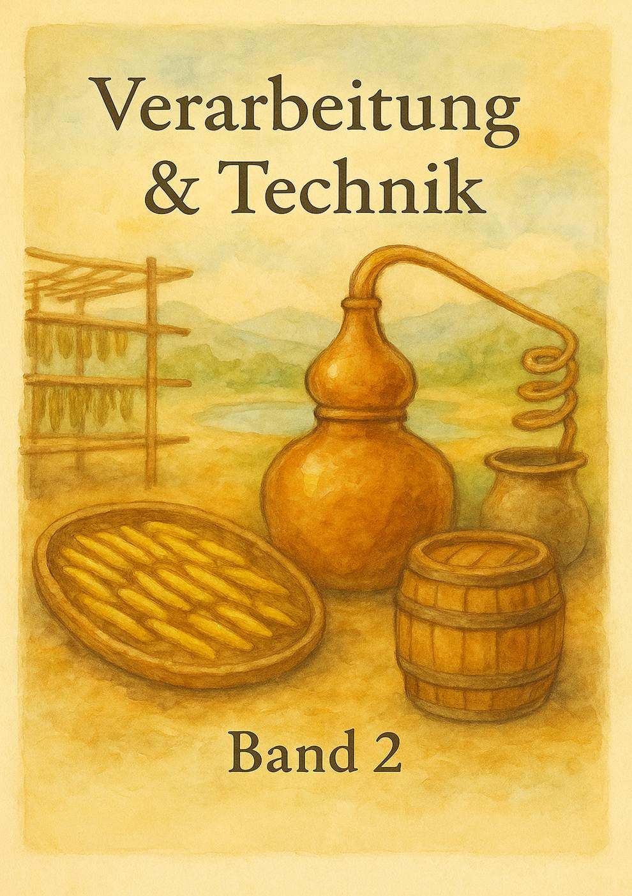
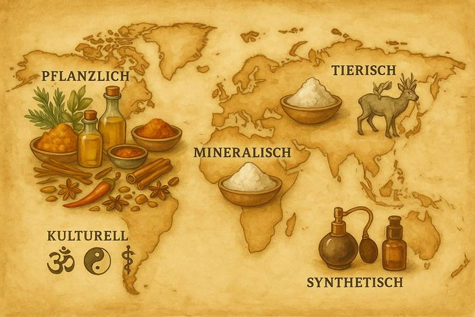
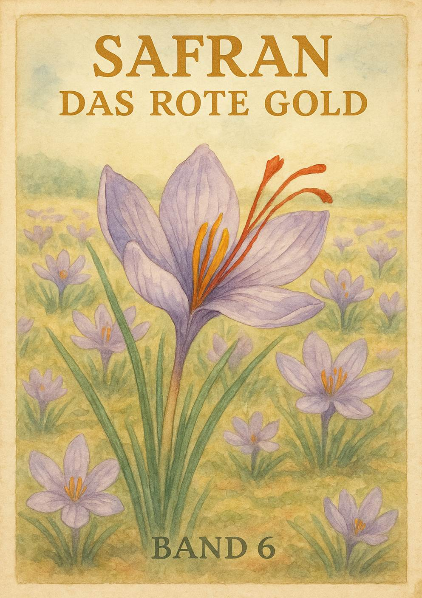
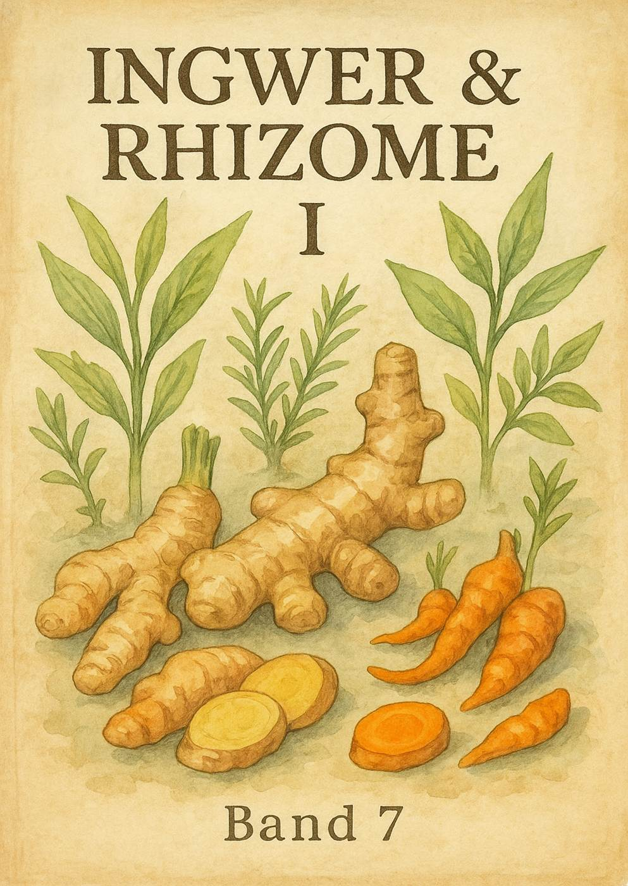

📚 Band 0 Ein Lexikon der Aromen & D fte der Welt
Einleitung Warum ein Lexikon der Aromen?
Aromen sind weit mehr als blo e Sinneseindr cke. Sie sind Kulturgeschichte, Biochemie, Identit t und Emotion zugleich. Seit Jahrtausenden erz hlen sie Geschichten: von Handelswegen, von Ritualen, von Festen und vom allt glichen Essen.
Dieses Werk vereint Naturwissenschaft, Kulinarik, Medizin, Ritual und Symbolik. Es macht sichtbar, wie eng das Zusammenspiel von Pflanzenchemie und Sinneswahrnehmung, von Handelsgeschichte und K chenidentit t verwoben ist.
👉 Band 0 ist der Prolog ein Vorwort in Lexikonform . Er erkl rt die Motivation, die Methodik und den Aufbau. Und er l dt dazu ein, sich nicht nur theoretisch, sondern auch sinnlich einzulassen: lesen, riechen, schmecken, erleben.
[PlH-Illu: B0, Einleitung illu1]
[PlH-QR: B0,
Einleitung, A1-qr1] (En) YouTube: Introduction to the world of spices and
aromas Link: https://www.youtube.com/watch?v=3wP8R8tIh1o
Ziel & Struktur des Werkes
Das Ziel dieses Lexikons ist es, eine Enzyklop die der Aromen zu schaffen, die wissenschaftliche Genauigkeit mit kulturellem Erz hlen verbindet.
Dieses Werk ist mehr als ein Nachschlagewerk es ist ein Atlas der Aromen. Sein Ziel: die Vielfalt der D fte und Geschm cker nicht nur zu dokumentieren, sondern sie auch in ihren kulturellen Geschichten und ihrer wissenschaftlichen Basis verst ndlich zu machen.
Die Struktur des Werkes folgt einem Spannungsbogen:
B nde 1 3: Grundlagen Geschichte, Technik und Sensorik.
B nde 4 12: Die gro en Kapitel der Kr uter & Gew rze die klassischen Pfeiler der Aromenk che.
B nde 13 17: Salze, le, Harze elementare Tr ger von Duft und Geschmack.
B nde 18 20: Tee & Getr nke fl ssige Kulturgeschichte.
B nde 21 23: R ucherstoffe zwischen Ritual, Religion und Alltag.
B nde 24 26: Psychoaktive Pflanzen die Grenze zwischen K che, Ritual und Rausch.
Band 27: Lexikon der Stoffe (Datasheets) das systematische Nachschlagewerk mit alphabetischer Ordnung.
Band 28: Systeme der Aromen & D fte die wissenschaftlich-sensorische Ordnung.
Band 29: Geruch & Geschmack Wissenschaft & Kultur das gro e Finale mit Sinnesphysiologie und Anthropologie.
Band 30: Zukunft der Aromen & D fte Wandel der Aromenwelt zwischen Kulturgeschichte, Klimakrise und Innovation. Von bedrohten Pflanzen bis zur molekularen Zukunft der D fte.
👉 Damit wird dieses Werk zu Enzyklop die und Handbuch zugleich: pr zise in den Fakten, inspirierend in der Lekt re, und immer offen f r die Verbindung von Wissenschaft, Kultur und Genuss.
[PlH-Illu: B0, K1 illu1]
Geschichte der Aromenkunde
Schon in der Fr hzeit entdeckte der Mensch, dass Rauch und Harze mehr waren als blo e D fte. Weihrauch oder Myrrhe wurden verbrannt, um H user zu reinigen, b se Geister zu vertreiben oder Kontakt zu den G ttern aufzunehmen. Aromen waren damit Schutzschild und Br cke zugleich.
In der Antike wurde der Handel mit Gew rzen zu einem Motor der Globalisierung. Pfeffer, Zimt oder Safran legten Tausende Kilometer zur ck, um in den Festhallen Roms und Athens zu landen. F r viele waren sie kostbarer als Gold.
Im Mittelalter waren es die Klosterg rten und die islamische Alchemie, die die Aromenkunde vorantrieben. W hrend Benediktinerm nche Kr uter wie Salbei und Minze kultivierten, entwickelten Gelehrte in Bagdad oder Kairo die Wasserdampfdestillation ein Durchbruch f r die Gewinnung therischer le.
Die Neuzeit brachte Entdeckungsfahrten, Gew rzkriege und Kolonialreiche. H ndler und Seefahrer machten sich nicht auf, um exotische L nder zu sehen ihr Ziel waren die Aromen. Vasco da Gama suchte den Seeweg nach Indien wegen des Pfeffers, Kolumbus segelte los in der Hoffnung auf Zimt und Muskat. Ganze Kriege entz ndeten sich an winzigen Inseln, auf denen Nelken oder Muskat wuchsen.
Die Moderne schlie lich f hrte zu einer neuen Phase: Lebensmittelchemie, Parf merie und die Molekulark che zeigen, dass die Faszination f r Aromen nie endet sie verlagert sich nur in andere Kontexte.
👉 So erz hlt die Geschichte der Aromen zugleich die Geschichte der Menschheit.
[PlH-Illu: B0, K2 illu1]
[PlH-QR: B0, K2, A1-qr2a] (De) YouTube: Geschichte des Gew rzhandels Link: https://www.youtube.com/watch?v=3D9x9C7xJrU
[PlH-QR: B0,
K2, A1-qr2b] (En) YouTube: Spice trade history overview Link:
https://www.youtube.com/watch?v=Arf5hZzjA7Y
Methodik des Lexikons
Die Methodik dieses Lexikons ist interdisziplin r: Es vereint Botanik, Chemie, Kulturgeschichte, Gastronomie und Ritualkunde.
Es ist vergleichend angelegt: Globale Perspektive, aber immer mit Blick auf regionale Unterschiede.
Es ist praktisch: Leser*innen sollen rezipieren und experimentieren mit Rezepten, Verkostungen, Tests.
Und es ist visuell: Mit Illustrationen, Diagrammen, QR-Codes zu Videos.
👉 Das Ergebnis: ein Werk, das Wissenschaft und Erlebnis zusammenf hrt.
[PlH-Illu: B0, K3 illu1]
Vielfalt der Aromen
Aromen sind so vielf ltig wie die Natur und Kultur der Menschheit:
Pflanzlich: Kr uter, Gew rze, Harze, le, Tees.
Mineralisch: Salze, Gesteinsaromen.
Tierisch: historisch Ambergris oder Moschus.
Synthetisch: moderne Parf mchemie.
Kulturell: Systeme wie Ayurveda, TCM oder die europ ische Klostermedizin.
Diese Vielfalt macht klar: Aromen sind keine Nebensache, sondern ein Spiegel kultureller Identit t.
[PlH-Illu: B0, K4 illu1]
[PlH-QR: B0,
K4, A1-qr3] (En) YouTube: World of flavors and aromas Link:
https://www.youtube.com/watch?v=PY6W9V5roU8
Bedeutung der Aromen in der Menschheitsgeschichte
Aromen pr gten die Geschichte in vielen Dimensionen:
konomisch waren sie Ausl ser f r Entdeckungsfahrten und Kolonialismus.
Religi s standen sie im Mittelpunkt von Ritualen: Weihrauch in der Liturgie, Sandelholz in hinduistischen Zeremonien, Myrrhe als Gabe der K nige.
Medizinisch waren sie Grundlage der Heilpflanzenkunde und sp ter der Pharmakologie.
Kulinarisch formten sie die Identit t ganzer K chen von Curry bis Gulasch.
Symbolisch standen sie f r Status, Macht, Liebe und Tod.
👉 Wer Aromen versteht, versteht auch, wie Kulturen sich entwickeln und miteinander verkn pft sind.
[PlH-QR: B0,
K5, A1-qr4] (En) YouTube: Spices in culture and religion Link:
https://www.youtube.com/watch?v=Q0OmVUgI9lM
Moderne Herausforderungen
Heute stehen wir vor Fragen, die fr her so nicht existierten:
Nachhaltigkeit Monokulturen und bernutzung bedrohen Biodiversit t.
F lschungen von Safran bis Vanille ein Milliardengesch ft.
Wissenschaft neue Methoden helfen, doch altes Wissen droht verloren zu gehen.
Kulturelle Aneignung Diskussionen um Authentizit t und Globalisierung.
👉 Aromen sind kein neutrales Feld sie spiegeln immer auch Ethik und Verantwortung.
[PlH-Illu: B0, K6 illu1]
[PlH-QR: B0, K6, A1-qr5a] (De) YouTube: Nachhaltigkeit im Gew rzhandel Link: https://www.youtube.com/watch?v=bLgj3kjP7Lo
[PlH-QR: B0,
K6, A1-qr5b] (En) YouTube: Sustainability in spice trade Link:
https://www.youtube.com/watch?v=Q8vOaO_lRzE
Sensorische Einf hrung f r Leser*innen
Theorie allein gen gt nicht Aromen wollen erlebt werden.
Ein einfaches Starter-Set (Pfeffer, Zimt, Nelken, Vanille, Salz, Minze) macht es m glich, das Gelesene sofort zu pr fen.
👉 bungen:
Blind riechen und beschreiben.
Vergleichen: Ceylon-Zimt vs. Cassia-Zimt, echte Vanille vs. k nstliches Vanillin.
Kombinieren: Pfeffer mit Erdbeeren, Minze mit Schokolade.
So wird Lesen zum sinnlichen Abenteuer.
[PlH-Illu: B0, K7 illu1]
[PlH-QR: B0, K7, A1-qr6a] (De) YouTube: Einsteiger-Guide zum Gew rze-Verkosten Link: https://www.youtube.com/watch?v=O7xVJfA1cn4
[PlH-QR: B0,
K7, A1-qr6b] (En) YouTube: Beginner s guide to tasting spices Link:
https://www.youtube.com/watch?v=PY6W9V5roU8
Zusammenfassung
Band 0 bildet den roten Faden des ganzen Werkes:
Es erkl rt die Motivation, Methodik und Struktur.
Es zeigt die gro e Vielfalt und historische Bedeutung.
Es l dt ein, aktiv mit allen Sinnen zu lesen, zu riechen und zu schmecken.
👉 Damit ist Band 0 das Tor zur Aromawelt offen, neugierig, genussvoll.
[PlH-Illu: B0, Zusammenfassung illu1]
[PlH-QR: B0, Zusammenfassung, A1-qr7a] (De) YouTube: Warum Aromen die Menschheitsgeschichte pr gten Link: https://www.youtube.com/watch?v=4STF-3vSc0Y
[PlH-QR: B0,
Zusammenfassung, A1-qr7b] (En) YouTube: Why flavors shaped human history
Link: https://www.youtube.com/watch?v=3yMDz1YbZ7E
Glossar (Fu noten)
Ayurveda# indische Heilkunst, Balance von K rper, Geist und Ern hrung.
TRPV1# Rezeptor f r Hitzeschmerz, reagiert auf Capsaicin.
Fermentation# biochemische Umwandlung durch Mikroorganismen.
📘 Band 1 Geschichte & Kultur der Aromen
Einleitung
Aromen sind nicht nur Zutaten, sondern Kulturtr ger. Sie begleiteten die Menschheit durch alle Epochen, formten Handelsrouten, beeinflussten Religionen und pr gten den Alltag. Ob als R ucherwerk in Tempeln, als Statussymbol bei r mischen Festgelagen oder als einfache W rze im b uerlichen Eintopf berall lassen sich Aromen als Spiegel der Kulturgeschichte erkennen.
👉 In Band 1 begeben wir uns auf eine Reise durch die Zeiten und Kontinente. Wir sehen, wie Aromen Macht, Glauben, Medizin und Genuss beeinflussten.
[PlH-Illu: B1, Einleitung illu1]
[PlH-QR: B1, Einleitung, A1-qr1] (De) YouTube: Geschichte der Gew rze ARTE-Doku Link: https://www.youtube.com/watch?v=Yf4X4uBIDHY
[PlH-QR: B1,
Einleitung, A1-qr1b] (En) YouTube: The history of spices Link:
https://www.youtube.com/watch?v=yA4t6PztQ_A
Fr hzeit: Rauch, Harze & Heilpflanzen
Schon in der Fr hzeit setzten Menschen D fte und Pflanzen nicht nur zum Essen ein, sondern auch zu rituellen Zwecken. Harze wie Weihrauch oder Myrrhe wurden verbrannt, um Geister zu bes nftigen oder die Ahnen anzurufen. H hlenfunde zeigen, dass Pflanzenreste mit aromatischen len in Feuerstellen gelegt wurden ein Hinweis auf ihre Rolle als magische Schutzstoffe.
Auch die fr he Medizin kannte den Wert von Aromen: Kr uter wie Salbei, Thymian oder Knoblauch wurden gegen Infekte eingesetzt. Ob diese Anwendungen empirisch gewachsen oder mythisch begr ndet waren, l sst sich heute nicht mehr eindeutig sagen sicher ist, dass D fte schon damals als heilkr ftig galten.
[PlH-Illu: B1, K1 illu1]
[PlH-QR: B1,
K1, A1-qr2] (En) YouTube: Prehistoric uses of herbs and incense Link:
https://www.youtube.com/watch?v=R7R12h7H6hE
Antike: Luxus, Macht & Handel
In der Antike wurden Aromen zu Waren von unsch tzbarem Wert. gyptische Priester nutzten R ucherwerk bei Tempelritualen, w hrend in Griechenland und Rom Gew rze wie Pfeffer, Zimt und Safran begehrt waren.
F r die R mer war Pfeffer so kostbar, dass er als Zahlungsmittel diente. Bei Triumphz gen wurden Stra en mit Rosenbl ttern bestreut, und die K che kannte extravagante Rezepte wie den ber hmten Mulsum, einen gew rzten Honigwein.
Der Handel mit Gew rzen verband Asien, Afrika und Europa. ber die Seidenstra e gelangten Zimt und Kardamom nach Rom, w hrend Schiffe aus Indien Pfeffer bis an die Adria brachten.
👉 In dieser Epoche verbanden sich Genuss, Status und Spiritualit t auf einmalige Weise.
[PlH-Illu: B1, K2 illu1]
[PlH-QR: B1, K2, A1-qr3a] (De) YouTube: Gew rze im alten Rom Link: https://www.youtube.com/watch?v=ihFqgH3cdGc
[PlH-QR: B1,
K2, A1-qr3b] (En) YouTube: Spices in ancient Rome Link:
https://www.youtube.com/watch?v=APnwv0aQhYk
Mittelalter: Klosterg rten & arabische H ndler
Das Mittelalter brachte eine neue Bl tezeit der Aromenkunde. In den Kl stern Europas wurden Kr uterg rten angelegt, die nicht nur der Ern hrung, sondern auch der Medizin dienten. Benediktinerm nche pflegten detaillierte Aufzeichnungen ber Heilpflanzen und deren Wirkung.
Parallel florierten im arabischen Raum die Basare. H ndler brachten Safran, Muskat, Nelken und Zimt ber Kairo, Damaskus und Konstantinopel nach Europa. Gelehrte wie Avicenna entwickelten Methoden zur Destillation therischer le, die noch heute in der Parf m- und Heilkunst angewendet werden.
F rstliche Tafeln waren ohne exotische Gew rze kaum denkbar und wer sie sich leisten konnte, demonstrierte damit seinen Reichtum.
[PlH-Illu: B1, K3 illu1]
[PlH-QR: B1, K3, A1-qr4a] (De) YouTube: Die Gew rzstra e im Mittelalter Link: https://www.youtube.com/watch?v=OS5VEtZs7cs
[PlH-QR: B1,
K3, A1-qr4b] (En) YouTube: Medieval spice trade and Arabic medicine Link:
https://www.youtube.com/watch?v=onCqN3IY55g
Neuzeit: Entdeckungsfahrten & Gew rzkriege
Die Neuzeit war gepr gt von einem fieberhaften Wettlauf um Gew rze. Europ ische M chte wie Portugal, Spanien, die Niederlande und sp ter England machten den Gew rzhandel zum Zentrum ihrer Expansionspolitik.
Vasco da Gama suchte gezielt den Seeweg nach Indien, Kolumbus wollte Gew rze im Westen finden und stie dabei auf die Neue Welt . Ganze Kriege entz ndeten sich an winzigen Inseln wie den Molukken, auf denen Nelken und Muskat wuchsen.
Mit den Kolonialreichen kamen nicht nur Gew rze nach Europa, sondern auch ein neues Verst ndnis von Welthandel. Gleichzeitig wuchs die Ausbeutung der Produzentenl nder ein Kapitel, das bis heute nachwirkt.
[PlH-Illu: B1, K4 illu1]
[PlH-QR: B1, K4, A1-qr5a] (De) YouTube: Die Gew rzkriege Link: https://www.youtube.com/watch?v=FAU2SZuovxM
[PlH-QR: B1,
K4, A1-qr5b] (En) YouTube: The spice wars explained Link:
https://www.youtube.com/watch?v=1cA4nE7u7RY
Moderne: Chemie, Globalisierung & Genuss
In der Moderne wandelte sich die Aromenkunde erneut. Die Lebensmittelchemie isolierte einzelne Aromastoffe und machte sie synthetisch herstellbar. So wurde Vanillin als preiswerte Alternative zur echten Vanille erfunden.
Gleichzeitig brachte die Globalisierung Aromen in jeden Supermarkt. Fr her seltene Gew rze wie Muskat oder Chili geh ren heute zur K chenausstattung weltweit.
Die Molekulark che schlie lich macht Aromen zum Forschungsobjekt: Food-Pairing-Analysen, Kombinationen von Erdbeeren mit Pfeffer oder Schokolade mit Chili zeigen, dass Genuss immer wieder neu erfunden werden kann.
👉 Heute stehen Aromen im Spannungsfeld zwischen Industrie, Nachhaltigkeit und Kreativit t.
[PlH-Illu: B1, K5 illu1]
[PlH-QR: B1,
K5, A1-qr6a] (De) YouTube: Lebensmittelchemie und Aromen Link:
https://www.youtube.com/watch?v=siUjqXjoX4c
[PlH-QR: B1,
K5, A1-qr6b] (En) YouTube: Food pairing explained Link:
https://www.youtube.com/watch?v=9ONg7L3ap9w
Rezeptbeispiele
Mulsum (Antiker W rzwein)
1 l Wei wein
200 g Honig
1 Zimtstange, etwas Pfeffer, Safranf den
Alles kurz erhitzen, ziehen lassen, lauwarm servieren.
Hypocras (Mittelalterliche W rzmischung f r Wein)
1 l Rotwein
100 g Zucker
2 Zimtstangen, 1 TL Ingwer, etwas Muskat, Nelken
ber Nacht ziehen lassen, dann filtrieren.
👉 Diese Rezepte zeigen, dass Aromen immer auch Geschmack der Epoche sind.
[PlH-Illu: B1, Rezepte illu1]
Zusammenfassung
Band 1 macht klar: Aromen sind roter Faden der Geschichte. Von der Fr hzeit ber Antike, Mittelalter und Neuzeit bis zur Moderne beeinflussten sie Religion, Medizin, Handel und Genuss. Sie waren Motor f r Kriege und Kolonien, aber auch Quelle f r Kreativit t und Kultur.
👉 Wer Band 1 liest, versteht, dass Aromen Geschichte schreiben und dass sie bis heute Kultur formen.
[PlH-Illu: B1, Zusammenfassung illu1]
[PlH-QR: B1, Zusammenfassung, A1-qr7a] (De) YouTube: Wie Gew rze die Welt ver nderten Link: https://www.youtube.com/watch?v=bW9e4C5O8x8
[PlH-QR: B1,
Zusammenfassung, A1-qr7b] (En) YouTube: How spices changed the world Link:
https://www.youtube.com/watch?v=tb1BoEoVpLM

📘 Band 2 Techniken, Verarbeitung & Zubereitung
Einleitung
Aromen entfalten ihre volle Wirkung nicht allein durch ihre Herkunft, sondern durch die Techniken, mit denen sie behandelt, verarbeitet und zubereitet werden. Ob Trocknen, R sten, Fermentieren oder Destillieren all diese Methoden ver ndern nicht nur Haltbarkeit, sondern auch Geschmack und Duft.
Dieser Band zeigt, wie Menschen seit Jahrtausenden Aromen geformt haben: vom einfachen Lufttrocknen ber alchemistische Versuche der Antike bis hin zu moderner Lebensmitteltechnologie.
👉 Wer Band 2 liest, begreift, dass jede K che ein kleines Labor ist und dass das Spiel mit Aromen immer ein kreativer Akt war.
[PlH-Illu: B2, Einleitung illu1]
[PlH-QR: B2, Einleitung, A1-qr1a] (De) YouTube: K chentechniken im Wandel der Zeit Link: https://www.youtube.com/watch?v=z4uH6Jh3Jtk
[PlH-QR: B2,
Einleitung, A1-qr1b] (En) YouTube: Traditional food processing techniques
Link: https://www.youtube.com/watch?v=4V5axGx63mM
Trocknen & Konservieren
Einer der ltesten Wege, Aromen zu bewahren, ist das Trocknen. Schon in der Fr hzeit h ngten Menschen Kr uter in die Sonne, um sie haltbar zu machen. Im Mittelalter wurden Safranf den, Lorbeerbl tter oder Pfefferk rner luftgetrocknet und in Tonkr gen aufbewahrt.
Heute nutzt man daf r moderne Verfahren wie Gefriertrocknung oder Warmluft fen. Dabei bleibt die Aromaintensit t besser erhalten, und die Produkte sind hygienisch sicherer.
👉 Trockenprodukte wie getrocknete Tomaten oder Chiliflocken zeigen: Reduktion von Wasser hei t Verst rkung des Geschmacks.
[PlH-Illu: B2, K1 illu1]
[PlH-QR: B2,
K1, A1-qr2] (En) YouTube: How spices are dried Link:
https://www.youtube.com/watch?v=3tTRiykTYXo
R sten & Mahlen
R sten ver ndert Aromen radikal. Aus den therischen len von Kaffee, Kakao oder Gew rzen entstehen durch Hitze Maillard-Reaktionen, die komplexe R stnoten hervorbringen.
In Indien werden Gew rze f r Currymischungen oft kurz trocken anger stet, bevor sie gemahlen werden. Auch Sesam, Kreuzk mmel oder Koriandersamen entwickeln dabei tiefere, nussige T ne.
Das anschlie ende Mahlen war fr her harte Handarbeit: M rser, Steinm hlen, sp ter mechanische Ger te. Heute bernehmen elektrische M hlen den Job aber wer einmal frisch im M rser gesto enen Pfeffer probiert, versteht, warum Handarbeit Aromen bewahrt.
[PlH-Illu: B2, K2 illu1]
[PlH-QR: B2, K2, A1-qr3] (De) YouTube: R sten und Mahlen von Gew rzen Link: https://www.youtube.com/watch?v=RbLhYyF4EcQ
Fermentieren & Reifen
Fermentation ist Magie und Wissenschaft zugleich. Aus Kohl wird Sauerkraut, aus Sojabohnen wird Miso oder Sojasauce, aus Kakaobohnen wird die Grundlage von Schokolade. Mikroorganismen verwandeln Zucker und Eiwei e in v llig neue Aromakomplexe.
Auch Reifung ist eine Form kontrollierter Ver nderung: K se, Schinken oder Wein gewinnen Tiefe und Komplexit t erst durch Zeit, Temperatur und mikrobielle Aktivit t.
👉 Fermentation lehrt: Geduld ist ein Aromawerkzeug.
[PlH-Illu: B2, K3 illu1]
[PlH-QR: B2, K3, A1-qr4a] (De) YouTube: Die Kunst der Fermentation Link: https://www.youtube.com/watch?v=5cQHtq_Uh2s
[PlH-QR: B2,
K3, A1-qr4b] (En) YouTube: The science of fermentation Link:
https://www.youtube.com/watch?v=E4Xvxb-QpYA
Destillation & Extraktion
Schon im arabischen Mittelalter entwickelten Alchemisten Verfahren zur Destillation: therische le aus Rosen, Minze oder Lavendel wurden gewonnen. Diese Technik wurde sp ter Grundlage f r Parf merie und Medizin.
Heute geht es weiter mit Extraktionstechniken wie CO₂-Extraktion, die feinste Aromen aus Kr utern oder Kaffeebohnen l st, ohne sie zu zerst ren. Auch die Lebensmittelindustrie nutzt Enzyme oder L sungsmittel, um gezielt einzelne Aromastoffe zu isolieren.
👉 Ob im Labor oder in der K che: Destillation ist die Kunst, Essenzen zu fassen.
[PlH-Illu: B2, K4 illu1]
[PlH-QR: B2,
K4, A1-qr5] (En) YouTube: Essential oil distillation explained Link:
https://www.youtube.com/watch?v=yyaNdrGK6hY
Moderne Verfahren & Convenience
Die Industrialisierung brachte Verfahren wie Spr h- und Gefriertrocknung, die Aromastoffe stabilisieren und transportf hig machen. Aromakapseln in Kaffee oder Instant-Produkten zeigen, wie die Technik Genuss vereinfacht.
Doch die Kehrseite ist Verlust an Authentizit t: Viele Fertigprodukte enthalten nur k nstliche Aromen, die mit den komplexen Profilen der Natur nicht mithalten k nnen.
👉 Moderne Verfahren bewegen sich zwischen Pr zision und Reduktion.
[PlH-Illu: B2, K5 illu1]
[PlH-QR: B2, K5, A1-qr6] (De) YouTube: Aromen in der Lebensmittelindustrie Link: https://www.youtube.com/watch?v=wRkk5I1sF3Y
Rezeptbeispiele
Ger stete Gew rzmischung (Masala-Art)
2 EL Kreuzk mmel
1 EL Koriandersamen
1 TL Pfefferk rner
2 Nelken
Alles in einer Pfanne ohne l r sten, bis es duftet. Abk hlen lassen und im M rser fein zersto en.
Destilliertes Kr uterwasser
Frische Minze oder Rosmarin
In einem kleinen Destillierapparat mit Wasser erhitzen, Dampf kondensieren lassen.
Ergebnis: Ein klares, leicht aromatisches Hydrolat, das sich als Basis f r Getr nke oder Desserts eignet.
[PlH-Illu: B2, Rezepte illu1]
Zusammenfassung
Band 2 zeigt: Techniken sind Schl ssel zu Aromen.
Trocknen verl ngert Haltbarkeit.
R sten vertieft Geschmacksnoten.
Fermentation erschafft Neues.
Destillation f ngt Essenzen ein.
Moderne Verfahren geben Zugang f r alle bergen aber auch Risiken von Vereinfachung.
👉 So ist die Geschichte der Aromatechnik ein Spiegel der Menschheitsgeschichte: von Feuerstellen bis High-Tech-Labor.
[PlH-Illu: B2, Zusammenfassung illu1]
[PlH-QR: B2, Zusammenfassung, A1-qr7a] (De) YouTube: Verarbeitung von Gew rzen heute Link: https://www.youtube.com/watch?v=6mBLW3b5sBg
[PlH-QR: B2, Zusammenfassung, A1-qr7b] (En) YouTube: Modern
spice processing Link: https://www.youtube.com/watch?v=QUf_5jLAmoc
📘 Band 3 Sensorik & Wahrnehmung der Aromen
Einleitung
Aromen sind nicht einfach nur Geschmack sie sind ein Zusammenspiel verschiedener Sinne. Schon beim ersten Bissen eines Gerichts arbeitet ein ganzes Netzwerk aus Nase, Zunge, Rachenraum und Gehirn zusammen. Ger che wecken Erinnerungen, Geschm cker pr gen Vorlieben, und oft entscheidet das Unbewusste schneller als wir denken.
👉 Band 3 zeigt, wie Aromen auf uns wirken biologisch, psychologisch und kulturell.
[PlH-Illu: B3, Einleitung illu1]
[PlH-QR: B3, Einleitung, A1-qr1a] (De) YouTube: Wie wir Geschmack wahrnehmen Link: https://www.youtube.com/watch?v=c6NStk2rhcA
[PlH-QR: B3,
Einleitung, A1-qr1b] (En) YouTube: How do we perceive taste and aroma?
Link: https://www.youtube.com/watch?v=RgdmJGRrQBI
Geruchssinn: Das Tor zu Erinnerungen
Der Geruchssinn ist unser empfindlichstes Sinnesorgan f r Aromen. Schon winzige Mengen fl chtiger Molek le reichen aus, um Rezeptoren in der Nase zu aktivieren.
Besonders faszinierend: Ger che sind eng mit dem limbischen System verbunden also mit Emotionen und Erinnerungen. Der Duft von frisch gebackenem Brot kann Kindheitserinnerungen wecken, Lavendel beruhigt, und der Geruch von Rauch signalisiert Gefahr.
👉 Geruch ist nicht nur Chemie, sondern auch Erinnerungstr ger.
[PlH-Illu: B3, K1 illu1]
[PlH-QR: B3,
K1, A1-qr2] (En) YouTube: The science of smell Link:
https://www.youtube.com/watch?v=Jfp8RbiYpNM
Geschmackssinn: S , sauer, salzig, bitter & umami
Auf der Zunge sitzen Rezeptoren f r die f nf Grundgeschmacksrichtungen: s , sauer, salzig, bitter und umami. Diese sind evolution r gepr gt: S signalisiert Energie, Bitter warnt vor Gift, Sauer weist auf unreife Fr chte hin, Salz ist lebensnotwendig, und Umami verr t Eiwei quellen.
Doch die Vielfalt der Aromen entsteht erst im Zusammenspiel mit dem Geruchssinn. Ohne Nase schmeckt ein Apfel fade mit Nase erleben wir ein komplexes Aroma von Fruchtigkeit, S e und S ure.
👉 Geschmack ist die Basis aber Aromen entstehen erst durch Kombination.
[PlH-Illu: B3, K2 illu1]
[PlH-QR: B3, K2, A1-qr3a] (De) YouTube: Die f nf Geschmacksrichtungen erkl rt Link: https://www.youtube.com/watch?v=0o61alghd3U
[PlH-QR: B3,
K2, A1-qr3b] (En) YouTube: The 5 basic tastes Link:
https://www.youtube.com/watch?v=a9NEoN0lDAc
Trigeminalsystem: Sch rfe, K hle & Reizstoffe
Neben Geruch und Geschmack spielt das Trigeminalsystem eine wichtige Rolle. Es reagiert auf Sch rfe (Capsaicin im Chili), K hle (Menthol in Minze) oder prickelnde Reize (Kohlens ure im Wasser, Senf le im Wasabi).
Diese Empfindungen sind keine Geschm cker im klassischen Sinn, sondern Schmerz- und Temperatureindr cke, die wir mit Genuss verkn pfen. Ohne Chili kein indisches Curry, ohne Pfefferminz kein Mojito.
👉 Trigeminale Reize machen Aromen k rperlich sp rbar.
[PlH-Illu: B3, K3 illu1]
[PlH-QR: B3,
K3, A1-qr4] (En) YouTube: Why chili burns and mint cools Link:
https://www.youtube.com/watch?v=Z0bK4tE5xWw
Psychologie & Kultur der Aromen
Aromen sind immer auch kulturell gepr gt. Was in einem Land Delikatesse ist, gilt anderswo als ungenie bar. Durian wird in S dostasien geliebt, in Europa oft als absto end empfunden. Lakritz ist in Nordeuropa ein Klassiker, anderswo eher eine Randerscheinung.
Psychologisch wirken Aromen ber Erziehung und Gewohnheit. Kinder, die fr h bittere Gem se kennenlernen, akzeptieren sie leichter. D fte k nnen Emotionen verst rken: Vanille beruhigt, Rosmarin belebt, Kaffee weckt.
👉 Wahrnehmung von Aromen ist immer eine Mischung aus Biologie und Biografie.
[PlH-Illu: B3, K4 illu1]
[PlH-QR: B3, K4, A1-qr5a] (De) YouTube: Warum wir Aromen unterschiedlich wahrnehmen Link: https://www.youtube.com/watch?v=VZy1i76jHMs
[PlH-QR: B3, K4, A1-qr5b] (En) YouTube: Cultural differences in taste perception Link: https://www.youtube.com/watch?v=MW-sZ7U_0Dw
Moderne Sensorik & Food Pairing
Heute untersucht die Sensorikforschung Aromen systematisch. Food Pairing analysiert, welche Lebensmittel hnliche Aromamolek le teilen und daher gut harmonieren wie Erdbeeren mit Balsamico oder Schokolade mit Chili.
Mit Aromar dern und sensorischen Panels lassen sich Produkte objektiv beschreiben. Gleichzeitig zeigt die Forschung, wie subjektiv Wahrnehmung bleibt: Zwei Menschen k nnen denselben Wein v llig unterschiedlich erleben.
👉 Moderne Sensorik verbindet Wissenschaft und Genuss.
[PlH-Illu: B3, K5 illu1]
[PlH-QR: B3,
K5, A1-qr6] (En) YouTube: The science of food pairing Link:
https://www.youtube.com/watch?v=Jc5He_0r8kk
Praktische bungen
Blindverkostung: Augen verbinden, kleine Proben von Kr utern oder Gew rzen riechen und beschreiben.
Aromaged chtnis trainieren: Einmal pro Woche einen Duft des Tages bewusst wahrnehmen und notieren.
Food-Pairing-Test: Erdbeeren mit Pfeffer, K se mit Honig, Kaffee mit Kardamom probieren.
👉 Wer diese bungen macht, entdeckt Aromen bewusster und differenzierter.
[PlH-Illu: B3, bungen illu1]
Zusammenfassung
Band 3 macht deutlich: Aromen sind ein Zusammenspiel aus Geruch, Geschmack und trigeminaler Wahrnehmung, verst rkt durch Psychologie und Kultur. Sie pr gen Erinnerungen, Emotionen und kulinarische Identit t.
👉 Wer die eigene Sensorik schult, entdeckt die Welt der Aromen neu reichhaltiger, intensiver, genussvoller.
[PlH-Illu: B3, Zusammenfassung illu1]
[PlH-QR: B3, Zusammenfassung, A1-qr7a] (De) YouTube: Sensorik in der Lebensmittelwelt Link: https://www.youtube.com/watch?v=Vti-1w9LXxg
[PlH-QR: B3,
Zusammenfassung, A1-qr7b] (En) YouTube: Understanding food sensory science
Link: https://www.youtube.com/watch?v=KPhD5gnpftg

📗 Band 4 Pfeffer & Verwandte
Einleitung
Der Pfeffer ist das wohl ber hmteste aller Gew rze. Er begleitet die Menschheit seit Jahrtausenden und wurde in manchen Epochen so hoch gesch tzt, dass er mit Gold aufgewogen wurde. Heute mag er allt glich wirken, doch noch immer ist er ein Symbol f r Sch rfe, W rze und Kulturgeschichte.
In diesem Band widmen wir uns dem Pfeffer in all seinen Facetten: von den botanischen Urspr ngen ber die chemische Zusammensetzung seiner Sch rfe bis hin zu den vielen kulinarischen Anwendungen. Ebenso werfen wir einen Blick auf seine Verwandten, die nicht zur Gattung Piper geh ren, aber im Alltag als Pfeffer bezeichnet werden vom Szechuanpfeffer bis zum Rosa Pfeffer.
👉 Pfeffer ist mehr als eine Zutat er ist ein kulturelles Ph nomen.
[PlH-Illu: B4, Einleitung illu1]
[PlH-QR: B4, Einleitung, A1-qr1a] (De) YouTube: Die Geschichte des Pfeffers Link: https://www.youtube.com/watch?v=PwT_YiV1XAo
[PlH-QR: B4,
Einleitung, A1-qr1b] (En) YouTube: The story of pepper Link:
https://www.youtube.com/watch?v=Q-VDUs9rKPw
Botanische Grundlagen
Der schwarze Pfeffer (Piper nigrum) stammt urspr nglich aus Indien, genauer gesagt von der Malabark ste. Es handelt sich um eine Kletterpflanze, deren Fr chte die Pfefferk rner je nach Erntezeitpunkt und Verarbeitung als gr ner, schwarzer oder wei er Pfeffer in den Handel kommen.
Der Unterschied liegt weniger in der Pflanze selbst, sondern in der Verarbeitung:
Gr ner Pfeffer wird unreif geerntet und schnell getrocknet oder eingelegt.
Schwarzer Pfeffer entsteht, wenn die unreifen K rner fermentieren und trocknen.
Wei er Pfeffer wird aus vollreifen Fr chten gewonnen, deren u ere Schale entfernt wird.
Diese Vielfalt zeigt, wie stark die Verarbeitung die Wahrnehmung von Aromen und Sch rfe beeinflusst.
[PlH-Illu: B4, K1 illu1]
[PlH-QR: B4,
K1, A1-qr2] (En) YouTube: Types of pepper explained Link:
https://www.youtube.com/watch?v=9Xqq8dP5rSc
Chemie & Sch rfe
Die Sch rfe des Pfeffers verdankt sich vor allem dem Alkaloid Piperin. Es reizt die Rezeptoren des Trigeminalsystems und vermittelt so ein brennendes Gef hl, das allerdings sanfter wirkt als die Sch rfe des Capsaicin im Chili oder des Allylisothiocyanats im Senf.
Neben Piperin enth lt Pfeffer therische le, die ihm seine w rzigen, holzigen und frischen Noten geben. Deshalb schmeckt frisch gemahlener Pfeffer deutlich komplexer als vorgemahlener.
👉 Sch rfe ist nicht gleich Sch rfe Pfeffer hat seine eigene Charakteristik, die ihn einzigartig macht.
[PlH-Illu: B4, K2 illu1]
[PlH-QR: B4, K2, A1-qr3] (De) YouTube: Warum Pfeffer scharf ist Link: https://www.youtube.com/watch?v=6R2mVNHp7Lk
Kulturgeschichte
Schon in der Antike war Pfeffer ein begehrtes Handelsgut. Die R mer importierten ihn in gro en Mengen und nutzten ihn in K che und Medizin. Im Mittelalter wurde er in Europa zum Luxusgut so wertvoll, dass er als Zahlungsmittel diente. Der Begriff Pfeffersack f r reiche Kaufleute stammt aus dieser Zeit.
Die Suche nach Pfeffer war ein entscheidender Motor f r die Entdeckungsreisen: Vasco da Gama suchte den Seeweg nach Indien, Kolumbus hoffte, Pfeffer im Westen zu finden. Ganze Kolonialreiche entstanden, um den Handel mit diesem kleinen Korn zu kontrollieren.
👉 Pfeffer ist ein Beispiel daf r, wie ein Gew rz die Weltgeschichte mitgestalten konnte.
[PlH-Illu: B4, K3 illu1]
[PlH-QR: B4, K3, A1-qr4a] (De) YouTube: Der Gew rzhandel im Mittelalter Link: https://www.youtube.com/watch?v=lACa1i6Ip8g
[PlH-QR: B4,
K3, A1-qr4b] (En) YouTube: Pepper trade and the spice routes Link:
https://www.youtube.com/watch?v=O8l7YYrGzW4
Symbolik & Sprache
Pfeffer ist nicht nur kulinarisch wichtig, sondern auch sprachlich und symbolisch tief verankert. Redewendungen wie gepfeffert f r teuer oder Pfeffer im Hintern f r Tatendrang zeigen, wie stark Pfeffer als Bild in die Alltagssprache eingegangen ist.
In manchen Kulturen galt er als heilkr ftig und wurde gegen Erk ltungen oder Verdauungsprobleme eingesetzt. In anderen war er ein Statussymbol, das Macht und Wohlstand ausdr ckte.
👉 Pfeffer steht f r Energie, W rze und Lebensfreude nicht nur auf dem Teller.
[PlH-Illu: B4, K4 illu1]
Verwandte des Pfeffers
Neben dem echten Pfeffer (Piper nigrum) kennen wir zahlreiche Verwandte , die botanisch anders einzuordnen sind, aber im Alltag unter demselben Namen laufen:
Szechuanpfeffer (Rutaceae): mit zitroniger Frische und einem typischen bet ubenden Effekt.
Rosa Pfeffer (Schinus terebinthifolia): eigentlich eine Beere, mild und fruchtig.
Langer Pfeffer (Piper longum): schon in der Antike bekannt, aromatisch und intensiv.
Diese Gew rze erweitern das Spektrum und zeigen, dass Pfeffer mehr eine kulturelle Kategorie als eine botanische ist.
[PlH-Illu: B4, K5 illu1]
[PlH-QR: B4,
K5, A1-qr5] (En) YouTube: Different types of peppercorns Link:
https://www.youtube.com/watch?v=6tAEvRskZVc
Kulinarische Anwendung & Rezepte
Kein Gew rz ist so universell wie Pfeffer. Er passt zu Fleisch, Fisch, Gem se, K se und sogar zu s en Speisen.
Ein klassisches Beispiel ist das Steak au Poivre: Ein Rindersteak wird kr ftig mit grob zersto enem Pfeffer eingerieben, scharf angebraten und mit einer Cognac-Sahnesauce vollendet. Hier zeigt sich, wie Pfeffer zugleich Sch rfe, W rze und eine aromatische Tiefe schenkt.
Auch Desserts lassen sich mit Pfeffer bereichern: Erdbeeren mit frisch gemahlenem schwarzem Pfeffer wirken intensiver und berraschend harmonisch.
👉 Pfeffer ist ein Universalgew rz, das fast jede K che der Welt verbindet.
[PlH-Illu: B4, Rezepte illu1]
[PlH-QR: B4, Rezepte, A1-qr6] (De) YouTube: Steak au Poivre zubereiten Link: https://www.youtube.com/watch?v=pp0noB4dWZc
Zusammenfassung
Der Pfeffer ist mehr als ein Gew rz. Er ist ein Symbol f r Handel, Kultur und Geschichte. Seine verschiedenen Formen gr n, schwarz, wei , aber auch seine Verwandten wie Szechuanpfeffer machen ihn zu einem der vielf ltigsten Aromen der Welt.
👉 Wer Pfeffer versteht, versteht ein St ck Weltgeschichte und entdeckt zugleich einen Schl ssel zu universellem Genuss.
[PlH-Illu: B4, Zusammenfassung illu1]
[PlH-QR: B4, Zusammenfassung, A1-qr7a] (De) YouTube: Pfeffer in der Weltk che Link: https://www.youtube.com/watch?v=dYrKfwvbEhg
[PlH-QR: B4,
Zusammenfassung, A1-qr7b] (En) YouTube: The global role of pepper Link:
https://www.youtube.com/watch?v=3AX8vNMiXlY
📘 Band 5 Zimt, Nelken & Vanille
Einleitung
Die Kombination von Zimt, Nelken und Vanille steht wie kaum etwas anderes f r Sinnlichkeit und Exotik. Diese drei Gew rze pr gten nicht nur den Geschmack der europ ischen K che, sondern auch den weltweiten Handel. Ihre Geschichten sind eng verkn pft mit Mythen, Machtk mpfen und Kolonialismus und bis heute mit besonderen Genussmomenten.
Ob in winterlichen Backstuben, in Parfums oder in herzhaften Gerichten: Zimt, Nelken und Vanille sind universelle Symbole f r W rme, S e und W rze.
[PlH-Illu: B5, Einleitung illu1]
[PlH-QR: B5, Einleitung, A1-qr1a] (De) YouTube: Zimt, Nelken und Vanille die Gew rze der Welt Link: https://www.youtube.com/watch?v=nCjD1B0zJo0
[PlH-QR: B5,
Einleitung, A1-qr1b] (En) YouTube: History of cinnamon, cloves and vanilla
Link: https://www.youtube.com/watch?v=Pc8ZoRr2QzA
Zimt
Der Zimt ist die getrocknete Rinde von B umen der Gattung Cinnamomum. Schon in der Antike galt er als Luxusgut, das seinen Weg aus Sri Lanka und S dindien ber arabische H ndler nach Europa fand.
In der K che wird Zimt sowohl s als auch herzhaft eingesetzt: In Europa pr gt er Weihnachtsgeb ck, in Nordafrika w rzt er Tajines, in Asien ist er Teil von Currys und Teemischungen.
Ein klassisches Rezept ist der Zimttee: Ein St ck Zimtstange wird in hei em Wasser aufgekocht, dazu etwas Honig ein Getr nk, das W rme und Wohlbefinden schenkt.
👉 Zimt ist ein Br ckengew rz zwischen S e und W rze.
[PlH-Illu: B5, K1 illu1]
[PlH-QR: B5,
K1, A1-qr2] (En) YouTube: How cinnamon is made Link:
https://www.youtube.com/watch?v=Xp3XmSMPq1E
Nelken
Die Nelken sind die getrockneten Bl tenknospen des Syzygium aromaticum, einer Pflanze, die urspr nglich von den Molukken, den Gew rzinseln Indonesiens, stammt. Ihr intensives Aroma ist gepr gt von Eugenol, einem therischen l mit bet ubender und heilender Wirkung.
Historisch waren Nelken so wertvoll, dass ganze Kolonialkriege um ihre Herkunftsgebiete gef hrt wurden. Heute sind sie ein unverzichtbarer Bestandteil vieler Gew rzmischungen wie Garam Masala oder Lebkuchengew rz.
Ein klassisches Beispiel ist der Gl hwein: Rotwein wird mit
Zucker, Zimt, Orangenschale und Nelken erhitzt und
entfaltet ein unverwechselbares winterliches Aroma.
👉 Nelken stehen f r Tiefe, Intensit t und festliche Stimmung.
[PlH-Illu: B5, K2 illu1]
[PlH-QR: B5, K2, A1-qr3] (De) YouTube: Nelken das Aroma der Tropen Link: https://www.youtube.com/watch?v=9oRHzDkDfoA
Vanille
Die Vanille gilt als die K nigin der Gew rze . Sie stammt von den Schoten einer Orchideenart (Vanilla planifolia), die urspr nglich in Mexiko beheimatet ist. Erst durch die Best ubung von Hand wurde ihr Anbau im 19. Jahrhundert weltweit m glich heute sind Madagaskar, R union und Tahiti die wichtigsten Produzenten.
Ihr Duft und Geschmack stammen vom Vanillin, das sich bei der langen Fermentation der Schoten entwickelt. Vanille ist fester Bestandteil der Patisserie, in Cremes, Eis und Geb ck. Doch auch in herzhaften Gerichten, etwa in Saucen zu Krustentieren, zeigt sie ihre Raffinesse.
Ein ikonisches Rezept ist die Cr me br l e: Milch, Sahne und Vanilleschoten werden erhitzt, mit Eigelb vermischt und im Ofen gegart. Der kr nende Abschluss: eine Karamellkruste, die mit Vanilleduft verschmilzt.
👉 Vanille ist ein Symbol f r Eleganz und Sinnlichkeit.
[PlH-Illu: B5, K3 illu1]
[PlH-QR: B5,
K3, A1-qr4] (En) YouTube: How vanilla is grown and processed Link:
https://www.youtube.com/watch?v=U9QGg1xv6_4
Zusammenfassung
Zimt, Nelken und Vanille erz hlen Geschichten von Luxus, Kolonialismus und Genuss. Sie stehen f r die Sehnsucht nach fernen L ndern, f r die Macht des Handels und bis heute f r die kleinen Momente von Sinnlichkeit und W rme in der K che.
👉 Wer diese drei Gew rze versteht, versteht einen zentralen Teil der Geschichte der Aromen.
[PlH-Illu: B5, Zusammenfassung illu1]
[PlH-QR: B5, Zusammenfassung, A1-qr5a] (De) YouTube: Drei Gew rze, die die Welt ver nderten Link: https://www.youtube.com/watch?v=IezYtVd-WjM
[PlH-QR: B5,
Zusammenfassung, A1-qr5b] (En) YouTube: Spices that shaped history: cinnamon,
cloves & vanilla Link: https://www.youtube.com/watch?v=l85oMYGhhoU

📘 Band 6 Safran Das rote Gold
Einleitung
Der Safran gilt als das teuerste Gew rz der Welt. Schon ein winziges Fl schchen mit den roten F den kann ein kleines Verm gen kosten. Der Grund liegt in seiner aufwendigen Gewinnung: Aus den Bl ten des Safrankrokus (Crocus sativus) m ssen die feinen Narbenf den in m hsamer Handarbeit geerntet werden.
Der Duft von Safran ist unvergleichlich: warm, erdig, leicht honigartig, mit einem bitteren Unterton. Schon wenige F den gen gen, um Gerichte wie Paella oder Risotto alla Milanese in leuchtendes Gelb zu tauchen und ihnen ein tiefes, unverwechselbares Aroma zu geben.
👉 Safran ist nicht nur ein Gew rz er ist ein Mythos.
[PlH-Illu: B6, Einleitung illu1]
[PlH-QR: B6, Einleitung, A1-qr1a] (De) YouTube: Safran Das teuerste Gew rz der Welt Link: https://www.youtube.com/watch?v=Kj9u9LAr9Hg
[PlH-QR: B6,
Einleitung, A1-qr1b] (En) YouTube: The story of saffron Link:
https://www.youtube.com/watch?v=HPpRlzX7LUs
Geschichte
Die Geschichte des Safrans reicht Tausende Jahre zur ck. Schon in der Antike wurde er in Mesopotamien und im alten Persien kultiviert. In Griechenland galt Safran als Symbol der G tter und wurde in Mythen mit Helios, dem Sonnengott, verbunden.
Im Mittelalter erreichte Safran Europa ber die arabischen Handelswege. Er wurde nicht nur als Gew rz, sondern auch als Farbstoff f r Textilien und als Heilmittel eingesetzt. Der hohe Wert f hrte sogar zu den sogenannten Safrankriegen, die im 14. Jahrhundert in Mitteleuropa um Lieferrechte und F lschungen ausbrachen.
In der Neuzeit blieb Safran begehrt. Besonders in Spanien und Italien entwickelte er sich zu einem unverzichtbaren Bestandteil der K che von der Paella Valenciana bis zum Risotto alla Milanese.
👉 Safran erz hlt die Geschichte von Luxus, Handel und Kulturkontakt.
[PlH-Illu: B6, K1 illu1]
[PlH-QR: B6,
K1, A1-qr2] (En) YouTube: History of saffron trade Link:
https://www.youtube.com/watch?v=E-sP2hPjYrw
Botanik & Anbau
Der Safrankrokus (Crocus sativus) ist eine sterile Hybridpflanze, die sich nur ber Tochterknollen vermehren l sst. Jede Bl te tr gt nur drei Narbenf den, die von Hand geerntet werden m ssen. Um ein Kilogramm Safran zu gewinnen, braucht es etwa 150.000 Bl ten.
Der Anbau erfolgt traditionell in Iran, Spanien, Kaschmir und zunehmend auch in Griechenland, Marokko und Afghanistan. Die Pflanze ist anspruchsvoll: Sie ben tigt ein trockenes Klima, kalkhaltige B den und viel Sonne.
👉 Safran ist ein Gew rz der Geduld und Pr zision.
[PlH-Illu: B6, K2 illu1]
[PlH-QR: B6, K2, A1-qr3] (De) YouTube: Wie Safran angebaut wird Link: https://www.youtube.com/watch?v=6lTb30zBNG4
Chemie & Sensorik
Die Einzigartigkeit des Safrans beruht auf drei Hauptstoffen:
Crocin: verantwortlich f r die goldgelbe Farbe.
Safranal: schenkt das typische Aroma, warm und leicht s lich.
Picrocrocin: sorgt f r die feine, bittere Note.
Diese Kombination macht Safran zu einem komplexen Sinneserlebnis, das sowohl im Duft als auch im Geschmack unverwechselbar ist.
👉 Safran wirkt in winzigen Mengen doch sein Aroma bleibt unvergesslich.
[PlH-Illu: B6, K3 illu1]
[PlH-QR: B6,
K3, A1-qr4] (En) YouTube: The chemistry of saffron Link:
https://www.youtube.com/watch?v=GNoWlAFGS7w
F lschungen & Qualit t
Weil Safran so kostbar ist, war er seit jeher Ziel von F lschungen. Schon im Mittelalter wurde er mit Ringelblumenbl ten, Saflor oder Rote-Bete-Pulver gestreckt. Auch heute noch werden minderwertige F den oder k nstlich gef rbte Produkte als Safran verkauft.
Echter Safran erkennt man an seiner intensiven Farbe, die langsam ins Wasser bergeht, und an seinem vielschichtigen Aroma. Seri se Produzenten kennzeichnen Safran oft mit G tesiegeln oder geografischer Herkunftsangabe.
👉 Die Echtheit des Safrans ist so wertvoll wie das Gew rz selbst.
[PlH-Illu: B6, K4 illu1]
[PlH-QR: B6, K4, A1-qr5a] (De) YouTube: Wie man echten Safran erkennt Link: https://www.youtube.com/watch?v=aVrrjT2HF7o
[PlH-QR: B6,
K4, A1-qr5b] (En) YouTube: Spotting fake saffron Link:
https://www.youtube.com/watch?v=bLtwXZTtFFM
Kulinarische Vielfalt
In der K che hat Safran einen festen Platz in den gro en Klassikern:
In Spanien pr gt er die Paella Valenciana, deren goldene Farbe und Duft ohne ihn undenkbar sind.
In Italien gibt er dem Risotto alla Milanese seine charakteristische Farbe und Eleganz.
In Indien findet er Verwendung in Kheer (Milchreis) oder im aromatischen Biryani.
Auch in S speisen wie Safran-Brioche oder Gl gg (schwedischer Weihnachts-Punsch) spielt er eine zentrale Rolle.
👉 Safran ist ein Gew rz der Feste und besonderen Momente.
[PlH-Illu: B6, K5 illu1]
[PlH-QR: B6, K5, A1-qr6] (De) YouTube: Risotto alla Milanese Originalrezept Link: https://www.youtube.com/watch?v=3SVbtHMM0NE
Medizin & Kultur
In der traditionellen Medizin wurde Safran als Heilmittel gegen Depressionen, zur St rkung des Herzens und gegen Schmerzen verwendet. Moderne Studien weisen tats chlich auf antioxidative und stimmungsaufhellende Effekte hin auch wenn die Dosierung heikel bleibt.
Kulturell ist Safran oft mit Heiligkeit und Reinheit verbunden. In Indien gilt er als heilige Farbe im Hinduismus und f rbt die Gew nder von M nchen.
👉 Safran ist ein Gew rz mit spiritueller und medizinischer Dimension.
[PlH-Illu: B6, K6 illu1]
Zusammenfassung
Der Safran ist nicht nur das rote Gold, sondern auch ein Symbol f r Geduld, Luxus und Kulturgeschichte. Von der m hsamen Ernte ber seine chemische Einzigartigkeit bis zu seiner Rolle in K che und Religion zeigt er, wie ein kleines Gew rz ganze Geschichten in sich tragen kann.
👉 Safran ist ein Gew rz der Menschheit kostbar, mythisch, zeitlos.
[PlH-Illu: B6, Zusammenfassung illu1]
[PlH-QR: B6, Zusammenfassung, A1-qr7a] (De) YouTube: Safran Ein Mythos der K che Link: https://www.youtube.com/watch?v=jVHRlTpP_HU
[PlH-QR: B6,
Zusammenfassung, A1-qr7b] (En) YouTube: Saffron spice of legend Link:
https://www.youtube.com/watch?v=fyl9hP2gXKQ

📘 Band 7 Ingwer & Rhizome I (Ingwer, Kurkuma, Galgant)
Einleitung
Die Rhizome unterirdische Sprossachsen von Pflanzen geh ren zu den faszinierendsten Aromatr gern der Weltk chen. Besonders Ingwer, Kurkuma und Galgant haben Asien seit Jahrtausenden gepr gt. Sie sind nicht nur Gew rze, sondern auch Heilpflanzen, die in Ayurveda, Traditioneller Chinesischer Medizin und europ ischen Klosterg rten gleicherma en gesch tzt wurden.
Mit ihrem erdigen, scharfen und warmen Aroma sind sie sowohl medizinische Begleiter als auch kulinarische Basiszutaten von Currys bis zu modernen Smoothies.
👉 Rhizome sind die Speicher der Erde konzentrierte Kraft in Wurzelform.
[PlH-Illu: B7, Einleitung illu1]
[PlH-QR: B7, Einleitung, A1-qr1a] (De) YouTube: Ingwer, Kurkuma und Galgant erkl rt Link: https://www.youtube.com/watch?v=v3Zmj_Y3Anw
[PlH-QR: B7,
Einleitung, A1-qr1b] (En) YouTube: Ginger, turmeric & galangal overview
Link: https://www.youtube.com/watch?v=HdwWleC1RjQ
Ingwer
Der Ingwer (Zingiber officinale) ist eines der ltesten bekannten Gew rze der Menschheit. Bereits in der Antike gelangte er von Indien ber die Handelsrouten bis nach Rom, wo er als Heilmittel und K chenzutat hochgesch tzt wurde.
Sein Aroma ist zitronig-frisch, mit einer markanten Sch rfe, die von den Inhaltsstoffen Gingerolen und Shogaolen stammt. In der asiatischen K che ist er unverzichtbar: in Currys, Wok-Gerichten und Tees. In der westlichen Welt hat er vor allem als Ingwertee und in Geb ck wie Lebkuchen Tradition.
Medizinisch wird Ingwer gegen belkeit, Erk ltungen und Verdauungsprobleme eingesetzt. Moderne Studien best tigen seine entz ndungshemmenden Eigenschaften.
Ein einfaches Rezept ist der frische Ingwertee: Ein daumengro es St ck Ingwer wird in Scheiben geschnitten, mit hei em Wasser bergossen und mit Honig verfeinert.
👉 Ingwer verbindet Feuer und Frische.
[PlH-Illu: B7, K1 illu1]
[PlH-QR: B7,
K1, A1-qr2] (En) YouTube: Health benefits of ginger Link:
https://www.youtube.com/watch?v=zE9_3Q0QYDY
Kurkuma
Die Kurkuma (Curcuma longa) wird auch Gelbwurz genannt. Ihr erdiges, warmes Aroma und ihre intensive gelbe Farbe machten sie zu einem festen Bestandteil indischer und s dostasiatischer K chen.
Geschichtlich reicht ihre Verwendung bis in die vedischen Texte Indiens zur ck, wo sie nicht nur als Gew rz, sondern auch als heiliger Stoff galt. In hinduistischen Hochzeitsritualen wird Kurkuma bis heute eingesetzt, und in der Ayurveda gilt sie als Reinigungs- und Heilmittel.
Ihr wichtigster Inhaltsstoff ist das Curcumin, das antioxidative und entz ndungshemmende Wirkungen entfaltet. In der modernen K che findet sie sich in Currymischungen, goldener Milch und sogar in Smoothies.
Ein klassisches Rezept ist die Goldene Milch: Milch (oder pflanzliche Alternative) wird mit Kurkumapulver, Ingwer, Zimt, Pfeffer und Honig erhitzt. Das Getr nk w rmt von innen und gilt als st rkendes Heilmittel.
👉 Kurkuma ist die Sonne im Gew rzregal.
[PlH-Illu: B7, K2 illu1]
[PlH-QR: B7, K2, A1-qr3] (De) YouTube: Goldene Milch Rezept Link: https://www.youtube.com/watch?v=aHZboVd7Xhc
Galgant
Der Galgant ist heute weniger bekannt, doch in S dostasien ist er ein zentraler Bestandteil vieler Currypasten. Sein Aroma ist zitronig-scharf, mit einer harzigen, leicht s lichen Note, die ihn vom Ingwer unterscheidet.
Schon im Mittelalter war Galgant in Europa bekannt: Hildegard von Bingen bezeichnete ihn als Gew rz des Lebens und empfahl ihn gegen Herzschw che und Verdauungsprobleme.
In der K che S dostasiens vor allem in Thailand und Indonesien geh rt er bis heute zu Suppen wie Tom Kha Gai oder zu scharfen Currypasten.
👉 Galgant ist der verborgene Bruder des Ingwers.
[PlH-Illu: B7, K3 illu1]
[PlH-QR: B7,
K3, A1-qr4] (En) YouTube: What is galangal? Link:
https://www.youtube.com/watch?v=qqPOtOBIXXU
Chemie & Wirkung
Die Kraft der Rhizome liegt in ihren bioaktiven Stoffen:
Im Ingwer dominieren die Gingerole und ihre Umwandlungsprodukte Shogaole, die f r Sch rfe und W rme sorgen.
In der Kurkuma steckt das Curcumin, das stark f rbt und medizinisch untersucht wird.
Im Galgant wirken Cineol und andere therische le, die belebend und verdauungsf rdernd sind.
👉 Gemeinsam zeigen sie, wie stark Chemie und Geschmack verbunden sind.
[PlH-Illu: B7, K4 illu1]
[PlH-QR: B7,
K4, A1-qr5] (En) YouTube: Ginger vs turmeric vs galangal compounds and
health Link: https://www.youtube.com/watch?v=s4guYHgqIVw
Kulturgeschichte & Symbolik
Die Rhizome wurden in vielen Kulturen mit Symbolik aufgeladen. Ingwer galt als w rmend und vitalisierend, Kurkuma als reinigend und heilig, Galgant als sch tzendes Herzmittel.
Ihre gemeinsame Geschichte zeigt, wie Gew rze nicht nur kulinarisch, sondern auch spirituell wirken k nnen.
[PlH-Illu: B7, K5 illu1]
[PlH-QR: B7, K5, A1-qr6] (De) YouTube: Die Kulturgeschichte der Rhizome Link: https://www.youtube.com/watch?v=iy5a3zwr3nM
Sensorische Tests & Experimente
Um die Unterschiede der Rhizome selbst zu erleben, eignen sich kleine Tests:
Ingwer: frisches St ck kauen → sofortige W rme und Sch rfe.
Kurkuma: frische Wurzel reiben → intensive gelbe F rbung und erdig-warmes Aroma.
Galgant: d nne Scheibe probieren → zitronig-harzige Note mit leichter Bitterkeit.
👉 Diese bungen machen sichtbar, wie sehr sich die Rhizome hneln und doch unterscheiden.
[PlH-Illu: B7, K6 illu1]
Vergleichstabelle
|
Rhizom |
Aroma |
Hauptstoffe |
Verwendung |
Medizinische Wirkung |
|
Ingwer |
zitronig, scharf |
Gingerole, Shogaole |
Curry, Tee, Geb ck |
Verdauung, belkeit, Entz ndungen |
|
Kurkuma |
erdig, warm, bitter |
Curcumin |
Curry, Getr nke |
entz ndungshemmend, antioxidativ |
|
Galgant |
zitronig, harzig, s |
Cineol, therische le |
Suppen, Currypasten |
Herz, Verdauung, belebend |
[PlH-Illu: B7, Tabelle illu1]
Zusammenfassung
Ingwer, Kurkuma und Galgant zeigen die Vielfalt der Rhizome: Sie sind Speicher von Geschmack, Geschichte und Heilwissen. Sie verbinden K che, Medizin und Kultur und haben bis heute eine starke Pr senz in den K chen und Heiltraditionen der Welt.
👉 Wer diese drei Rhizome versteht, begreift die Wurzeln der Aromenkunde.
[PlH-Illu: B7, Zusammenfassung illu1]
[PlH-QR: B7, Zusammenfassung, A1-qr7a] (De) YouTube: Ingwer, Kurkuma und Galgant in K che und Medizin Link: https://www.youtube.com/watch?v=bX2axmjN0ko
[PlH-QR: B7,
Zusammenfassung, A1-qr7b] (En) YouTube: Ginger, turmeric and galangal
compared Link: https://www.youtube.com/watch?v=7v0Uam8QFqI
📘 Band 8 Wurzeln & Rhizome II (Meerrettich, Wasabi, S holz, Angelika, Kalmus )
Einleitung
Die Wurzeln und Rhizome der Pflanzenwelt sind Speicher der Erde. In ihnen sammeln sich Kraftstoffe, Bitterstoffe und Scharfmacher Aromen, die Menschen seit Jahrhunderten reizen, heilen oder berauschen. Sie sind scharf, bitter, s oder kampferartig und tragen eine F lle von Bedeutungen in sich: vom Meerrettich, der im j dischen Pessach-Ritual steht, ber den Wasabi, der die japanische Sushi-Kultur pr gt, bis zum S holz, das in Europa wie Asien seit Jahrtausenden gesch tzt wird.
👉 Wurzeln sind Symbole f r Tiefe, Erdverbundenheit und Best ndigkeit und zugleich Quelle intensiver Aromen.
[PlH-Illu: B8, Einleitung illu1]
[PlH-QR: B8, Einleitung, A1-qr1a] (De) YouTube: Heil- und W rzwurzeln im berblick Link: https://www.youtube.com/watch?v=pJw5Uxn4m1A
[PlH-QR: B8,
Einleitung, A1-qr1b] (En) YouTube: Roots and rhizomes in world cuisine
Link: https://www.youtube.com/watch?v=U1zQziCZCNk
Meerrettich / Kren
Der Meerrettich im s ddeutschen und sterreichischen Raum auch Kren genannt ist bekannt f r seine stechende Sch rfe, die nicht auf Capsaicin, sondern auf Senf le zur ckgeht. Diese entstehen erst beim Reiben aus den Pflanzenzellen, wenn die Vorstufen mit Enzymen reagieren.
Geschichtlich war Meerrettich bereits im Mittelalter verbreitet. Er galt als Heilpflanze gegen Husten, Erk ltungen und Verdauungsprobleme. In der j dischen Tradition ist er fester Bestandteil des Pessachmahls und symbolisiert die Bitterkeit der Knechtschaft.
Kulinarisch passt er zu Fisch, Fleisch und W rsten, oft frisch gerieben oder in Saucen. Ein klassisches Beispiel ist der Tafelspitz mit Apfelkren: zartes Rindfleisch, serviert mit einer Mischung aus geriebenem Meerrettich und Apfel.
👉 Meerrettich ist das Gew rz, das mit seiner Sch rfe die Nebenh hlen befreit und die Sinne weckt.
[PlH-Illu: B8, K1 illu1]
[PlH-QR: B8, K1, A1-qr2] (De) YouTube: Tafelspitz mit Apfelkren Link: https://www.youtube.com/watch?v=euPOOguY7r8
Wasabi
Der Wasabi (Wasabia japonica) ist in Japan beheimatet und gilt als das gr ne Gold der K che. Sein Aroma ist scharf, frisch und fl chtig ebenfalls durch Senf le verursacht, die sich beim Reiben schnell verfl chtigen.
Traditionell wird Wasabi zu Sushi und Sashimi gereicht, wo er den rohen Fisch nicht berdeckt, sondern seine Frische unterstreicht. Echter Wasabi ist jedoch selten und teuer. Was in Europa oft serviert wird, ist meist ein Ersatz aus Meerrettich, Senf und Farbstoffen.
In der japanischen Kultur gilt Wasabi als Symbol f r Reinheit und Sch rfe. Medizinisch werden ihm antibakterielle Eigenschaften zugeschrieben.
👉 Wasabi ist ein Paradebeispiel f r authentische Regionalit t und zugleich f r die Problematik von F lschungen.
[PlH-Illu: B8, K2 illu1]
[PlH-QR: B8, K2, A1-qr3a] (De) YouTube: Wasabi das echte gr ne Gold Japans Link: https://www.youtube.com/watch?v=bPtDjk0JtAg
[PlH-QR: B8,
K2, A1-qr3b] (En) YouTube: Real wasabi explained Link:
https://www.youtube.com/watch?v=abHyhGzAnZo
S holz
Das S holz (Glycyrrhiza glabra) ist die Wurzel, aus der der unverwechselbare Geschmack von Lakritz stammt. Sein s es Aroma entsteht durch Glycyrrhizin, das um ein Vielfaches s er ist als Zucker.
Schon in der Antike wurde S holz als Heilmittel verwendet, vor allem gegen Husten und Halsbeschwerden. In der Traditionellen Chinesischen Medizin gilt es als Harmonisierer , der Mischungen abrundet.
Kulinarisch ist Lakritz in Nordeuropa fest verankert von Salzlakritz bis zu modernen Lakritzsaucen f r Fleisch. Auch als Tee wird S holz weltweit genossen.
👉 S holz ist das s e Gegenst ck zu den scharfen Rhizomen.
[PlH-Illu: B8, K3 illu1]
[PlH-QR: B8,
K3, A1-qr4] (En) YouTube: The history of licorice root Link:
https://www.youtube.com/watch?v=wMWkbv3Zc3A
Angelika
Die Angelika (Angelica archangelica), auch Engelwurz genannt, ist ein traditionelles Klosterkraut. Ihr Aroma ist herb, w rzig und leicht bitter.
Im Mittelalter galt sie als Schutzpflanze gegen Krankheiten und wurde in der Klostermedizin h ufig verwendet. Sie fand Eingang in Lik re wie B n dictine oder Chartreuse und wird noch heute in Bitterlik ren und Kr uterschn psen genutzt.
👉 Angelika verbindet Heilkunde und Spiritualit t ein typisches Kraut der Engel .
[PlH-Illu: B8, K4 illu1]
[PlH-QR: B8, K4, A1-qr5] (De) YouTube: Angelika Heilkraut aus der Klostermedizin Link: https://www.youtube.com/watch?v=gCNQYux7yVk
Kalmus
Der Kalmus (Acorus calamus) w chst an Ufern und S mpfen und besitzt ein kampferartiges, bitteres Aroma. Schon in alten Kulturen galt er als Ritualpflanze.
In Europa wurde er im Mittelalter gegen Magenbeschwerden genutzt. Auch als R ucherstoff spielte er eine Rolle. Wegen m glicher toxischer Inhaltsstoffe ist sein Einsatz heute begrenzt.
👉 Kalmus steht f r die dunkle Seite der Wurzeln zwischen Heilmittel und Gift.
[PlH-Illu: B8, K5 illu1]
[PlH-QR: B8,
K5, A1-qr6] (En) YouTube: The mysterious calamus root Link:
https://www.youtube.com/watch?v=2bIUt0yKnD8
Zusammenfassung
Die Wurzeln und Rhizome dieses Bandes Meerrettich, Wasabi, S holz, Angelika und Kalmus zeigen die ganze Spannbreite der Erdaromen: von scharf ber s bis bitter. Sie sind nicht nur K chenzutaten, sondern auch Symbole f r Rituale, Medizin und Identit t.
👉 Wurzeln sind die Grundlage des Lebens tief, stark, geschmacklich unvergleichlich.
[PlH-Illu: B8, Zusammenfassung illu1]
[PlH-QR: B8, Zusammenfassung, A1-qr7a] (De) YouTube: Wurzeln und Rhizome in Kultur und K che Link: https://www.youtube.com/watch?v=Zr0JTHr4SxI
[PlH-QR: B8,
Zusammenfassung, A1-qr7b] (En) YouTube: Roots in culinary traditions Link:
https://www.youtube.com/watch?v=7uX8zz6jduU
Glossar
Senf le: Scharfstoffe, die beim Zerschneiden von Kreuzbl tler-Wurzeln freigesetzt werden.
Glycyrrhizin: S stoff des S holzes, bis zu 50x s er als Zucker.
Thujon: Bitterstoff im Kalmus, auch aus Wermut bekannt.
📘 Band 9 Chili & Paprika (Capsaicinoide, Sch rfekultur, Sortenvielfalt)
Einleitung
Die Chili und die Paprika haben die K chen der Welt revolutioniert. Ihr Feuer pr gt heute Gerichte von Mexiko bis Thailand, von Ungarn bis Indien. Was wir als Sch rfe empfinden, ist jedoch keine Geschmacksrichtung, sondern eine Illusion des Nervensystems: Das TRPV1-Rezeptorprotein wird durch Capsaicinoide gereizt und sendet Schmerz- und W rmesignale obwohl keine echte Hitze vorhanden ist.
👉 Chili & Paprika sind das Sinnbild daf r, wie Pflanzen unsere Wahrnehmung t uschen und zugleich bereichern.
[PlH-Illu: B9, Einleitung illu1]
[PlH-QR: B9, Einleitung, A1-qr1a] (De) YouTube: Chili Das Feuer der Weltk che Link: https://www.youtube.com/watch?v=SlL1y7G7FWk
[PlH-QR: B9,
Einleitung, A1-qr1b] (En) YouTube: The power of chili peppers Link:
https://www.youtube.com/watch?v=KnykBZq-0fM
Geschichte der Chili
Die Chili stammt urspr nglich aus Mittel- und S damerika. Bereits vor ber 6000 Jahren nutzten die Kulturen Mexikos und Perus verschiedene Arten der Capsicum-Pflanzen. Mit Christoph Kolumbus gelangte die Chili nach Europa und von dort in Windeseile um die ganze Welt.
In Ungarn wurde sie zur Basis der Paprikak che, in Indien verdr ngte sie viele heimische Scharfmacher, und in Thailand wurde sie so selbstverst ndlich, dass man ihre erst sp te Einf hrung kaum glauben mag.
👉 Die Chili ist ein Paradebeispiel des kolumbianischen Austauschs und wie ein Gew rz die Welt eroberte.
[PlH-Illu: B9, K1 illu1]
[PlH-QR: B9, K1, A1-qr2] (De) YouTube: Die Reise der Chili nach Europa Link: https://www.youtube.com/watch?v=zC3m_TyL7eA
Chemie der Sch rfe
Die Sch rfe der Chili beruht auf Capsaicin und verwandten Capsaicinoiden. Sie wirken nicht auf die Geschmacksnerven, sondern aktivieren das Schmerz- und W rmerezeptorsystem.
Zur Messung wird die Scoville-Skala verwendet: von der milden Paprika (0 Scoville) bis zu Extremz chtungen wie der Carolina Reaper mit ber 2 Millionen Scoville.
👉 Sch rfe ist kein Geschmack sie ist eine Sinnest uschung mit Lustfaktor.
[PlH-Illu: B9, K2 illu1]
[PlH-QR: B9,
K2, A1-qr3] (En) YouTube: The science of capsaicin Link:
https://www.youtube.com/watch?v=6UhYUtBf8n4
Sortenvielfalt
Die Welt der Capsicum-Pflanzen reicht von mild bis extrem scharf.
Paprika (Capsicum annuum): s , aromatisch, Grundlage ungarischer und mitteleurop ischer K che.
Jalape o: frisch, mittelscharf, beliebt in Mexiko und den USA.
Habanero: fruchtig und sehr scharf, vor allem in der Karibik.
Bhut Jolokia / Carolina Reaper: extreme Sch rfe, nur in winzigen Mengen nutzbar.
👉 Vielfalt und Anpassungsf higkeit machen die Chili zu einem globalen Cham leon.
[PlH-Illu: B9, K3 illu1]
[PlH-QR: B9, K3, A1-qr4] (De) YouTube: Chili-Sorten im berblick Link: https://www.youtube.com/watch?v=IXczJpN6mOI
Sch rfekultur
In vielen Regionen der Welt entwickelte sich eine eigene Sch rfekultur:
In Mexiko ist Chili Basis der Identit t von Mole-Saucen bis zu Streetfood.
In Indien wird sie in Currys zu einem Alltagsgew rz.
In Thailand ist Sch rfe fast untrennbar mit der K che verbunden.
In Ungarn pr gt sie Paprika-Gerichte wie Gulasch oder Paprikahuhn.
👉 Chili ist mehr als ein Gew rz sie ist ein kulturelles Symbol.
[PlH-Illu: B9, K4 illu1]
[PlH-QR: B9, K4, A1-qr5a] (De) YouTube: Sch rfe in der Weltk che Link: https://www.youtube.com/watch?v=epv5tLLR1to
[PlH-QR: B9,
K4, A1-qr5b] (En) YouTube: Chili cultures compared Link:
https://www.youtube.com/watch?v=4A3uMpZ-1pE
Medizin & Wirkung
Chili wirkt nicht nur kulinarisch, sondern auch physiologisch:
Durchblutungsf rdernd durch Gef erweiterung.
Endorphinaussch ttung nach dem Schmerzreiz ( Pepper High ).
Verdauungsf rdernd und antibakteriell.
Zu viel Sch rfe kann jedoch zu Reizungen und Magenschmerzen f hren.
👉 Chili ist Medizin und Risiko zugleich ein zweischneidiges Feuer.
[PlH-Illu: B9, K5 illu1]
[PlH-QR: B9,
K5, A1-qr6] (En) YouTube: Health benefits and risks of chili peppers Link:
https://www.youtube.com/watch?v=VsD7EDHgQfw
Kulinarische Anwendung & Rezepte
Die Chili ist in unz hligen K chen unverzichtbar:
In Mexiko wird sie in Mole poblano eingesetzt, wo sie mit Schokolade, N ssen und Gew rzen eine komplexe Sauce ergibt.
In Ungarn pr gt Paprikapulver den Gulasch.
In Indien ist sie Grundlage f r Currypasten.
Ein Rezeptbeispiel ist Ungarischer Gulasch: Rindfleisch wird mit Zwiebeln, Paprika, Chili und K mmel geschmort ein Gericht, das ohne Paprika und Chili kaum denkbar ist.
👉 Chili ist das globale Feuer der K che.
[PlH-Illu: B9, K6 illu1]
[PlH-QR: B9, K6, A1-qr7] (De) YouTube: Ungarischer Gulasch Originalrezept Link: https://www.youtube.com/watch?v=2lq2eP4Hd3M
Zusammenfassung
Chili und Paprika zeigen, wie ein Gew chs nicht nur kulinarische, sondern auch kulturelle Revolutionen ausl sen kann. Von den pr kolumbianischen Urspr ngen bis zur globalen Alltagsk che sind sie ein Symbol f r Feuer, Vielfalt und Identit t.
👉 Wer Chili versteht, versteht die Leidenschaft der Sch rfe.
[PlH-Illu: B9, Zusammenfassung illu1]
[PlH-QR: B9, Zusammenfassung, A1-qr8a] (De) YouTube: Chili Eine Kulturgeschichte Link: https://www.youtube.com/watch?v=U2_zBkoqTFU
[PlH-QR: B9,
Zusammenfassung, A1-qr8b] (En) YouTube: Chili peppers around the world
Link: https://www.youtube.com/watch?v=ko5bFVR3ZRs
📘 Band 10 Mittelmeerkr uter I (Rosmarin, Salbei, Thymian)
Einleitung
Die Mittelmeerkr uter sind die tragenden S ulen der europ ischen Aromak che. Besonders Rosmarin, Salbei und Thymian pr gen seit Jahrhunderten den Duft der mediterranen Landschaften. Sie wachsen auf kargen B den, speichern die Sonne des S dens und entfalten intensive therische le.
Diese Kr uter stehen nicht nur f r Aroma, sondern auch f r Symbolik, Medizin und Rituale: Rosmarin als Zeichen der Erinnerung, Salbei als Heilkraut, Thymian als Symbol f r Mut. In der K che sind sie untrennbar mit Braten, Eint pfen und mediterranen Klassikern verbunden.
👉 Wer Rosmarin, Salbei und Thymian riecht, sp rt die Essenz des Mittelmeers.
[PlH-Illu: B10, Einleitung illu1]
[PlH-QR: B10, Einleitung, A1-qr1a] (De) YouTube: Mittelmeerkr uter erkl rt Link: https://www.youtube.com/watch?v=lSHMWk5nEqU
[PlH-QR:
B10, Einleitung, A1-qr1b] (En) YouTube: Mediterranean herbs overview Link:
https://www.youtube.com/watch?v=tJ1R4jljf9E
Rosmarin
Der Rosmarin (Rosmarinus officinalis) ist seit der Antike ein Symbol f r Treue und Erinnerung. Sein Name bedeutet Tau des Meeres und verweist auf seine Herkunft an den sonnigen K sten des Mittelmeers.
Sein Aroma ist harzig, frisch und kampferartig, gepr gt von therischen len wie Cineol und Borneol. In der K che w rzt Rosmarin Braten, Kartoffeln und mediterrane Gem segerichte.
Schon die Griechen und R mer weihten Rosmarin den G ttern, im Mittelalter war er fester Bestandteil der Hochzeitsrituale und der Klostermedizin. Heute sch tzt man ihn auch in der Aromatherapie wegen seiner belebenden Wirkung.
👉 Rosmarin ist ein Kraut der Erinnerung und Lebenskraft.
[PlH-Illu: B10, K1 illu1]
[PlH-QR: B10, K1, A1-qr2] (De) YouTube: Rosmarin Wirkung und Anwendung Link: https://www.youtube.com/watch?v=Q8R6T9vYLyQ
Salbei
Der Salbei (Salvia officinalis) gilt als eines der bedeutendsten Heilkr uter. Sein Name leitet sich vom lateinischen salvare heilen ab.
Sein Aroma ist w rzig, bitter und leicht kampferartig, getragen von Inhaltsstoffen wie Thujon und Rosmarins ure. Er wirkt entz ndungshemmend, antibakteriell und wird bis heute in Tees und Gurgell sungen gegen Halsschmerzen eingesetzt.
In der K che ist er unvergesslich im Gericht Saltimbocca alla Romana: Kalbfleisch, belegt mit Schinken und frischem Salbei, in Butter gebraten.
Auch als Ritualkraut spielt Salbei eine Rolle: In r mischer Zeit galt er als heilig, in der indianischen Kultur Nordamerikas wird er bis heute bei R ucherungen verwendet.
👉 Salbei ist ein Kraut der Heilung und Klarheit.
[PlH-Illu: B10, K2 illu1]
[PlH-QR:
B10, K2, A1-qr3] (En) YouTube: Saltimbocca with sage Link:
https://www.youtube.com/watch?v=Sp1DJGmR0M8
Thymian
Der Thymian (Thymus vulgaris) besitzt ein w rziges, leicht herbes Aroma mit Noten von Carvacrol und Thymol. Schon die alten Griechen verbanden ihn mit Mut und Tapferkeit.
Im alten gypten wurde Thymian zur Mumifizierung genutzt, im Mittelalter als Schutzkraut gegen die Pest. Heute ist er Bestandteil vieler Kr utermischungen, von der franz sischen Herbes de Provence bis zur arabischen Za atar-Mischung.
In der Medizin gilt er als bew hrtes Mittel gegen Husten und Bronchitis, da seine therischen le schleiml send wirken.
👉 Thymian ist ein Kraut des Mutes und der Heilung.
[PlH-Illu: B10, K3 illu1]
[PlH-QR: B10, K3, A1-qr4] (De) YouTube: Thymian Wirkung und Anwendung Link: https://www.youtube.com/watch?v=yvV6NBLy7WQ
Chemische Grundlagen
Die drei Mittelmeerkr uter teilen viele Inhaltsstoffe:
Rosmarins ure: stark antioxidativ.
Thujon: bitterer Stoff, besonders im Salbei.
Thymol und Carvacrol: stark antibakteriell, typisch f r Thymian.
👉 Diese chemischen Grundlagen erkl ren, warum die Kr uter zugleich heilend und aromatisch wirken.
[PlH-Illu: B10, K4 illu1]
[PlH-QR:
B10, K4, A1-qr5] (En) YouTube: Chemistry of Mediterranean herbs Link:
https://www.youtube.com/watch?v=OwPsg9f5qxE
Zusammenfassung
Rosmarin, Salbei und Thymian sind die drei gro en Kr uter des Mittelmeers. Sie verbinden Aroma, Geschichte, Heilkunst und Kultur. Vom r mischen Ritual bis zur modernen Aromatherapie, von der einfachen Kartoffel bis zum edlen Braten sie pr gen unsere Vorstellung von mediterraner K che.
👉 Diese Kr uter sind Geschmack und Symbol zugleich Sonne, Heilung und Mut in gr ner Form.
[PlH-Illu: B10, Zusammenfassung illu1]
[PlH-QR: B10, Zusammenfassung, A1-qr6a] (De) YouTube: Mediterrane Kr uter Rosmarin, Salbei, Thymian Link: https://www.youtube.com/watch?v=58PbdfMGz8A
[PlH-QR:
B10, Zusammenfassung, A1-qr6b] (En) YouTube: Herbs of the Mediterranean
Link: https://www.youtube.com/watch?v=5_wOONk2w5Y
📘 Band 11 Mittelmeerkr uter II (Oregano, Majoran, Basilikum, Petersilie, Koriander)
Einleitung
Die Mittelmeerkr uter II f hren uns zu jenen Pflanzen, die wie kaum andere das Bild mediterraner K chen pr gen. Oregano, Majoran, Basilikum, Petersilie und Koriander sind allgegenw rtig in G rten und K chen, in Mythen und Ritualen.
Sie stehen f r Alltag und Festlichkeit zugleich: als W rze f r Brot und Suppe, als Symbol f r Liebe, Erinnerung oder Reinheit. Ihre Aromen reichen von herb-w rzig ber s lich-frisch bis zitronig-scharf und spiegeln die Vielfalt der mediterranen Kulturen.
👉 Wer diese Kr uter kennt, versteht die Seele der mediterranen K che.
[PlH-Illu: B11, Einleitung illu1]
[PlH-QR: B11, Einleitung, A1-qr1a] (De) YouTube: Mediterrane Kr uter erkl rt Link: https://www.youtube.com/watch?v=TRTDUwIcnRA
[PlH-QR: B11, Einleitung, A1-qr1b] (En) YouTube: Mediterranean herb guide Link: https://www.youtube.com/watch?v=4mgk5g7tSgk
Oregano
Der Oregano (Origanum vulgare) ist eng mit der mediterranen K che verbunden. Sein Name bedeutet Freude des Berges . Sein Aroma ist w rzig, leicht bitter und herb, gepr gt von den Stoffen Carvacrol und Thymol.
Seit der Antike nutzten die Griechen Oregano in K che und Medizin. Heute w rzt er vor allem Pizza, Tomatensaucen und Grillgerichte. In der Volksmedizin galt er als Mittel gegen Husten und Verdauungsbeschwerden.
👉 Oregano ist die w rzige Seele der mediterranen Alltagsk che.
[PlH-Illu: B11, K1 illu1]
[PlH-QR: B11, K1, A1-qr2] (De) YouTube: Oregano Wirkung und Anwendung Link: https://www.youtube.com/watch?v=6Yq9y7tDTKg
Majoran
Der Majoran (Origanum majorana) ist der enge Verwandte des Oregano, besitzt aber ein milderes, s licheres Aroma. Im Mittelalter galt er als Kraut der Liebe und wurde oft in Brautstr u e gebunden.
In der K che pr gt er die Wurstherstellung in Mitteleuropa und ist unverzichtbar in Leberwurst und Bratwurst. Sein Aroma entfaltet sich am besten frisch oder kurz vor dem Servieren.
👉 Majoran ist das zarte Gegenst ck zum herben Oregano.
[PlH-Illu: B11, K2 illu1]
[PlH-QR:
B11, K2, A1-qr3] (En) YouTube: Oregano vs. Marjoram explained Link:
https://www.youtube.com/watch?v=tZbgXZv2Vkw
Basilikum
Das Basilikum (Ocimum basilicum) wird oft als K nigskraut bezeichnet. Sein Aroma ist s lich, pfeffrig, leicht nelkenartig und variiert stark je nach Sorte.
In Indien gilt das heilige Basilikum Tulsi bis heute als Pflanze mit spiritueller Bedeutung. In Europa pr gt das Basilikum die italienische K che: Caprese und Pesto Genovese sind ohne seine frischen Bl tter undenkbar. In Asien ist das Thai-Basilikum mit seiner anisartigen Sch rfe unverzichtbar in Currys.
👉 Basilikum ist das Kraut der Liebe und Spiritualit t und zugleich eine kulinarische Ikone.
[PlH-Illu: B11, K3 illu1]
[PlH-QR: B11, K3, A1-qr4] (De) YouTube: Pesto Genovese Originalrezept Link: https://www.youtube.com/watch?v=apQ7ZkTYsXY
Petersilie
Die Petersilie (Petroselinum crispum) ist eines der bekanntesten Alltagskr uter Europas. Ihr Name bedeutet Sellerie vom Felsen . Man unterscheidet glatte Petersilie, die intensiver schmeckt, und krause Petersilie, die oft als Garnitur verwendet wird.
Schon die Griechen nutzten Petersilie bei Festen, sie galt als Symbol f r Tod und Wiedergeburt. Im Mittelalter war sie fester Bestandteil der Klosterg rten.
Sie enth lt besonders viel Vitamin C und wird heute in nahezu allen europ ischen K chen eingesetzt von Suppen ber Salate bis zu Saucen.
👉 Petersilie ist das Alltagskraut, das Gesundheit und Frische bringt.
[PlH-Illu: B11, K4 illu1]
[PlH-QR:
B11, K4, A1-qr5] (En) YouTube: Parsley benefits and uses Link:
https://www.youtube.com/watch?v=2m9idFMWR14
Koriander
Der Koriander (Coriandrum sativum) spaltet die Gem ter: F r manche duftet er frisch-zitronig, f r andere schmeckt er seifig eine genetische Besonderheit macht den Unterschied.
Die Samen wurden schon in der Antike als Gew rz genutzt, die Bl tter sind ein fester Bestandteil orientalischer, indischer und lateinamerikanischer K chen.
In Mythen galt Koriander als Liebespflanze und wurde sogar in antiken Liebestr nken verwendet. Heute verleiht er Gerichten wie Currys, Salsas oder Pho eine unverwechselbare Note.
👉 Koriander ist das Kraut der Gegens tze geliebt oder gehasst.
[PlH-Illu: B11, K5 illu1]
[PlH-QR: B11, K5, A1-qr6] (De) YouTube: Koriander Magie und K che Link: https://www.youtube.com/watch?v=vAMjCeTD9ns
Kulturgeschichte & Symbolik
Alle f nf Kr uter Oregano, Majoran, Basilikum, Petersilie und Koriander waren nicht nur K chenzutaten, sondern auch Symbole: f r Liebe, Erinnerung, Gesundheit, Spiritualit t und den Kreislauf von Leben und Tod.
👉 Kr uter sind Kulturgeschichte im Kleinen.
[PlH-Illu: B11, K6 illu1]
[PlH-QR:
B11, K6, A1-qr7] (En) YouTube: Cultural history of Mediterranean herbs
Link: https://www.youtube.com/watch?v=6ij3Z2Wn_EA
Sensorische Tests & Experimente
Ein Kr uter-Sensorik-Test bringt spannende Erkenntnisse:
Oregano: bitter-w rzig, lang anhaltend.
Majoran: s lich, weich, aromatisch.
Basilikum: s , pfeffrig, frisch.
Petersilie: grasig, gr n, vitaminreich.
Koriander: frisch-zitronig oder seifig.
👉 Durch bewusstes Schmecken lassen sich die feinen Unterschiede unmittelbar erleben.
[PlH-Illu: B11, K7 illu1]
Vergleichstabelle
|
Kraut |
Aroma |
Hauptstoffe |
Verwendung |
Symbolik |
|
Oregano |
herb, w rzig |
Carvacrol, Thymol |
Pizza, Tomatensauce |
Freude, Alltag |
|
Majoran |
s lich-mild |
therische le |
Wurstk che |
Liebe |
|
Basilikum |
s lich, pfeffrig |
Linalool, Eugenol |
Pesto, Caprese |
Spiritualit t, Liebe |
|
Petersilie |
gr n, grasig |
Vitamin C, Apiol |
Suppen, Salate |
Frische, Tod |
|
Koriander |
frisch, zitronig |
Linalool, Decanal |
Curry, Salsa, Pho |
Liebestrank, Polarit t |
[PlH-Illu: B11, Tabelle illu1]
Zusammenfassung
Oregano, Majoran, Basilikum, Petersilie und Koriander sind die Kr uter, die von Alltagsk chen bis zu Ritualen alles pr gen, was wir mit mediterraner Aromatik verbinden. Sie zeigen die Spannweite zwischen Alltag und Mythos zwischen Topf, Heilpflanze und Symbol.
👉 Diese f nf Kr uter sind Kulinarik und Kultur zugleich.
[PlH-Illu: B11, Zusammenfassung illu1]
[PlH-QR: B11, Zusammenfassung, A1-qr8a] (De) YouTube: F nf Kr uter, die die K che pr gten Link: https://www.youtube.com/watch?v=3YbZbt5HfNo
[PlH-QR: B11, Zusammenfassung, A1-qr8b] (En) YouTube: Essential herbs of Mediterranean cuisine Link: https://www.youtube.com/watch?v=hy6pVCmV6yA
Glossar
Tulsi: indisches Heiliges Basilikum, in Religion und Medizin verehrt.
📘 Band 12 Kr uter & Samen (Dill, Fenchel, Anis, Kreuzk mmel, Epazote, Shiso, Mahlep, Alpenkr uter )
Einleitung
Die Samen und Bl tter vieler Pflanzen sind kleine Kraftwerke voller Aromen. Sie enthalten die konzentrierte Essenz der Pflanze und haben seit Jahrtausenden die K chen der Welt gepr gt. Dill, Fenchel, Anis und Kreuzk mmel sind in Europa, Asien und dem Mittelmeerraum unverzichtbar. Kr uter wie Epazote, Shiso oder Mahlep zeigen, wie unterschiedlich und exotisch die Welt der Samen sein kann. Und schlie lich erweitern die Alpenkr uter das Spektrum um regionale Pflanzen, die tief in die Kultur Mitteleuropas eingebettet sind.
👉 Samen sind konzentrierte Aromatr ger winzig, aber von gewaltiger Wirkung.
[PlH-Illu: B12, Einleitung illu1]
[PlH-QR: B12, Einleitung, A1-qr1a] (De) YouTube: Kr uter & Samen ein berblick Link: https://www.youtube.com/watch?v=4DswqSgI8N4
[PlH-QR:
B12, Einleitung, A1-qr1b] (En) YouTube: Seeds and herbs in cooking Link:
https://www.youtube.com/watch?v=wUhQzmAdXkI
Dill
Der Dill (Anethum graveolens) war schon bei den gyptern bekannt und begleitet seit Jahrhunderten die K chen Nordeuropas.
Sein Aroma ist frisch, anisartig und leicht s lich. In der K che wird er zu Fisch, Kartoffeln und Gurken verwendet, in der Medizin als Mittel gegen Magenbeschwerden und Schlafprobleme.
👉 Dill ist das frische Gr n der nordischen K che.
[PlH-Illu: B12, K1 illu1]
[PlH-QR:
B12, K1, A1-qr2] (En) YouTube: How to use dill in cooking Link:
https://www.youtube.com/watch?v=R2UmcZ0AQrA
Fenchel
Der Fenchel (Foeniculum vulgare) ist eine uralte Kulturpflanze. Schon die R mer sch tzten ihn, in der Mittelmeerk che w rzt er Fisch und Gem se, in Indien ist er Mundreiniger und Verdauungshilfe.
Sein Aroma ist anisartig, s lich und warm, gepr gt von Anethol. Medizinisch ist er ein bew hrtes Mittel gegen Husten und Bl hungen.
👉 Fenchel ist ein Weltenb rger unter den Samen von Rom bis Indien.
[PlH-Illu: B12, K2 illu1]
[PlH-QR: B12, K2, A1-qr3] (De) YouTube: Fenchel Wirkung und Rezepte Link: https://www.youtube.com/watch?v=1PS34ZbZpHc
Anis
Der Anis (Pimpinella anisum) wurde schon in der Antike als Heilpflanze und W rze genutzt.
Sein Aroma ist s lich, lakritzartig, gepr gt von Anethol. Er pr gt Spirituosen wie Ouzo, Raki oder Pastis, ebenso wie Tees und Backwaren.
👉 Anis ist das s e Gew rz der Heilkunst und Geselligkeit.
[PlH-Illu: B12, K3 illu1]
[PlH-QR:
B12, K3, A1-qr4] (En) YouTube: History of anise and its uses Link:
https://www.youtube.com/watch?v=Y7AYZ3bR7cc
Kreuzk mmel (Cumin)
Der Kreuzk mmel (Cuminum cyminum) stammt aus Mesopotamien und ist heute eines der meistgenutzten Gew rze weltweit.
Sein Aroma ist erdig, warm und kr ftig, gepr gt durch Cuminaldehyd. In Curry, Chili, Falafel und Brot ist er unverzichtbar.
👉 Kreuzk mmel ist das Gew rz der Weltk chen universell, erdig, charakterstark.
[PlH-Illu: B12, K4 illu1]
[PlH-QR: B12, K4, A1-qr5] (De) YouTube: Kreuzk mmel in der K che Link: https://www.youtube.com/watch?v=_PEx7ULq1tE
Epazote
Das Epazote (Dysphania ambrosioides) stammt aus Mexiko und war schon bei den Azteken wichtig.
Sein Aroma ist streng, leicht medizinisch, unverwechselbar. Es wird in Bohnengerichten genutzt, da es als entbl hend gilt.
👉 Epazote ist das Kraut der Bohnenk che ungew hnlich, aber unverzichtbar.
[PlH-Illu: B12, K5 illu1]
[PlH-QR: B12, K5, A1-qr6] (En) YouTube: Epazote in Mexican cuisine Link: https://www.youtube.com/watch?v=1ezlshSm00M
Shiso
Das Shiso (Perilla frutescens) ist in Japan und Korea verbreitet.
Sein Aroma ist zitronig, minzig, leicht herb. Genutzt wird es in Sushi, Tempura, Tees und Salaten. Es enth lt Perillaldehyd und wirkt antioxidativ.
👉 Shiso ist die frische Note der japanischen K che.
[PlH-Illu: B12, K6 illu1]
[PlH-QR: B12, K6, A1-qr7] (De) YouTube: Shiso das japanische Kraut Link: https://www.youtube.com/watch?v=8Aeb3iCuBrs
Mahlep
Das Mahlep stammt aus den Kernen der Felsenkirsche (Prunus mahaleb).
Sein Aroma ist mandelartig, vanillig, leicht kirschig. Es verfeinert orientalisches Festtagsgeb ck wie t rkisches rek.
👉 Mahlep ist das Festtagsgew rz der orientalischen Backkunst.
[PlH-Illu: B12, K7 illu1]
[PlH-QR:
B12, K7, A1-qr8] (En) YouTube: Mahleb spice explained Link:
https://www.youtube.com/watch?v=3Fq28skS3S0
Kulturgeschichte & Symbolik
Samen sind Tr ger von Kultur und Symbolik:
Dill stand f r Wohlstand.
Fenchel galt den R mern als Symbol f r Kraft.
Anis stand f r Geselligkeit und Heilkraft.
Kreuzk mmel war ein Zeichen f r Reichtum.
Epazote symbolisierte Reinigung.
Shiso galt als Schutzkraut in Japan.
Mahlep stand f r Festlichkeit.
👉 Samen sind Geschichte im Kleinen.
[PlH-Illu: B12, K8 illu1]
[PlH-QR:
B12, K8, A1-qr9] (En) YouTube: Cultural history of seeds and herbs Link:
https://www.youtube.com/watch?v=4qK3xyRW62Q
Vergleichstabelle
|
Pflanze |
Aroma |
Hauptstoff(e) |
Verwendung |
Symbolik |
|
Dill |
frisch, anisartig |
Carvon |
Fisch, Gurken, Suppen |
Frische |
|
Fenchel |
s lich, warm |
Anethol |
Fisch, Brot, Currys |
Kraft |
|
Anis |
s , lakritzig |
Anethol |
Tee, Lik re, Geb ck |
Geselligkeit |
|
Kreuzk mmel |
erdig, warm |
Cuminaldehyd |
Curry, Brot, K se |
Reichtum |
|
Epazote |
streng, herb |
Ascaridol |
Bohnenk che |
Reinigung |
|
Shiso |
zitronig, minzig |
Perillaldehyd |
Sushi, Tee |
Schutz |
|
Mahlep |
mandelartig |
Cumarin |
Geb ck, Brot |
Festlichkeit |
[PlH-Illu: B12, K9 illu1]
Sensorische Tests
Dill: frisch kauen → grasig-anisartig.
Fenchel: s lich und w rmend.
Anis: intensiv s , lakritzig.
Kreuzk mmel: erdig, warm, leicht bitter.
Epazote: streng, ungew hnlich.
Shiso: frisch, minzig-zitronig.
Mahlep: mandelartig, s lich.
👉 Samen sind ein Sensorik-Abenteuer im Kleinen.
[PlH-Illu: B12, K10 illu1]
Alpenkr uter & europ ische Wildkr uter
Einleitung
Die Alpen sind ein Schatzk stchen voller aromatischer Pflanzen. Auf kargen B den, in klarer Bergluft und unter intensiver Sonne entwickeln sie ein besonders kr ftiges Aroma.
👉 Alpenkr uter sind wild, kr ftig und unverwechselbar ein Spiegel der Berge.
[PlH-Illu: B12, K11 Einleitung illu1]
[PlH-QR: B12, K11, A1-qr10a] (De) YouTube: Alpenkr uter Heilen und Genie en Link: https://www.youtube.com/watch?v=Fpjkn8MEJZc
[PlH-QR:
B12, K11, A1-qr10b] (En) YouTube: Alpine herbs explained Link:
https://www.youtube.com/watch?v=cjVkLuJSj_0
Enzian
Gelber Enzian (Gentiana lutea), bittere Wurzel f r Schnaps und Bitterlik re, Heilmittel f r die Verdauung.
👉 Enzian ist die bittere Seele der Berge.
[PlH-Illu: B12, K11.1 illu1]
Quendel
Wilder Thymian (Thymus serpyllum), w chst auf Bergwiesen, thymolhaltig, w rzig, in Heiltees und K che.
👉 Quendel ist der wilde Thymian der Alpen.
[PlH-Illu: B12, K11.2 illu1]
Meisterwurz
Traditionelles Klosterkraut, galt als Allheilmittel. Bitter, harzig, genutzt in Kr uterbittern.
👉 Meisterwurz ist die mystische Heilerin der Alpen.
[PlH-Illu: B12, K11.3 illu1]
Bergbohnenkraut
Pfeffrig-w rzig, beliebt in Eint pfen und Wurstk che.
👉 Bergbohnenkraut ist die pikante W rze der Bergk che.
[PlH-Illu: B12, K11.4 illu1]
Heublumen & Bergwiesenkr uter
Duftende Mischungen aus Schafgarbe, Frauenmantel, Spitzwegerich, genutzt f r Tees, Heub der, Heuschnaps.
👉 Heublumen sind die Quintessenz der Bergwiesen.
[PlH-Illu: B12, K11.5 illu1]
Alpenkr uter-Mischungen
Typisch: Alpenkr utertee, Alpenbitter, R uchermischungen.
👉 Alpenkr uter wirken im Ensemble.
[PlH-Illu: B12, K11.6 illu1]
Zusammenfassung Alpenkr uter
Die Alpenkr uter verbinden Heilkunde, Kulinarik und Rituale.
👉 Sie sind das Aroma der Berge bitter, w rzig, duftend.
[PlH-Illu: B12, K11 Zusammenfassung illu1]
Zusammenfassung
Samen und Kr uter wie Dill, Fenchel, Anis, Kreuzk mmel, Epazote, Shiso, Mahlep und die Alpenkr uter zeigen die Vielfalt, die Pflanzen in winzigen K rnern und Bl ttern bereithalten.
👉 Samen und Kr uter sind kleine Weltgeschichten in Miniaturform.
[PlH-Illu: B12, Zusammenfassung illu1]
Glossar
Anethol s lich-lakritzartiger Aromastoff in Anis, Fenchel, Dill.
Cuminaldehyd erdig-w rziger Aromastoff im Kreuzk mmel.
Ascaridol charakteristischer Stoff des Epazote.
Perillaldehyd Duftstoff von Shiso.
Cumarin aromatisch-bitterer Stoff in Mahlep, Waldmeister.
Ayurveda indische Heilkunst mit vielen Samen wie Kreuzk mmel, Fenchel.
📘 Band 13 Grundlagen der Salzgewinnung
Einleitung
Salz ist das lteste und wichtigste W rzmittel der Menschheit. Ohne Salz k nnten wir nicht leben es ist f r den Stoffwechsel unverzichtbar. Gleichzeitig war Salz immer auch ein kultureller Schl sselstoff: als Zahlungsmittel, als Symbol f r Reinheit und Best ndigkeit, als kostbares Handelsgut.
👉 Salz ist der Ursprung aller W rze lebensnotwendig, kulturell bedeutsam, voller Symbolkraft.
[PlH-Illu: B13, Einleitung illu1]
[PlH-QR: B13, Einleitung, A1-qr1a] (De) YouTube: Geschichte des Salzes Link: https://www.youtube.com/watch?v=Yah_m1WgYkg
[PlH-QR:
B13, Einleitung, A1-qr1b] (En) YouTube: History of salt Link:
https://www.youtube.com/watch?v=Fe8Bkpw5T38
Geologie
Salz entsteht auf unterschiedliche Weise:
Meersalz: durch die Verdunstung von Meerwasser, besonders in hei en Regionen.
Steinsalz: durch geologische Prozesse, wenn sich fr here Meere zur ckzogen und Salzlager im Gestein hinterlie en.
Siedesalz: durch das Auskochen von Solequellen.
Diese drei Grundformen pr gen die globale Salzproduktion bis heute.
👉 Geologisch gesehen ist Salz ein Archiv der Erde Zeuge uralter Meere.
[PlH-Illu: B13, K1 illu1]
[PlH-QR: B13, K1, A1-qr2] (De) YouTube: Wie entsteht Salz? Link: https://www.youtube.com/watch?v=EflPNNqQ-RM
Methoden der Gewinnung
Die Gewinnung von Salz folgt drei Hauptmethoden:
1. Verdunstung: In Salzg rten wird Meerwasser in flache Becken geleitet und durch Sonne und Wind eingedampft.
2. Bergbau: In unterirdischen Minen wird Steinsalz abgebaut ein harter und gef hrlicher Berufszweig seit der Antike.
3. Solegewinnung: Salzquellen werden genutzt, um Salz durch Sieden zu gewinnen.
👉 Salzgewinnung ist eine Symbiose von Natur und Technik.
[PlH-Illu: B13, K2 illu1]
[PlH-QR:
B13, K2, A1-qr3] (En) YouTube: Salt production methods Link:
https://www.youtube.com/watch?v=YV5DzG84p6E
Geschichte
Schon in der Urgeschichte kochten Menschen salzhaltiges Wasser in Tongef en ein. In der Antike entstanden die ber hmten Salzstra en, ber die H ndler das wei e Gold transportierten. St dte wie Salzburg oder Hallstatt verdanken ihren Reichtum den Salzlagerst tten.
👉 Salz war die erste globale W hrung und formte Handelsrouten, St dte und Imperien.
[PlH-Illu: B13, K3 illu1]
[PlH-QR: B13, K3, A1-qr4] (De) YouTube: Hallstatt und das Salz Link: https://www.youtube.com/watch?v=04W6DbhX1sM
Kulinarik
In der K che ist Salz unersetzlich:
Es hebt den Geschmack von Speisen hervor.
Es dient seit Jahrtausenden zur Konservierung von Fleisch, Fisch und Gem se.
Es pr gt regionale Spezialit ten wie Stockfisch, Speck oder Sauerkraut.
👉 Salz ist die Basiszutat aller K chen von der Haltbarmachung bis zum letzten W rzgriff.
[PlH-Illu: B13, K4 illu1]
[PlH-QR:
B13, K4, A1-qr5] (En) YouTube: Salt in cooking and preservation Link:
https://www.youtube.com/watch?v=VV6U_d8-lJc
Sensorik & Chemie
Chemisch besteht Salz berwiegend aus Natriumchlorid (NaCl). Es leitet Strom in w ssriger L sung und ist unverzichtbar f r unsere Nerven- und Muskelaktivit t.
Sensorisch ist Salz mehr als nur salzig: Rauchsalz, Algensalz
oder Fleur de Sel zeigen, dass auch die Textur und Aromatisierung eine Rolle
spielen. Kleine Experimente wie das Vergleichen von
grobem und feinem Salz oder das Probieren von Rauchsalz machen Unterschiede
erfahrbar.
👉 Salz ist ein Spiel zwischen Mineral und Sinneseindruck.
[PlH-Illu: B13, K5 illu1]
[PlH-QR: B13, K5, A1-qr6] (De) YouTube: Sensorik von Salz Link: https://www.youtube.com/watch?v=aDHyH5qYwF8
Kultur & Symbolik
Salz ist in allen Kulturen mehr als nur W rze:
In der Bibel steht Salz f r Reinheit und Best ndigkeit.
Im Mittelalter wurde es hoch besteuert Salzmonopole machten F rsten reich.
In Japan gilt Salz bis heute als Reinigungsritual.
👉 Salz ist Kulturstoff und Ritualobjekt zugleich.
[PlH-Illu: B13, K6 illu1]
[PlH-QR:
B13, K6, A1-qr7] (En) YouTube: Salt in culture and rituals Link:
https://www.youtube.com/watch?v=h9h46p8H4F0
Moderne Perspektiven
Heute steht Salz im Spannungsfeld zwischen Notwendigkeit und berkonsum:
Jodiertes Salz hilft gegen Jodmangelkrankheiten.
Salz ist in der Lebensmittelindustrie Massenware, oft im berma eingesetzt.
Nachhaltigkeit spielt eine Rolle bei der Gewinnung besonders in kologisch sensiblen K stenregionen.
👉 Salz bleibt ein aktuelles Thema zwischen Gesundheit, Industrie und Umwelt.
[PlH-Illu: B13, K7 illu1]
[PlH-QR: B13, K7, A1-qr8] (De) YouTube: Salz Nutzen und Risiken Link: https://www.youtube.com/watch?v=E6m0goPFJzA
Vergleichstabelle
|
Salzart |
Herkunft |
Gewinnung |
Verwendung |
Besonderheit |
|
Meersalz |
Meerwasser |
Verdunstung |
K che, Konservierung |
mineralisch, mild |
|
Steinsalz |
Salzlager im Gestein |
Bergbau |
K che, Industrie |
sehr rein, hart |
|
Siedesalz |
Solequellen |
Sieden |
Tischsalz, Konserv. |
fein, leicht l slich |
|
Fleur de Sel |
Meerwasser |
Oberfl chenkrist. |
Feinsalz, Gourmet |
zart, flockig |
|
Rauchsalz |
Steinsalz + Rauch |
R ucherung |
Grill, Marinaden |
rauchiges Aroma |
[PlH-Illu: B13, Tabelle illu1]
Zusammenfassung
Salz ist das einzige Mineral, das wir t glich essen und zugleich ein Kulturstoff, Handelsgut und Ritualobjekt. Von der Geologie ber die Geschichte bis zur Kulinarik zeigt es, wie eng Natur und Kultur verflochten sind.
👉 Salz ist mehr als W rze: Es ist ein Fundament der Menschheitsgeschichte.
[PlH-Illu: B13, Zusammenfassung illu1]
[PlH-QR: B13, Zusammenfassung, A1-qr9a] (De) YouTube: Salz Geschichte und Bedeutung Link: https://www.youtube.com/watch?v=epgfQ7SFRx4
[PlH-QR:
B13, Zusammenfassung, A1-qr9b] (En) YouTube: Why salt shaped civilization
Link: https://www.youtube.com/watch?v=AHtJw1Fyq_4
📘 Band 14 Salze der Welt
Einleitung
Salz ist nicht gleich Salz. Auch wenn chemisch betrachtet fast alles Natriumchlorid (NaCl) ist, offenbart sich in der Welt der Salze eine unglaubliche Vielfalt an Aromen, Texturen und Farben. Vom feinen Fleur de Sel ber das rosafarbene Himalayasalz bis zum rauchigen Schwarzsalz (Kala Namak) erz hlen Salze Geschichten von Landschaften, Kulturen und K chen.
👉 Salz ist das wei e Gold , das nicht nur w rzt, sondern auch Identit t stiftet.
[PlH-Illu: B14, Einleitung illu1]
[PlH-QR: B14, Einleitung, A1-qr1a] (De) YouTube: Salze der Welt erkl rt Link: https://www.youtube.com/watch?v=bfDWrQK8_tQ
[PlH-QR:
B14, Einleitung, A1-qr1b] (En) YouTube: Different types of salt explained
Link: https://www.youtube.com/watch?v=ZCZhP6qY9Lk
Meersalz
Meersalz entsteht durch die Verdunstung von Meerwasser in Salzg rten. Es gilt als besonders nat rlich und enth lt oft Mineralien und Spurenelemente, die Geschmack und Farbe leicht beeinflussen.
In der K che ist es universell: als Tafelsalz, zum Backen, f r Fisch und Fleisch. Viele Gourmets sch tzen die k rnige Struktur.
👉 Meersalz ist das Salz der Elemente Sonne, Wasser, Wind.
[PlH-Illu: B14, K1 illu1]
[PlH-QR:
B14, K1, A1-qr2] (En) YouTube: How sea salt is made Link:
https://www.youtube.com/watch?v=ZrjMo4Dfo1k
Fleur de Sel
Das Fleur de Sel ( Blume des Salzes ) ist die feine Kristallschicht, die sich bei der Verdunstung auf der Wasseroberfl che bildet. Es wird vorsichtig von Hand abgesch pft.
Seine Struktur ist zart, flockig, leicht feucht. In der K che gilt es als Finishing-Salz, das direkt vor dem Servieren ber Gerichte gestreut wird.
👉 Fleur de Sel ist das edelste Salz, das Aromen hebt, statt sie zu berdecken.
[PlH-Illu: B14, K2 illu1]
[PlH-QR: B14, K2, A1-qr3] (De) YouTube: Fleur de Sel aus der Camargue Link: https://www.youtube.com/watch?v=heQ2NUdT-8c
Steinsalz
Steinsalz stammt aus unterirdischen Salzlagern, die vor Millionen Jahren durch ausgetrocknete Meere entstanden. Es wird im Bergbau gewonnen.
Es ist oft sehr rein und hart, manchmal mit mineralischen Einschl ssen. In der K che findet man es als grobes M hlensalz oder in Form von Salzplatten zum Grillen.
👉 Steinsalz ist ein Zeuge der Erdgeschichte.
[PlH-Illu: B14, K3 illu1]
[PlH-QR:
B14, K3, A1-qr4] (En) YouTube: Mining rock salt Link:
https://www.youtube.com/watch?v=cuuB7q6zsqE
Himalayasalz
Das Himalayasalz ist bekannt f r seine rosa bis r tliche Farbe, die durch Eisenoxide entsteht. Trotz des Namens stammt es oft aus den Salzminen von Pakistan (Khewra).
Sein Geschmack ist mild, die Kristalle sind fest. Beliebt ist es auch f r Salzlampen und Dekoration.
👉 Himalayasalz ist das mythenumrankte Salz der Berge.
[PlH-Illu: B14, K4 illu1]
[PlH-QR:
B14, K4, A1-qr5] (De) YouTube: Das rosa Salz aus Pakistan Link:
https://www.youtube.com/watch?v=3Ytk4sZ0hCg
Schwarzsalz (Kala Namak)
Das indische Schwarzsalz (Kala Namak) ist durch Schwefelverbindungen gepr gt, die ihm ein aromatisch-eiiges Aroma verleihen.
In der indischen K che ist es ein Klassiker f r Chutneys, Raitas und Streetfood. Veganer nutzen es als Ersatz f r den Geschmack von Ei.
👉 Schwarzsalz ist das Salz der berraschung unverwechselbar, polarisierend.
Rauchsalz
Rauchsalz wird hergestellt, indem Salz ber Holzfeuern ger uchert wird. Es tr gt den Duft von Buchen- oder Hickoryrauch in sich.
In der K che bringt es rauchige Noten in Grillgerichte, vegane Speisen und Marinaden.
👉 Rauchsalz ist der Geschmack des Feuers in Kristallen.
[PlH-Illu: B14, K6 illu1]
[PlH-QR: B14, K6, A1-qr7] (De) YouTube: Rauchsalz selber machen Link: https://www.youtube.com/watch?v=U3Hc3h9cd8o
Exotische Salze
Neben den bekannten Sorten gibt es eine Vielzahl exotischer Salze:
Bambussalz aus Korea: Salz wird in Bambusrohren gebrannt mild, mineralisch.
Danakil-Salz aus thiopien: gewonnen in einer lebensfeindlichen W ste.
Hawaiisalz: rot durch Vulkanerde oder schwarz durch Aktivkohle.
👉 Exotische Salze sind Botschafter ihrer Landschaften.
[PlH-Illu: B14, K7 illu1]
[PlH-QR:
B14, K7, A1-qr8] (En) YouTube: Exotic salts of the world Link:
https://www.youtube.com/watch?v=Vj6a1n2Id0w
Sensorik & Chemie
Salze unterscheiden sich nicht nur in Farbe und Struktur, sondern auch in ihrem Mineralgehalt:
Fleur de Sel enth lt Magnesium und Kalium, schmeckt mild.
Himalayasalz bringt Eisenoxid, das f r die Farbe sorgt.
Schwarzsalz ist reich an Schwefelverbindungen.
👉 Salz ist ein Mineralienorchester mit vielen Nuancen.
[PlH-Illu: B14, K8 illu1]
[PlH-QR: B14, K8, A1-qr9] (De) YouTube: Salze im Geschmackstest Link: https://www.youtube.com/watch?v=bd4LmC45nTo
Kulinarik
Die Vielfalt der Salze inspiriert K ch*innen weltweit:
Fleur de Sel als Topping f r Schokolade oder Steaks.
Rauchsalz f r vegane Gerichte als Ersatz f r Speckaroma.
Schwarzsalz f r exotische Aromen in Currys.
Himalayasalz f r edle Salzm hlen oder Platten zum Grillen.
👉 Salz ist ein Feinschmeckerwerkzeug es hebt und ver ndert Gerichte.
[PlH-Illu: B14, K9 illu1]
[PlH-QR:
B14, K9, A1-qr10] (En) YouTube: Cooking with different salts Link:
https://www.youtube.com/watch?v=bnP8wYg3HkE
Kulturgeschichte
Salz begleitet die Menschheit als Symbol:
Im alten Rom war das salarium (Salzzuteilung) Ursprung des Wortes Sal r.
In der Bibel ist Salz ein Zeichen des Bundes und der Best ndigkeit.
In Japan und thiopien wird Salz bis heute in Ritualen eingesetzt.
👉 Salz ist ein kultureller Spiegel vom Alltag bis zur Religion.
[PlH-Illu: B14, K10 illu1]
[PlH-QR: B14, K10, A1-qr11] (De) YouTube: Salz in Geschichte und Religion Link: https://www.youtube.com/watch?v=5gxjE4fxsSg
Vergleichstabelle
|
Salzart |
Herkunft |
Besonderheit |
Verwendung |
|
Meersalz |
Meerwasser |
mineralisch |
Allrounder |
|
Fleur de Sel |
Salzg rten |
flockig, mild |
Finishing-Salz |
|
Steinsalz |
Bergwerke |
sehr rein, hart |
M hlen, Grillplatten |
|
Himalayasalz |
Pakistan |
rosa, Eisenoxide |
Tischsalz, Lampen |
|
Schwarzsalz |
Indien |
schwefelig, eiig |
Currys, vegane K che |
|
Rauchsalz |
Europa, USA |
rauchiges Aroma |
Grill, Marinaden |
|
Bambussalz |
Korea |
im Bambus gebrannt |
Medizinisch, K che |
[PlH-Illu: B14, Tabelle illu1]
Zusammenfassung
Die Salze der Welt zeigen, dass selbst ein scheinbar einfaches Mineral eine enorme Vielfalt und kulturelle Bedeutung haben kann. Ob wei , rosa, schwarz oder rauchig jedes Salz erz hlt eine Geschichte von Natur, Kultur und Genuss.
👉 Salz ist mehr als W rze es ist Weltgeschichte in Kristallen.
[PlH-Illu: B14, Zusammenfassung illu1]
[PlH-QR: B14, Zusammenfassung, A1-qr12a] (De) YouTube: Salze der Welt berblick Link: https://www.youtube.com/watch?v=Hh3tY4b4i7A
[PlH-QR:
B14, Zusammenfassung, A1-qr12b] (En) YouTube: World salts compared Link:
https://www.youtube.com/watch?v=Sk5ilnvXhGI
📘 Band 15 Salztraditionen & Spezialit ten
Einleitung
Salz ist nicht nur ein Gew rz, sondern ein Kulturtr ger. In vielen L ndern ist es Teil von Ritualen, Br uchen und Spezialit ten. Vom Brot-und-Salz-Geschenk in Mitteleuropa ber religi se Reinigungsrituale in Japan bis hin zu exotischen Delikatessen wie Tr ffelsalz Salz ist stets mehr als blo e W rze.
👉 Salz verbindet Alltag, K che und Spiritualit t.
[PlH-Illu: B15, Einleitung illu1]
[PlH-QR: B15, Einleitung, A1-qr1a] (De) YouTube: Warum Salz mehr als W rze ist Link: https://www.youtube.com/watch?v=hI7E6Kx7Aec
[PlH-QR:
B15, Einleitung, A1-qr1b] (En) YouTube: Salt traditions around the world
Link: https://www.youtube.com/watch?v=30b2Mb9TLR0
Regionale Salztraditionen
Salz hat berall auf der Welt regionale Gesichter:
Alpensalz aus sterreich und Bayern: kr ftig, oft traditionell in Holztr gen gesiedet.
Gu rande-Salz aus Frankreich: grau durch Mineralien und Ton, ein Inbegriff von Handwerkskunst.
Persisches Blausalz: selten, kristallisiert in besonderen geologischen Formationen, gesch tzt als Rarit t in der Gourmetk che.
👉 Regionale Salze sind Geschichten von Landschaften und Menschen.
[PlH-Illu: B15, K1 illu1]
[PlH-QR: B15, K1, A1-qr2] (De) YouTube: Sel de Gu rande Handwerk der Salzbauern Link: https://www.youtube.com/watch?v=F3DEgPQtg9U
Salz in Ritualen & Religion
Salz hat in vielen Kulturen eine spirituelle Bedeutung:
In Europa gilt Brot und Salz als Segensgabe f r G ste und frisch verheiratete Paare.
Im Shintoismus Japans wird Salz zur Reinigung vor Schreinen oder bei Sumō-K mpfen gestreut.
In Osteuropa legt man Salz an die Haust r, um b se Geister fernzuhalten.
👉 Salz ist ein Schutz- und Segenssymbol in allen Religionen.
[PlH-Illu: B15, K2 illu1]
[PlH-QR:
B15, K2, A1-qr3] (En) YouTube: Salt in rituals and religion Link:
https://www.youtube.com/watch?v=4sBQFnjMfD8
Salzspezialit ten in der K che
Aus einfachem Salz entstehen durch Kombination mit Kr utern und Aromen kulinarische Highlights:
Kr utersalz mit Rosmarin, Thymian, Oregano.
Tr ffelsalz, das Luxus und Aroma verbindet.
Vanillesalz, ideal zu Schokolade oder Karamell.
👉 Spezialit ten-Salze sind die Feinschmecker-Version des Allt glichen.
[PlH-Illu: B15, K3 illu1]
[PlH-QR: B15, K3, A1-qr4] (De) YouTube: Tr ffelsalz & Kr utersalz selber machen Link: https://www.youtube.com/watch?v=5oZ1koQdLqE
Medizin & Gesundheit
Salz ist ein Heilmittel und wird seit Jahrhunderten medizinisch eingesetzt:
Soleb der zur Linderung von Hautkrankheiten und Gelenkbeschwerden.
Inhalationen mit Salz gegen Atemwegserkrankungen.
Salzgrotten und -h hlen als Orte f r Gesundheitstourismus.
👉 Salz ist Therapie und Kontroverse lebensnotwendig, aber bei berma gesundheitlich riskant.
[PlH-Illu: B15, K4 illu1]
[PlH-QR:
B15, K4, A1-qr5] (En) YouTube: Health benefits of salt therapy Link:
https://www.youtube.com/watch?v=xdTcdH_mE4Q
Moderne Trends
Heute erlebt Salz eine Renaissance als Lifestyle-Produkt:
Designersalze in edlen Verpackungen.
Salzbl cke f r Grill und BBQ.
Salz als Wellness-Element, etwa in Lampen oder Dekoration.
👉 Salz ist ein Produkt zwischen K che, Design und Lifestyle.
[PlH-Illu: B15, K5 illu1]
[PlH-QR: B15, K5, A1-qr6] (De) YouTube: Kochen mit Salzstein Link: https://www.youtube.com/watch?v=fvQl98rjAfI
Vergleichstabelle
|
Salzsorte / Tradition |
Herkunft / Kontext |
Besonderheit |
Verwendung |
|
Alpensalz |
sterreich, Bayern |
kr ftig, handgesiedet |
K che, regionale Gerichte |
|
Gu rande-Salz |
Frankreich |
grau, mineralisch |
Feinschmecker, Finishing |
|
Persisches Blausalz |
Iran |
selten, bl uliche Kristalle |
Gourmetk che |
|
Kr utersalz |
weltweit |
mit Kr utern verfeinert |
Alltagsk che |
|
Tr ffelsalz |
Italien/Frankreich |
Luxusprodukt |
Gourmet, Feinschmecker |
|
Vanillesalz |
modern, innovativ |
s -salzige Fusion |
Desserts, Schokolade |
|
Soleb der |
medizinische Nutzung |
haut- & gelenkf rdernd |
Heilb der, Spa |
[PlH-Illu: B15, Tabelle illu1]
Zusammenfassung
Die Salztraditionen & Spezialit ten zeigen, dass Salz weit mehr ist als ein W rzmittel. Es ist Ritual, Heilmittel, Lifestyle und Gourmetprodukt. Von Alpensalz bis Tr ffelsalz, von Brot-und-Salz-Geschenk bis Solebad Salz bleibt ein kulturelles Allroundtalent.
👉 Salz ist ein universeller Kulturstoff, der Kulinarik, Gesundheit und Spiritualit t verbindet.
[PlH-Illu: B15, Zusammenfassung illu1]
[PlH-QR: B15, Zusammenfassung, A1-qr7a] (De) YouTube: Salz in Tradition und Kultur Link: https://www.youtube.com/watch?v=U14lFgqj7NM
[PlH-QR:
B15, Zusammenfassung, A1-qr7b] (En) YouTube: Special salts and their uses
Link: https://www.youtube.com/watch?v=ebl39tKcpgA
📘 Band 16 therische le & Destillate
Einleitung
therische le sind die fl chtigen Duftstoffe vieler Pflanzen konzentrierte Essenzen, die seit Jahrtausenden in Kultur, Medizin und K che eine Rolle spielen. Sie fangen den Duft einer Pflanze ein, oft in nur wenigen Tropfen.
Von der Destillation von Rosen l ber die Kaltpressung von Zitrus len bis zu modernen Extraktionsverfahren zeigen therische le, wie eng Natur und Technik verwoben sind.
👉 therische le sind die Seele der Pflanzen fl chtig, intensiv, charakterstark.
[PlH-Illu: B16, Einleitung illu1]
[PlH-QR: B16, Einleitung, A1-qr1a] (De) YouTube: Was sind therische le? Link: https://www.youtube.com/watch?v=mlfqXRcni_Y
[PlH-QR:
B16, Einleitung, A1-qr1b] (En) YouTube: Essential oils explained Link:
https://www.youtube.com/watch?v=wlLd_M1TQm8
Chemische Grundlagen
Die Wirkung therischer le beruht auf ihrer chemischen Zusammensetzung:
Monoterpene (z. B. in Zitrus len, Pfefferminze): frisch, leicht fl chtig, stimmungsaufhellend.
Sesquiterpene (z. B. in Ingwer, Vetiver): erdig, beruhigend, stabilisierend.
Phenylpropanoide (z. B. in Zimt, Nelke): w rzig, stark, antibakteriell.
Ester (z. B. in Lavendel): blumig, ausgleichend.
Alkohole (z. B. in Rosmarin, Thymian): frisch, keimhemmend.
Ketone (z. B. in Salbei): intensiv, manchmal halluzinogen, medizinisch wirksam.
👉 Chemisch betrachtet sind therische le ein buntes Orchester fl chtiger Molek le.
[PlH-Illu: B16, K1 illu1]
[PlH-QR:
B16, K1, A1-qr2] (En) YouTube: Chemistry of essential oils Link:
https://www.youtube.com/watch?v=3rgMY1nmnxw
Gewinnungsmethoden
Die Herstellung therischer le ist eine Kunst:
1. Wasserdampfdestillation Klassiker f r Lavendel, Rosmarin, Pfefferminze.
2. Kaltpressung vor allem f r Zitrusfr chte, bei denen die Schalen l enthalten.
3. Enfleurage altes Verfahren mit Fett, besonders f r Jasmin und andere Bl ten.
4. L sungsmittelextraktion & CO₂-Extraktion moderne Methoden f r empfindliche Pflanzenstoffe.
👉 Jede Methode bestimmt das Aroma und die Reinheit des ls.
[PlH-Illu: B16, K2 illu1]
[PlH-QR: B16, K2, A1-qr3] (De) YouTube: Destillation von therischen len Link: https://www.youtube.com/watch?v=FoW2E1XwnnA
Kulturgeschichte
therische le haben eine lange Geschichte:
In gypten wurden sie f r Einbalsamierungen und Parfums genutzt.
Im Ayurveda sind le Teil von Massagen, Heilmitteln und Ritualen.
In der Antike sch tzten Griechen und R mer Rosmarin, Thymian und Myrrhe.
Im Mittelalter bewahrten Kl ster Wissen ber Destillation und Heilkunde.
In der Neuzeit entstanden Parfumst dte wie Grasse in S dfrankreich.
👉 therische le sind ein Kulturarchiv des Duftes.
[PlH-Illu: B16, K3 illu1]
[PlH-QR:
B16, K3, A1-qr4] (En) YouTube: History of essential oils Link:
https://www.youtube.com/watch?v=zM6nRuy0SpM
Kulinarik
Nicht nur in der Parf merie, auch in der K che spielen therische le eine Rolle:
Lik re und Bitter: z. B. Absinth (Wermut), Chartreuse (Kr uter).
Backwaren: Orangen l in Keksen, Rosen l in Baklava.
Bonbons und Kaugummi: Pfefferminz l als Klassiker.
Gew rze: Zimt- und Nelken l f r S speisen und Gl hwein.
👉 Kulinarisch sind therische le die unsichtbaren W rzgeister.
[PlH-Illu: B16, K4 illu1]
[PlH-QR: B16, K4, A1-qr5] (De) YouTube: Kochen mit therischen len Link: https://www.youtube.com/watch?v=Q4AhysK7GXQ
Moderne Aromatherapie & Wellness
Heute sind therische le fester Bestandteil von Aromatherapie und Wellness:
Lavendel l beruhigt und f rdert den Schlaf.
Pfefferminz l k hlt, erfrischt und lindert Kopfschmerzen.
Eukalyptus l befreit die Atemwege.
Rosmarin l wirkt anregend und konzentrationsf rdernd.
Gleichzeitig warnt die Forschung vor unkritischer Anwendung: nicht jedes l ist f r Kinder, Schwangere oder innerliche Einnahme geeignet.
👉 therische le sind ein Balanceakt zwischen Heilkunst und Lifestyle.
[PlH-Illu: B16, K5 illu1]
[PlH-QR:
B16, K5, A1-qr6] (En) YouTube: Aromatherapy explained Link:
https://www.youtube.com/watch?v=_MZ1EOLUccE
Vergleichstabelle
|
l |
Hauptstoff(e) |
Wirkung |
Kulinarik/Medizin |
|
Pfefferminze |
Menthol |
k hlend, erfrischend |
Bonbons, Kopfschmerz |
|
Rosmarin |
1,8-Cineol |
anregend, konzentr. |
Fleisch, l, Massage |
|
Lavendel |
Linalool, Ester |
beruhigend, entspannend |
Tee, Aromatherapie |
|
Zitrus le |
Limonen |
stimmungsaufhellend |
Backen, Getr nke |
|
Eukalyptus |
Eucalyptol |
befreiend, antibakt. |
Inhalation, Sauna |
[PlH-Illu: B16, Tabelle illu1]
Zusammenfassung
therische le & Destillate sind die Essenz der Pflanzenwelt ein Zusammenspiel aus Chemie, Kultur, Medizin und K che. Sie begleiten die Menschheit seit Jahrtausenden: als Heilmittel, Parfum, Genussmittel und Ritualsubstanz.
👉 therische le sind eine duftende Br cke zwischen Natur und Kultur.
[PlH-Illu: B16, Zusammenfassung illu1]
[PlH-QR: B16, Zusammenfassung, A1-qr7a] (De) YouTube: therische le Wirkung & Anwendung Link: https://www.youtube.com/watch?v=DY2h0BfTx7E
[PlH-QR: B16, Zusammenfassung, A1-qr7b] (En) YouTube: Essential oils complete guide Link: https://www.youtube.com/watch?v=hDqNHlksoBw
📘 Band 17 Balsame & Harze
Einleitung
Harze und Balsame sind die pflanzlichen Exsudate vieler B ume und Str ucher. Sie bestehen aus Terpenen, Harzs uren, therischen len und Phenylpropanoiden. Seit Jahrtausenden werden sie in Medizin, Ritual, Parfum und Kulinarik eingesetzt.
Von der Weihrauchstra e Arabiens bis zu den Bitterlik ren Europas ziehen sich Harze wie ein roter Faden durch die Menschheitsgeschichte.
👉 Balsame & Harze sind die duftenden Narben der B ume, die zu Heilmitteln, R ucherwerk und Delikatessen wurden.
[PlH-Illu: B17, Einleitung illu1]
[PlH-QR: B17, Einleitung, A1-qr1a] (De) YouTube: Harze und ihre Verwendung Link: https://www.youtube.com/watch?v=VoC_lN5Sk0I
[PlH-QR:
B17, Einleitung, A1-qr1b] (En) YouTube: Resins and balsams explained Link:
https://www.youtube.com/watch?v=OxvOnzO4oLQ
Gewinnung & Verarbeitung
Die Gewinnung von Harzen erfolgt traditionell durch Anritzen (Tapping) der Baumrinde:
Der Baum sondert Harz ab, um Wunden zu verschlie en und sich vor Sch dlingen zu sch tzen.
Das Harz wird abgekratzt oder gesammelt und anschlie end getrocknet.
Moderne Methoden nutzen auch Destillation (zur Gewinnung therischer Harz le) oder L sungsmittelextraktion (f r Parfumgrundstoffe).
👉 Harze sind Heilreaktionen der B ume, die der Mensch seit Jahrtausenden erntet.
[PlH-Illu: B17, K1 illu1]
[PlH-QR: B17, K1, A1-qr2] (De) YouTube: Gewinnung von
Weihrauch Link: https://www.youtube.com/watch?v=lN_vy2Hxj38
Kulturgeschichte
In gypten wurden Harze zur Einbalsamierung und f r R ucherwerk genutzt.
Die Griechen und R mer verwendeten Harze in Wein, Medizin und Parfum.
Im Mittelalter waren Weihrauch und Myrrhe zentrale Handelsg ter.
Im Orient galten Harze als heilkr ftige und kultische Stoffe.
👉 Harze & Balsame sind die Aromastoffe der Religionen und Reiche.
[PlH-Illu: B17, K2 illu1]
[PlH-QR:
B17, K2, A1-qr3] (En) YouTube: History of incense and resins Link:
https://www.youtube.com/watch?v=ezVShxZ5-XY
Kulinarik
Harze sind auch kulinarisch bedeutend:
Mastix aus Griechenland w rzt Brote, Backwaren und Lik re.
R ucherharze wie Dammar oder Benzoe finden sich in exotischen R uchermischungen.
Bitterlik re (z. B. Fernet, Chartreuse) nutzen Harzausz ge f r ihren Geschmack.
👉 Harze sind die w rzigen Exoten der Kulinarik bitter, s lich, balsamisch.
[PlH-Illu: B17, K3 illu1]
[PlH-QR: B17, K3, A1-qr4] (De) YouTube: Mastix in der K che Link: https://www.youtube.com/watch?v=ZxZ0-4D8M8Y
Medizin & Ritual
Harze sind seit der Antike Bestandteil von Heilkunde und Ritual:
In der Ayurveda-Tradition dienen sie als Heilmittel f r Atemwege und Verdauung.
In der TCM (Traditionellen Chinesischen Medizin) gelten sie als beruhigend und st rkend.
In der christlichen Liturgie ist Weihrauch bis heute zentral.
In der islamischen Medizin wird Myrrhe als Heilmittel gesch tzt.
👉 Harze sind Heil- und Kultsubstanzen zugleich.
[PlH-Illu: B17, K4 illu1]
[PlH-QR:
B17, K4, A1-qr5] (En) YouTube: Frankincense and myrrh in medicine Link:
https://www.youtube.com/watch?v=U1cEIm0c7kA
Moderne Perspektiven
Heute erleben Harze eine neue Rolle:
In der Parfumindustrie sind Harze wie Benzoe und Myrrhe unverzichtbar.
In der Naturmedizin werden Harze erneut entdeckt (z. B. Weihrauchpr parate).
In der Kunststoffindustrie dienen Harze als Ausgangsstoffe.
In der R ucherkultur sind Copal und Palo Santo zu Trendprodukten geworden.
👉 Harze sind alte Stoffe mit modernen Anwendungen.
[PlH-Illu: B17, K5 illu1]
[PlH-QR: B17, K5, A1-qr6] (De) YouTube: Weihrauch heute Medizin & Parfum Link: https://www.youtube.com/watch?v=mv0JceHHj8w
Vergleichstabelle
|
Harz/Balsam |
Herkunftspflanze |
Verwendung |
Besonderheit |
|
Weihrauch |
Boswellia-Arten |
Ritual, Medizin |
balsamisch, zitrusartig |
|
Myrrhe |
Commiphora-Arten |
Heilung, Parfum |
bitter, erdig |
|
Mastix |
Pistacia lentiscus |
K che, Lik re |
harzig, leicht s lich |
|
Copal |
Bursera-Arten |
R ucherungen |
frisch, klar |
|
Dammar |
Dipterocarpaceae |
R ucherwerk, Kunst |
hell, mild |
|
Benzoe |
Styrax-B ume |
Parfum, Medizin |
vanillig, s lich |
[PlH-Illu: B17, Tabelle illu1]
Zusammenfassung
Balsame & Harze verbinden Natur, Kultur und Kulinarik. Sie sind heilkr ftige, aromatische und spirituelle Substanzen, die von der Antike bis in die Moderne hinein ihre Bedeutung behalten haben.
👉 Harze sind die duftenden F den, die Natur und Menschheitsgeschichte verweben.
[PlH-Illu: B17, Zusammenfassung illu1]
[PlH-QR: B17, Zusammenfassung, A1-qr7a] (De) YouTube: Harze & Balsame in Kultur und Geschichte Link: https://www.youtube.com/watch?v=JxJSgOmTEzQ
[PlH-QR:
B17, Zusammenfassung, A1-qr7b] (En) YouTube: Resins in culture and medicine
Link: https://www.youtube.com/watch?v=b97Dpa80oMc?
📘 Band 18 Tee (Camellia sinensis)
Einleitung
Tee ist nach Wasser das meistgetrunkene Getr nk der Welt. Seine Geschichte beginnt vor ber 2000 Jahren in Yunnan (China), wo die Bl tter der Camellia sinensis zun chst als Heilpflanze genutzt wurden. Bald entwickelte sich Tee zu einem Symbol f r Kultur, Religion, Luxus und Geselligkeit.
Von der Zen-Meditation in Japan ber die britische Teekultur bis zum modernen Bubble Tea Tee pr gt Welten und verbindet Menschen.
👉 Tee ist die fl ssige Kulturgeschichte beruhigend, belebend und inspirierend.
[PlH-Illu: B18, Einleitung illu1]
[PlH-QR: B18, Einleitung, A1-qr1a] (De) YouTube: Die Geschichte des Tees Link: https://www.youtube.com/watch?v=xpQZ5frKzNc
[PlH-QR:
B18, Einleitung, A1-qr1b] (En) YouTube: History of tea Link:
https://www.youtube.com/watch?v=9QeA3y1Rr1s
Botanik & Anbau
Die Teepflanze (Camellia sinensis) geh rt zur Familie der Kameliengew chse. Entscheidend sind zwei Hauptvariet ten:
C. sinensis var. sinensis kleinbl ttrig, Ursprung China, ideal f r gr nen und wei en Tee.
C. sinensis var. assamica gro bl ttrig, Ursprung Indien, Grundlage f r kr ftige Schwarztees.
Anbaugebiete liegen in China, Indien, Japan, Sri Lanka, Afrika und zunehmend S damerika. Klima und Boden pr gen das Terroir und damit das Aroma des Tees.
👉 Tee ist ein Spiegel seines Bodens und Klimas.
[PlH-Illu: B18, K1 illu1]
[PlH-QR:
B18, K1, A1-qr2] (En) YouTube: How tea is grown Link:
https://www.youtube.com/watch?v=EjzPSc_Hx2o
Verarbeitung & Sorten
Die Vielfalt des Tees entsteht durch die Verarbeitung der Bl tter:
Gr ner Tee unfermentiert, schnell erhitzt (ged mpft oder ger stet), frisch, grasig.
Schwarzer Tee voll fermentiert, kr ftig, malzig.
Wei er Tee nur getrocknet, zart, blumig.
Oolong teilfermentiert, zwischen gr n und schwarz, komplex, fruchtig.
Gelber Tee selten, leicht fermentiert, mild, s lich.
Pu-Erh fermentiert und gereift, erdig, tief, manchmal ledrig.
👉 Die Verarbeitung verwandelt ein Blatt in ein Universum an Aromen.
[PlH-Illu: B18, K2 illu1]
[PlH-QR: B18, K2, A1-qr3] (De) YouTube: Teeherstellung erkl rt Link: https://www.youtube.com/watch?v=4XblQ8N3Cz0
Kulturgeschichte
Tee ist ein globales Kulturgut:
In China war Tee Heilmittel und sp ter Alltagsgetr nk, mit dichterischer Verehrung.
In Japan wurde Tee Teil des Zen-Buddhismus Symbol von Reinheit und Konzentration.
In Indien entwickelte die Kolonialzeit den Assam- und Darjeeling-Tee.
In Europa wurde Tee im 17. Jahrhundert zum Luxusgut und sp ter zum Massengetr nk.
Die Teekriege und die Boston Tea Party zeigen, dass Tee sogar Weltgeschichte pr gte.
👉 Tee ist ein politisches, spirituelles und allt gliches Getr nk.
[PlH-Illu: B18, K3 illu1]
[PlH-QR:
B18, K3, A1-qr4] (En) YouTube: Tea and history Link:
https://www.youtube.com/watch?v=vVtqN5qekyo
Zeremonien & Rituale
Japanische Teezeremonie (Chanoyu): strenge Regeln, Harmonie und Achtsamkeit.
Chinesische Gongfu Cha: kunstvolle Mehrfachaufg sse kleiner K nnchen.
Britischer Afternoon Tea: gesellschaftliches Ritual mit Sandwiches, Scones und schwarzem Tee.
Russischer Samowar-Tee: kr ftig aufgebr ht, mit Zucker und Zitrone.
👉 Teerituale sind Spiegel der Gesellschaften, die sie pflegen.
[PlH-Illu: B18, K4 illu1]
[PlH-QR: B18, K4, A1-qr5] (De) YouTube: Japanische Teezeremonie Link: https://www.youtube.com/watch?v=8F1CdyVpvjA
Kulinarik & Moderne Trends
Heute ist Tee weit mehr als ein Hei getr nk:
Matcha in Desserts, Eis und Smoothies.
Bubble Tea aus Taiwan Popkultur in einem Becher.
Eistee Erfrischungsgetr nk weltweit.
Teecocktails und innovative K chenideen mit Tee.
👉 Tee ist ein klassisches Getr nk und modernes Trendprodukt zugleich.
[PlH-Illu: B18, K5 illu1]
[PlH-QR:
B18, K5, A1-qr6] (En) YouTube: Modern tea trends Link:
https://www.youtube.com/watch?v=7kGf0M8n5VA
Vergleichstabelle
|
Teesorte |
Verarbeitung |
Koffein |
Aroma |
Herkunft |
|
Gr ntee |
unfermentiert |
mittel |
frisch, grasig |
China, Japan |
|
Schwarztee |
voll fermentiert |
hoch |
malzig, kr ftig |
Indien, Sri Lanka |
|
Wei tee |
getrocknet |
gering |
blumig, mild |
China |
|
Oolong |
teilfermentiert |
mittel |
fruchtig, komplex |
Taiwan, China |
|
Gelber Tee |
leicht fermentiert |
gering |
s lich, mild |
China |
|
Pu-Erh |
fermentiert, gereift |
variabel |
erdig, tief |
China (Yunnan) |
[PlH-Illu: B18, Tabelle illu1]
Zusammenfassung
Tee ist weit mehr als ein Getr nk er ist Kulturgeschichte in einer Tasse. Ob als Zen-Meditation, Kolonialware, britisches Ritual oder Bubble Tea: Tee zeigt, wie ein Blatt zur globalen Kulturbr cke wird.
👉 Tee ist die Welt im Aufguss naturbelassen, kulturell gepr gt, immer in Bewegung.
[PlH-Illu: B18, Zusammenfassung illu1]
[PlH-QR: B18, Zusammenfassung, A1-qr7a] (De) YouTube: Tee Kultur und Geschichte Link: https://www.youtube.com/watch?v=rAukpxL-9XI
[PlH-QR:
B18, Zusammenfassung, A1-qr7b] (En) YouTube: Tea a global history Link:
https://www.youtube.com/watch?v=jiCB5cM-MnU
📘 Band 19 Kr utertees & Infusionen 🌿
Einleitung
Kr utertees oft auch Tisanes genannt sind Aufg sse aus Bl ttern, Bl ten, Samen, Rinden oder Wurzeln von Pflanzen. Im Gegensatz zum echten Tee aus Camellia sinensis enthalten sie kein Tein/Koffein.
Sie erf llen viele Funktionen: Genuss, medizinische Wirkung (Phytotherapie), Ritual und Alltagsgetr nk. Durch Infusion oder andere Verfahren werden Aromen, Wirkstoffe und Farben extrahiert.
Von der milden Kamille ber die frische Pfefferminze bis zum kr ftig-sauren Hibiskus reicht die sensorische Vielfalt.
👉 Kr utertees sind die pflanzliche Apotheke in der Tasse.
[PlH-Illu: B19, Einleitung illu1]
[PlH-QR: B19, Einleitung, A1-qr1a] (De) YouTube: Kr utertees erkl rt Link: https://www.youtube.com/watch?v=Vr8pwM5mNko
[PlH-QR:
B19, Einleitung, A1-qr1b] (En) YouTube: What are herbal teas? Link:
https://www.youtube.com/watch?v=bQy3eAebU1I
Zubereitungsverfahren
Infusion: bergie en mit kochendem Wasser, kurze Ziehzeit (z. B. Minze, Kamille).
Dekokt: l ngeres Kochen von Rinden/Wurzeln (z. B. Lapacho, Ingwer).
Kaltauszug: mehrere Stunden in kaltem Wasser, bewahrt empfindliche Wirkstoffe (z. B. Schleimstoffe in Malve).
👉 Das Verfahren bestimmt den Geschmack und die Wirkung.
[PlH-Illu: B19, K1 illu1]
[PlH-QR:
B19, K1, A1-qr2] (En) YouTube: How to brew herbal teas Link:
https://www.youtube.com/watch?v=hZuxj6cPXsI
Klassische Kr utertees
Kamille: beruhigend, entz ndungshemmend, blumig-mild.
Pfefferminze: erfrischend, verdauungsf rdernd, k hl durch Menthol.
Salbei: w rzig, antiseptisch, beliebt bei Erk ltungen.
Lindenbl te: schwei treibend, mild-s lich, traditionelles Hausmittel bei Fieber.
👉 Klassische Kr utertees sind Hausmittel und Alltagsgetr nk in einem.
[PlH-Illu: B19, K2 illu1]
[PlH-QR: B19, K2, A1-qr3] (De) YouTube: Kamille, Minze & Co Wirkung der Klassiker Link: https://www.youtube.com/watch?v=cYkduDd7p4g
Exotische & Regionale Infusionen
Rooibos (S dafrika): koffeinfrei, mild-nussig, voller Antioxidantien.
Mate (S damerika): koffeinhaltig, bitter-herb, gesellschaftliches Ritual.
Hibiskus (Afrika, Nahost): kr ftig rot, erfrischend sauer, reich an Vitamin C.
Lapacho (S damerika): aus der Rinde des Lapachobaums, erdig-s lich.
👉 Exotische Infusionen sind Botschafter regionaler Kulturen.
[PlH-Illu: B19, K3 illu1]
[PlH-QR:
B19, K3, A1-qr4] (En) YouTube: Global herbal infusions Link:
https://www.youtube.com/watch?v=8X5hUu0_GoU
Medizinische Perspektive
Die Phytotherapie nutzt Kr utertees als sanfte Heilmittel:
Kamille gegen Entz ndungen.
Salbei bei Halsentz ndungen.
Pfefferminze bei Verdauungsproblemen.
Lindenbl te bei Erk ltungen.
Moderne Forschung best tigt viele Wirkungen, warnt aber auch vor berdosierungen (z. B. bei Salbei).
👉 Kr utertees sind sanfte Medizin wirksam, aber mit Ma zu genie en.
[PlH-Illu: B19, K4 illu1]
[PlH-QR: B19, K4, A1-qr5] (De) YouTube: Phytotherapie mit Kr utertees Link: https://www.youtube.com/watch?v=GKhPdaWwlWg
Rituale & Kultur
Marokkanischer Minztee: ges t, mit gr nem Tee und Minze, Symbol der Gastfreundschaft.
Russischer Kr utertee (Iwan-Chai): fermentierte Weidenr schenbl tter.
Europ ische Klosterkultur: Heilkr uteraufg sse in Benediktiner- und Zisterziensertradition.
👉 Kr utertees sind sozialer Kitt und spirituelles Symbol zugleich.
[PlH-Illu: B19, K5 illu1]
[PlH-QR: B19, K5, A1-qr6] (En) YouTube: Moroccan mint tea culture Link: https://www.youtube.com/watch?v=9bRtJ5g8RZI
Vergleichstabelle
|
Pflanze |
Wirkstoffe |
Wirkung |
Kultur/Region |
|
Kamille |
Flavonoide, ther. le |
entz ndungshemmend |
Europa, weltweit |
|
Pfefferminze |
Menthol |
verdauungsf rdernd |
Europa, global |
|
Salbei |
Thujon, ther. le |
antiseptisch |
Mittelmeerraum |
|
Lindenbl te |
Schleimstoffe |
fiebersenkend |
Europa |
|
Rooibos |
Polyphenole |
antioxidativ, beruhigend |
S dafrika |
|
Mate |
Koffein, Theobromin |
anregend |
S damerika |
|
Hibiskus |
Vitamin C, Anthocyane |
erfrischend, immunst rkend |
Afrika, Nahost |
[PlH-Illu: B19, Tabelle illu1]
Zusammenfassung
Kr utertees & Infusionen sind weltweit gesch tzt als Hausmittel, Genussgetr nk, Ritual und Medizin. Sie spannen den Bogen von Klostermedizin und Alltagsk che bis zu globalen Trendgetr nken wie Mate und Rooibos.
👉 Kr utertees sind Kultur, Medizin und Genuss im Aufguss.
[PlH-Illu: B19, Zusammenfassung illu1]
[PlH-QR: B19, Zusammenfassung, A1-qr7a] (De) YouTube: Kr utertee Wirkung & Kultur Link: https://www.youtube.com/watch?v=3Kq1VgQuOos
[PlH-QR: B19, Zusammenfassung, A1-qr7b] (En) YouTube: Herbal teas complete guide Link: https://www.youtube.com/watch?v=1E9PGQoRZLk
📘 Band 20 Kaffee, Kakao & Pflanzengetr nke ☕🍫🌿
Einleitung
Kaffee und Kakao z hlen zu den wichtigsten Genussmitteln der Welt. Beide haben ihre Urspr nge in alten Kulturen und entwickelten sich zu globalen Getr nken mit enormer wirtschaftlicher, kultureller und sozialer Bedeutung.
Neben ihnen existiert eine Vielfalt an Pflanzengetr nken: von rituellen Aufg ssen wie Kava auf den Pazifikinseln bis zu modernen Trends wie Kombucha. Gemeinsam ist ihnen die Verbindung von Energie, Medizin, Ritual und Genuss.
👉 Kaffee, Kakao & Pflanzengetr nke sind die fl ssige Kulturgeschichte der Menschheit.
[PlH-Illu: B20, Einleitung illu1]
[PlH-QR: B20, Einleitung, A1-qr1a] (De) YouTube: Kaffee & Kakao Kulturgeschichte Link: https://www.youtube.com/watch?v=3dsY68W4CVE
[PlH-QR:
B20, Einleitung, A1-qr1b] (En) YouTube: History of coffee and cocoa Link:
https://www.youtube.com/watch?v=VdXHO4D3ApY
Kaffee
Kaffee stammt urspr nglich aus thiopien und verbreitete sich ber die arabische Welt nach Europa. Schon fr h entstanden Kaffeeh user, die zu Zentren des Austauschs, Handels und der Aufkl rung wurden.
Chemisch enth lt Kaffee Koffein, das anregend wirkt, sowie Chlorogens uren, die den bitteren Geschmack pr gen.
Zubereitungsarten sind vielf ltig:
Espresso: konzentriert, stark, Grundlage vieler Kaffeevarianten.
Filterkaffee: mild, aromatisch.
T rkischer Kaffee: fein gemahlen, gekocht mit Zucker.
Cold Brew: langsam extrahiert, erfrischend.
👉 Kaffee ist das Treibmittel der Moderne.
[PlH-Illu: B20, K1 illu1]
[PlH-QR:
B20, K1, A1-qr2] (En) YouTube: How coffee is made Link:
https://www.youtube.com/watch?v=Qz4lVbHfKq4
Kakao
Kakao hat seine Wurzeln in Mittelamerika. Schon die Maya und Azteken bereiteten aus den Bohnen das Getr nk Xocoatl bitter, schaumig, mit Gew rzen verfeinert.
Mit der Kolonialzeit gelangte Kakao nach Europa und entwickelte sich zur hei en Schokolade und sp ter zur modernen Schokolade in Tafeln und Pralinen.
Chemisch ist Kakao reich an Theobromin (anregend, hnlich Koffein) und Flavanolen (antioxidativ).
👉 Kakao ist die s e Medizin und Kulturbr cke zwischen Amerika und Europa.
[PlH-Illu: B20, K2 illu1]
[PlH-QR: B20, K2, A1-qr3] (De) YouTube: Geschichte des Kakaos Link: https://www.youtube.com/watch?v=7MB82cR66R0
Regionale & Ritualgetr nke
Neben den Klassikern Kaffee und Kakao gibt es zahlreiche regionale Getr nke:
Kava (Pazifik): aus den Wurzeln der Kava-Pflanze, beruhigend, rituell.
Buttertee (Po Cha) (Tibet): Tee mit Yakbutter und Salz, energiereich.
Chicha (Anden): fermentiertes Maisgetr nk, sozial und rituell.
Guayusa (Ecuador): koffeinhaltiges Blattgetr nk, wach machend, traditionell bei indigenen V lkern.
👉 Pflanzengetr nke sind kulturelle Identit t in der Tasse.
[PlH-Illu: B20, K3 illu1]
[PlH-QR:
B20, K3, A1-qr4] (En) YouTube: Traditional plant drinks Link:
https://www.youtube.com/watch?v=j1PpIAtpKss
Moderne Pflanzengetr nke
Heute erleben viele pflanzliche Getr nke einen Boom:
Kombucha: fermentierter Tee, prickelnd, probiotisch.
Tonic Water: urspr nglich Heilmittel mit Chinin, heute Basis von Longdrinks.
Energy-Infusions mit Mate, Guayusa, Ginseng.
Cold Brew Teas als moderne Lifestyle-Produkte.
👉 Pflanzengetr nke sind heute Trendprodukte zwischen Tradition und Innovation.
[PlH-Illu: B20, K4 illu1]
[PlH-QR: B20, K4, A1-qr5] (De) YouTube: Kombucha & moderne Pflanzengetr nke Link: https://www.youtube.com/watch?v=0V98qMztI0Q
Vergleichstabelle
|
Getr nk |
Pflanze |
Hauptstoffe |
Wirkung |
Kultur/Region |
|
Kaffee |
Coffea arabica |
Koffein, Chlorogens ure |
anregend, belebend |
thiopien, global |
|
Kakao |
Theobroma cacao |
Theobromin, Flavanole |
belebend, antioxidant |
Mittelamerika, global |
|
Kava |
Piper methysticum |
Kavalactone |
beruhigend, entspannend |
Pazifik |
|
Buttertee |
Camellia sinensis + Yakbutter |
Koffein, Fett |
energiereich |
Tibet |
|
Chicha |
Mais (fermentiert) |
Alkohol, Milchs ure |
sozial, ritual |
Anden |
|
Guayusa |
Ilex guayusa |
Koffein, Theobromin |
wach machend |
Ecuador |
|
Kombucha |
Tee + Fermentation |
Probiotika, S uren |
verdauungsf rdernd |
global |
[PlH-Illu: B20, Tabelle illu1]
Zusammenfassung
Kaffee, Kakao & Pflanzengetr nke sind weit mehr als Durstl scher sie sind kulturelle Symbole, Energiequellen und soziale Br cken. Vom Kaffeehaus der Aufkl rung ber die Kakaorituale der Azteken bis zum Hipster-Kombucha zeigen sie, wie Getr nke die Welt ver ndern k nnen.
👉 Getr nke sind die fl ssigen F den, die Kultur und Geschichte verweben.
[PlH-Illu: B20, Zusammenfassung illu1]
[PlH-QR: B20, Zusammenfassung, A1-qr6a] (De) YouTube: Kaffee, Kakao & Kultur Link: https://www.youtube.com/watch?v=FDoF4FZzH10
[PlH-QR:
B20, Zusammenfassung, A1-qr6b] (En) YouTube: Plant-based drinks a world
history Link: https://www.youtube.com/watch?v=cFtjRSsQ1mU
📘 Band 21 R ucherkultur der Welt 🪔
Einleitung
Rauch begleitet die Menschheit seit Anbeginn: als Kulturtechnik zur Konservierung, Reinigung, Heilung und im Ritual. Das Verbrennen von H lzern, Harzen, Kr utern oder Gew rzen war nie nur pragmatisch, sondern stets auch symbolisch.
Vom Feuerplatz in der Steinzeit bis zum R ucherofen der Moderne Rauch ist eine Verbindung zwischen Natur, Mensch und Spirituellem.
👉 R uchern ist die duftende Sprache des Feuers.
[PlH-Illu: B21, Einleitung illu1]
[PlH-QR: B21, Einleitung, A1-qr1a] (De) YouTube: Geschichte des R ucherns Link: https://www.youtube.com/watch?v=ZyCylH2A2yA
[PlH-QR:
B21, Einleitung, A1-qr1b] (En) YouTube: The art of incense and smoke Link:
https://www.youtube.com/watch?v=3Be2yP1OmkU
Wissenschaft des R ucherns
Beim R uchern spielen Chemie, Physik und Sensorik eine Rolle:
Pyrolyse: Beim Erhitzen organischer Substanzen entstehen Aromastoffe und Rauchpartikel.
Temperaturkontrolle bestimmt, ob Rauch s lich-mild oder scharf-bitter wird.
Sensorik: Rauch kann aromatisch, reinigend, medizinisch oder berw ltigend wirken.
👉 R uchern ist ein kontrolliertes Spiel mit Feuer und D ften.
[PlH-Illu: B21, K1 illu1]
[PlH-QR:
B21, K1, A1-qr2] (En) YouTube: Science of smoke Link:
https://www.youtube.com/watch?v=CUogf7Jw6qU
Historische Dimensionen
In gypten wurde Weihrauch zur Einbalsamierung und im Tempelritual genutzt.
Die Weihrauchstra e verband Arabien mit dem Mittelmeer.
In Griechenland und Rom war R ucherwerk Teil von Heilkunst und Religion.
In Indien und China entwickelte sich eine vielf ltige R ucherkultur, eng verbunden mit Medizin und Spiritualit t.
ber die Seidenstra e gelangten R ucherstoffe nach Europa.
👉 R uchern war stets ein Handelsgut und Kulturgut zugleich.
[PlH-Illu: B21, K2 illu1]
[PlH-QR: B21, K2, A1-qr3] (De) YouTube: Die Weihrauchstra e Link: https://www.youtube.com/watch?v=a1jVvV_M7sw
Religi se & spirituelle Praktiken
Christentum: Weihrauch in der Liturgie Symbol f r das Aufsteigen der Gebete.
Hinduismus: R ucherst bchen als Opfergabe an die G tter.
Buddhismus: Rauch zur Reinigung des Geistes und als Begleitung der Meditation.
Islam: Verwendung von Weihrauch und Oud bei Festen.
Indigene Traditionen: Salbei, Palo Santo und Harze f r Reinigungsrituale.
👉 Rauch ist ein universelles Medium zwischen Mensch und G ttlichem.
[PlH-Illu: B21, K3 illu1]
[PlH-QR:
B21, K3, A1-qr4] (En) YouTube: Incense in world religions Link:
https://www.youtube.com/watch?v=J20Ct-6VvnM
Kulinarisches R uchern
Auch in der K che spielt Rauch eine zentrale Rolle:
Fisch und Fleisch wurden schon in der Steinzeit ger uchert als Konservierung und f r Aroma.
R uchersalze und ger ucherte Gew rze erweitern moderne K chen.
In der Fine Dining-K che wird Rauch inszeniert unter Glasglocken, im Cocktail, auf dem Teller.
👉 R uchern macht Lebensmittel haltbar und verleiht ihnen Charakter.
[PlH-Illu: B21, K4 illu1]
[PlH-QR: B21, K4, A1-qr5] (De) YouTube: R uchern von Lebensmitteln Link: https://www.youtube.com/watch?v=zo8zwAfRj4Q
Moderne Anwendungen & Trends
Heute ist R uchern nicht nur Tradition, sondern auch Lifestyle:
R ucherst bchen in Yoga- und Meditationspraxen.
Aromatherapie mit R uchermischungen f r Entspannung.
Wellness-Trends mit Palo Santo und Harzen.
Moderne Rauchkultur in Bars und Restaurants.
👉 R uchern ist eine Schnittstelle zwischen Tradition und Moderne.
[PlH-Illu: B21, K5 illu1]
[PlH-QR:
B21, K5, A1-qr6] (En) YouTube: Modern incense and smoke culture Link:
https://www.youtube.com/watch?v=6fs0FFYoZjs
Vergleichstabelle
|
R ucherstoff |
Herkunft |
Wirkung |
Kultur/Verwendung |
|
Weihrauch |
Arabien, Afrika |
reinigend, balsamisch |
Christentum, Islam |
|
Myrrhe |
Ostafrika |
bitter, heilkr ftig |
Antike, Medizin |
|
Sandelholz |
Indien |
s lich, beruhigend |
Hinduismus, Buddhismus |
|
Salbei |
Amerika |
reinigend, sch tzend |
Indigene Rituale |
|
Palo Santo |
S damerika |
warm, holzig |
Schamanische Rituale |
|
Oud (Agarholz) |
Asien |
tief, s -harzig |
Islamische Kultur |
[PlH-Illu: B21, Tabelle illu1]
Zusammenfassung
Die R ucherkultur der Welt ist ein Kaleidoskop von Religion, Medizin, Kulinarik und sthetik. Vom Tempel bis zur K che, vom Heilritual bis zum Lifestyleprodukt zeigt sich: Rauch ist eine universelle Kulturtechnik, die Menschen und Zeiten verbindet.
👉 R uchern ist die Transformation von Pflanze zu Duft, von Alltag zu Ritual.
[PlH-Illu: B21, Zusammenfassung illu1]
[PlH-QR: B21, Zusammenfassung, A1-qr7a] (De) YouTube: R uchern Kultur & Bedeutung Link: https://www.youtube.com/watch?v=prTLiAmhxKk
[PlH-QR: B21, Zusammenfassung, A1-qr7b] (En) YouTube: Smoke culture worldwide Link: https://www.youtube.com/watch?v=8aW8OAvYBiY
📘 Band 22 Harze & H lzer 🌲
Einleitung
Harze & H lzer sind die Seele des Rauchs. Fast alle R uchermischungen bestehen aus einer Basis dieser beiden Elemente: duftende Exsudate von B umen und edle H lzer, die beim Verbrennen ihr charakteristisches Aroma entfalten.
Seit Jahrtausenden pr gen sie Religion, Heilkunst, Parfum und Alltag. Vom Weihrauchaltar in gypten bis zum Sandelholztempel in Indien: Harze & H lzer sind die tragenden S ulen des R ucherns.
👉 Sie sind die duftende Substanz, die Himmel und Erde verbindet.
[PlH-Illu: B22, Einleitung illu1]
[PlH-QR: B22, Einleitung, A1-qr1a] (De) YouTube: Harze & H lzer erkl rt Link: https://www.youtube.com/watch?v=Z8bfO0EVCZc
[PlH-QR:
B22, Einleitung, A1-qr1b] (En) YouTube: Incense woods and resins Link:
https://www.youtube.com/watch?v=5kO8n6p67Fg
Weihrauch (Boswellia)
Arten:
Boswellia sacra (Oman), Boswellia carterii (Somalia), Boswellia serrata
(Indien).
Gewinnung: Anritzen der Rinde, mehrfache Ernten pro Saison.
Chemie: reich an Boswellias uren, Harz len und Monoterpenen.
Sensorik: balsamisch, frisch, zitrusartig, leicht w rzig.
Anwendung: Liturgie, Heilmittel gegen Entz ndungen, Parfum.
Nachhaltigkeit: berernte bedroht Best nde; nachhaltige Ernte nur durch Ruhezeiten m glich.
👉 Weihrauch ist das Gold der W ste.
[PlH-Illu: B22, K1 illu1]
[PlH-QR: B22, K1, A1-qr2] (De) YouTube: Weihrauch Ernte und Wirkung Link: https://www.youtube.com/watch?v=5ItNRySkHco
Myrrhe & Opopanax
Myrrhe: Harz der Commiphora-Arten; bitter, erdig, heilkr ftig.
Opopanax: s e Myrrhe , warm und balsamisch.
Kulturgeschichte: In gypten f r Salben, in der Bibel als Geschenk der K nige.
Medizin: entz ndungshemmend, antiseptisch.
Parfum: Basisnoten, orientalisch-w rzig.
👉 Myrrhe ist das bittere Gegengewicht zum s en Weihrauch.
[PlH-Illu: B22, K2 illu1]
[PlH-QR:
B22, K2, A1-qr3] (En) YouTube: Myrrh and opopanax Link:
https://www.youtube.com/watch?v=3Nbx2kVMEjc
Benzoe, Styrax, Mastix, Copal
Benzoe: s lich-vanillig, heilend, Parfumgrundstoff.
Styrax: warm, balsamisch, Basis f r R uchermischungen.
Mastix: hell, harzig, leicht s lich, aus Griechenland.
Copal: frisch, klar, oft f r schamanische Rituale in Mittelamerika.
👉 Diese Harze sind die Duftfarben der Welt.
[PlH-Illu: B22, K3 illu1]
[PlH-QR: B22, K3, A1-qr4] (De) YouTube: Copal und andere Harze Link: https://www.youtube.com/watch?v=fePKhFuJneY
Edelh lzer
Sandelholz: s , warm, meditativ heilig in Indien und Tibet.
Zeder: kr ftig, reinigend, Schutzsymbol in vielen Kulturen.
Agarholz (Oud): extrem kostbar, tief, s -harzig, hochgesch tzt in arabischen Parfums.
Palo Santo: heiliges Holz aus S damerika, warm, w rzig, f r Reinigungsrituale.
👉 Edelh lzer sind die edlen S ulen der Duftkultur.
[PlH-Illu: B22, K4 illu1]
[PlH-QR:
B22, K4, A1-qr5] (En) YouTube: Sacred woods sandalwood, cedar, oud Link:
https://www.youtube.com/watch?v=px7P8VOq8Rw
Nachhaltigkeit & Handel
Die Nachfrage nach Harzen und H lzern hat zu bernutzung gef hrt:
CITES-Schutzlisten regulieren den Handel (z. B. Agarholz, Sandelholz).
Nachhaltige Ernte setzt auf deadfall -Kriterien (nur gefallene ste/H lzer nutzen).
Kooperativen in Oman, Indien und Lateinamerika entwickeln faire Handelsstrukturen.
👉 Nur durch nachhaltige Nutzung k nnen Harze & H lzer weiter duften.
[PlH-Illu: B22, K5 illu1]
[PlH-QR: B22, K5, A1-qr6] (De) YouTube: Nachhaltigkeit bei R ucherstoffen Link: https://www.youtube.com/watch?v=3rCKK_9jOSc
Vergleichstabelle
|
Harz/Holz |
Herkunft |
Sensorik |
Anwendung |
Nachhaltigkeit |
|
Weihrauch |
Arabien, Indien |
balsamisch, frisch |
Ritual, Heilung |
gef hrdet |
|
Myrrhe |
Afrika, Arabien |
bitter, erdig |
Heilung, Parfum |
m ig stabil |
|
Benzoe |
Asien |
s lich, vanillig |
Parfum, Heilung |
stabil |
|
Copal |
Mittelamerika |
frisch, klar |
Schamanismus |
regional stabil |
|
Sandelholz |
Indien |
s , warm |
Religion, Parfum |
stark gef hrdet |
|
Zeder |
Mittelmeer, Himalaya |
kr ftig, holzig |
Schutz, Ritual |
m ig stabil |
|
Oud |
S dostasien |
tief, harzig |
Parfum, Luxus |
stark gef hrdet |
|
Palo Santo |
S damerika |
warm, w rzig |
Reinigung, Ritual |
bedroht durch bernutzung |
[PlH-Illu: B22, Tabelle illu1]
Zusammenfassung
Harze & H lzer sind die tragenden S ulen des R ucherns. Sie vereinen Kulturgeschichte, Heilkunst, Duft sthetik und Spiritualit t. Doch ihr Fortbestand h ngt von einer achtsamen Nutzung und nachhaltigem Handel ab.
👉 Harze & H lzer sind die kostbaren Br cken zwischen Natur und Kultur.
[PlH-Illu: B22, Zusammenfassung illu1]
[PlH-QR: B22, Zusammenfassung, A1-qr7a] (De) YouTube: Harze & H lzer im berblick Link: https://www.youtube.com/watch?v=31wxv7qfZ-4
[PlH-QR:
B22, Zusammenfassung, A1-qr7b] (En) YouTube: Sacred resins and woods Link:
https://www.youtube.com/watch?v=icRHZQml1xE
📘 Band 23 Kr uter & Mischungen f rs R uchern 🌿🔥
Einleitung
Kr uter sind die feinen Stimmen im Rauch. W hrend Harze und H lzer die Basis und Tiefe liefern, schenken Kr uter den Mischungen Frische, W rze und Leichtigkeit.
Ob im Klostergarten Europas, in indigenen Traditionen Amerikas oder in modernen Aromatherapien Kr uter im Rauch verbinden Heilwirkung, Duft sthetik und Spiritualit t.
👉 Kr uter sind die sanften Begleiter der gro en R ucherstoffe.
[PlH-Illu: B23, Einleitung illu1]
[PlH-QR: B23, Einleitung, A1-qr1a] (De) YouTube: Kr uter f rs R uchern Link: https://www.youtube.com/watch?v=G1DoYZ4UkHg
[PlH-QR:
B23, Einleitung, A1-qr1b] (En) YouTube: Herbs for incense Link:
https://www.youtube.com/watch?v=UnngQ5B1xz4
Klassische R ucherkr uter
Salbei: reinigend, kr ftig, sch tzend.
Beifu : aromatisch-bitter, traditionelles Schutzkraut.
Rosmarin: w rzig, anregend, konzentrationsf rdernd.
Lavendel: blumig, beruhigend, harmonisierend.
👉 Diese Kr uter sind die Grundstimmen der europ ischen R ucherkultur.
[PlH-Illu: B23, K1 illu1]
[PlH-QR: B23, K1, A1-qr2] (De) YouTube: Salbei und Lavendel r uchern Link: https://www.youtube.com/watch?v=XM9Bo6tvkwc
Europ ische Traditionen
In Klosterg rten wurden Heil- und R ucherkr uter kultiviert.
Johanniskraut galt als Schutzkraut gegen D monen.
Wacholder wurde verr uchert, um H user zu reinigen und Krankheiten fernzuhalten.
👉 Europa kennt eine reiche R ucherkultur, die Heilung und Glauben verband.
[PlH-Illu: B23, K2 illu1]
[PlH-QR: B23, K2, A1-qr3] (En) YouTube: European incense traditions Link: https://www.youtube.com/watch?v=7By8xXtD4Xw
Indigene & Schamanische Kr uter
Wei er Salbei: nordamerikanische Rituale, Reinigung.
Wermut: schamanische Pflanze, bitter, vision r.
Tabak: heilig, Tr gerpflanze in Ritualen.
Calea zacatechichi ( Traumkraut ): Mexiko, bewusstseinsver ndernd.
👉 Kr uter sind heiliger Rauch und spirituelles Werkzeug.
[PlH-Illu: B23, K3 illu1]
[PlH-QR: B23, K3, A1-qr4] (De) YouTube: Wei er Salbei & indigene Rituale Link: https://www.youtube.com/watch?v=h9S0f7cU1v4
R uchermischungen
Eine R uchermischung folgt oft der Dreigliederung:
Basis: Harze & H lzer (Best ndigkeit, Tiefe).
Herz: Kr uter & Bl ten (F lle, W rme).
Spitze: Gew rze & feine Bl tter (Leichtigkeit, Akzent).
So entsteht eine Harmonie von Rauch und Duft, vergleichbar mit einem Parfum.
👉 R uchermischungen sind die komponierten Symphonien des Rauchs.
[PlH-Illu: B23, K4 illu1]
[PlH-QR:
B23, K4, A1-qr5] (En) YouTube: How to blend incense Link:
https://www.youtube.com/watch?v=aSb_HVdpbNw
Moderne Ans tze
Heute erlebt das R uchern eine neue Dimension:
Aromatherapie integriert R uchermischungen zur Entspannung.
Yoga & Meditation nutzen Kr uter f r Fokussierung und Reinigung.
Lifestyle-Trends machen aus Kr uterr uchern ein Element urbaner Spiritualit t.
👉 Kr uter sind Tradition und Moderne im gleichen Rauch.
[PlH-Illu: B23, K5 illu1]
[PlH-QR: B23, K5, A1-qr6] (De) YouTube: Moderne R ucherkultur Link: https://www.youtube.com/watch?v=QrsUFe2sGXc
Vergleichstabelle
|
Kraut |
Sensorik |
Wirkung |
Kultur/Verwendung |
|
Salbei |
kr ftig, herb |
reinigend, sch tzend |
Europa, Nordamerika |
|
Lavendel |
blumig, s |
beruhigend, harmonisierend |
Europa, global |
|
Rosmarin |
w rzig, frisch |
anregend, konzentrationsf rdernd |
Mittelmeerraum |
|
Beifu |
bitter-aromatisch |
Schutz, Visionen |
Europa, Schamanismus |
|
Johanniskraut |
harzig, warm |
Schutz, antidepressiv |
Europa, Klosterkultur |
|
Wei er Salbei |
intensiv, klar |
Reinigung, Spiritualit t |
Nordamerika |
|
Tabak |
stark, erdig |
heilig, bewusstseinserweiternd |
Indigene Kulturen |
[PlH-Illu: B23, Tabelle illu1]
Zusammenfassung
Kr uter & Mischungen f rs R uchern sind die zarten, aber pr genden Elemente des Rauchens. Sie verleihen Duft, Symbolik und Leichtigkeit und verbinden so die Tiefen der Harze mit der Frische der Pflanzenwelt.
👉 Kr uter im Rauch sind die duftende Balance von K rper, Geist und Seele.
[PlH-Illu: B23, Zusammenfassung illu1]
[PlH-QR: B23, Zusammenfassung, A1-qr7a] (De) YouTube: Kr uter & R uchermischungen Link: https://www.youtube.com/watch?v=Z6X7ylNpx7w
[PlH-QR: B23, Zusammenfassung, A1-qr7b] (En) YouTube: Herbal incense blends Link: https://www.youtube.com/watch?v=9XlC5tA2S4w
📘 Band 24 Welt der Gew rzmischungen 🍲
Einleitung
Gew rzmischungen sind eine uralte Kulturtechnik: Sie entstehen aus der Balance von Aromen und sind mehr als die Summe ihrer Teile. Jede Mischung erz hlt eine Geschichte von Handel, Kultur und K che.
Von Garam Masala in Indien ber Za atar im Orient bis zu BBQ-Rubs in Amerika Mischungen sind kulinarische Identit tstr ger und Ausdruck der Kreativit t ganzer Kulturen.
👉 Gew rzmischungen sind die Welt in einem L ffel.
[PlH-Illu: B24, Einleitung illu1]
[PlH-QR: B24, Einleitung, A1-qr1a] (De) YouTube: Geschichte der Gew rzmischungen Link: https://www.youtube.com/watch?v=dnJrS97i6Yo
[PlH-QR:
B24, Einleitung, A1-qr1b] (En) YouTube: The world of spice blends Link:
https://www.youtube.com/watch?v=8P1XtwNRJzY
Indien
Indien gilt als das Mutterland der Gew rzmischungen.
Currys: variantenreich, von mild bis scharf.
Garam Masala: w rmend, aromatisch, meist zum Schluss hinzugef gt.
Chaat Masala: s uerlich-w rzig, mit schwarzem Salz und Mangopulver.
👉 Indische Mischungen sind farbenpr chtige Spiegel einer vielf ltigen K che.
[PlH-Illu: B24, K1 illu1]
[PlH-QR: B24, K1, A1-qr2] (De) YouTube: Indische Gew rze & Mischungen Link: https://www.youtube.com/watch?v=ulqzJfmlq04
Arabische Welt & Orient
Ras el Hanout (Marokko): das Beste des Ladens , bis zu 30 Gew rze.
Baharat (Naher Osten): warm, pfeffrig, f r Fleisch und Gem se.
Za atar (Levant): Thymian, Sesam, Sumach, l oft als Dip gegessen.
Dukkah ( gypten): N sse, Sesam, Koriander, Kreuzk mmel.
👉 Arabische Mischungen sind Duftreisen durch Basare und W sten.
[PlH-Illu: B24, K2 illu1]
[PlH-QR:
B24, K2, A1-qr3] (En) YouTube: Middle Eastern spice blends Link:
https://www.youtube.com/watch?v=HikN_rJ2pT4
Mittelmeer & Europa
Kr uter der Provence: Lavendel, Thymian, Rosmarin Symbol des S dens.
Italienische Mischung: Basilikum, Oregano, Majoran, f r Pasta und Pizza.
Pickling Spices: Senfk rner, Dill, Lorbeer, Nelken f r Einlegerezepte.
👉 Europ ische Mischungen sind bodenst ndig und aromatisch zugleich.
[PlH-Illu: B24, K3 illu1]
[PlH-QR: B24, K3, A1-qr4] (De) YouTube: Kr uter der Provence & mehr Link: https://www.youtube.com/watch?v=gR-4YQDbVzU
Asien
Shichimi Togarashi (Japan): 7-Gew rze, scharf, mit Chili, Sesam, Algen.
Chinesisches F nf-Gew rze-Pulver: s , bitter, scharf, sauer, salzig in Balance.
Bumbu (Indonesien): frische Gew rzpasten mit Knoblauch, Chili, Kurkuma.
👉 Asiatische Mischungen sind philosophische Balance und kulinarisches Feuerwerk.
[PlH-Illu: B24, K4 illu1]
[PlH-QR:
B24, K4, A1-qr5] (En) YouTube: Asian spice blends Link:
https://www.youtube.com/watch?v=1cO6D0V2U44
Afrika & Amerika
Berbere ( thiopien): Chili, Ingwer, Bockshornklee feurig und tief.
Cajun (Louisiana): Paprika, Pfeffer, Knoblauch, Zwiebel.
BBQ-Rubs (USA): Zucker, Salz, Chili, Rauchsalz.
Jerk (Jamaika): Piment, Chili, Thymian intensiv, rauchig.
👉 Afrikanische & amerikanische Mischungen sind kraftvolle Stimmen kulinarischer Identit t.
[PlH-Illu: B24, K5 illu1]
[PlH-QR: B24, K5, A1-qr6] (De) YouTube: Afrikanische & amerikanische Mischungen Link: https://www.youtube.com/watch?v=mpBpMiXrfzM
Moderne Fusion & Trends
Heute entstehen neue Fusion-Mischungen:
Molekulare W rze: Kombination von Aromen auf chemischer Basis.
Trendblends: Matcha-Salz, Curry-Schokolade, Kaffee-Gew rz.
Gesundheitsorientierte Mischungen: Superfood-Gew rze mit Kurkuma, Ingwer, Beeren.
👉 Moderne Mischungen sind Experimentierfelder f r K che und Genie er.
[PlH-Illu: B24, K6 illu1]
[PlH-QR:
B24, K6, A1-qr7] (En) YouTube: Modern spice trends Link:
https://www.youtube.com/watch?v=hv03MAsCwW0
Vergleichstabelle
|
Mischung |
Bestandteile |
Ursprung |
Funktion |
|
Garam Masala |
Zimt, Kardamom, Nelken, Pfeffer |
Indien |
aromatisch, w rmend |
|
Za atar |
Thymian, Sesam, Sumach |
Levante |
w rzig, frisch |
|
Kr uter der Provence |
Lavendel, Thymian, Rosmarin |
Frankreich |
mediterran, aromatisch |
|
F nf-Gew rze |
Sternanis, Zimt, Nelken, Pfeffer,
Fenchel |
China |
balanciert, komplex |
|
Berbere |
Chili, Ingwer, Bockshornklee |
thiopien |
scharf, tief |
|
Cajun |
Paprika, Pfeffer, Knoblauch |
USA/Louisiana |
deftig, rustikal |
[PlH-Illu: B24, Tabelle illu1]
Zusammenfassung
Die Welt der Gew rzmischungen zeigt, wie Kulturen in Aromen sprechen. Jede Mischung ist ein kulinarischer Fingerabdruck, entstanden durch Handel, Geschichte und Geschmack.
👉 Gew rzmischungen sind die bibliothekarischen Sammlungen der K chenwelt Wissen, Geschmack und Identit t in einer Prise.
[PlH-Illu: B24, Zusammenfassung illu1]
[PlH-QR: B24, Zusammenfassung, A1-qr8a] (De) YouTube: Gew rzmischungen weltweit Link: https://www.youtube.com/watch?v=5y1tHn2ph7w
[PlH-QR:
B24, Zusammenfassung, A1-qr8b] (En) YouTube: Spice blends around the world
Link: https://www.youtube.com/watch?v=f7uDwFufq3Q
📘 Band 25 Kr uter- & Salz-Mischungen 🌿🧂
Einleitung Salz als Tr ger, Kr uter als Stimme
Salz- & Kr utermischungen verbinden zwei Grundelemente der Aromawelt:
Salz als universeller Geschmackstr ger, Konservierer und Mineralquelle.
Kr uter & Gew rze als aromatische, heilende und kulturell gepr gte Zus tze.
Schon in der Antike wurden Salzlagerst tten mit Kr utern oder Aschen vermischt. Im Mittelalter pr gten Kr utersalze die kl sterlichen Tafeln, und bis heute bilden sie das R ckgrat vieler K chen von der Provence bis zum Himalaya.
👉 Salz + Kr uter = Essenz von Kultur und K che in einfachster Form.
[PlH-Illu: B25, Einleitung illu1]
[PlH-QR: B25, Einleitung, A1-qr1a] (De) YouTube: Geschichte des Kr utersalzes Link: https://www.youtube.com/watch?v=jIyaEJrCMhA
[PlH-QR:
B25, Einleitung, A1-qr1b] (En) YouTube: Herb salts explained Link:
https://www.youtube.com/watch?v=vQnt-KSnffE
Klassische Kr utersalze
Herkunft & Geschichte
Kr utersalze sind seit Jahrhunderten Teil der b uerlichen und kl sterlichen K che. Sie dienten nicht nur zur Haltbarmachung, sondern auch zur medizinischen Anwendung (Verdauung, St rkung, Heilung).
Rezeptur (f r ca. 100 g)
70 g grobes Meersalz
10 g Rosmarin
10 g Thymian
5 g Salbei
5 g Oregano
Alles fein m rsern oder im Mixer zerkleinern.
Sensorisches Profil
Salzig, harzig, kr uterig, mediterran
Verwendung
Perfekt f r gegrilltes Fleisch, Ofenkartoffeln, Focaccia.
Varianten
Mit Lavendel (Provence-Stil)
Mit Pfefferminze (erfrischend, orientalisch)
[PlH-Illu: B25, K1 illu1]
[PlH-QR: B25, K1, A1-qr2] (De) YouTube: Provenzalische Kr uter Link: https://www.youtube.com/watch?v=QOBeq2D5t6w
Kr utersalze der Alpen
Herkunft & Geschichte
In den Alpenregionen wurden Salz und Kr uter als wertvolle Ressourcen vereint: Salz kam oft aus Bergwerken (Hallein, Hallstatt), Kr uter aus den Hochwiesen. Diese Mischungen dienten sowohl kulinarisch als auch rituell.
Rezeptur (f r ca. 80 g)
60 g Steinsalz
10 g B rlauch (getrocknet)
5 g K mmel
5 g Petersilie
Eigenschaften
Kr ftig, w rzig, leicht knoblauchartig
Verwendung
Klassisch zu Bauernbrot mit Butter, Suppen, Eint pfen.
Varianten
Mit Enzianwurzel (bitter, rituell)
Mit Bergblumen (Ringelblume, Kornblume f r bunte Salzfarben)
[PlH-Illu: B25, K2 illu1]
Moderne Kr utersalze
Herkunft & Entwicklung
Heute sind Kr utersalze Lifestyle-Produkte: Bio, Gourmet, farbig, mit exotischen Zutaten.
Rezeptur (f r ca. 120 g)
80 g grobes Meersalz
15 g Basilikum
10 g Chili
5 g Zitronenschale
Eigenschaften
Salzig, frisch, leicht scharf, fruchtig
Verwendung
F r Pasta, Salate, Antipasti.
Varianten
Asia-Style: mit Ingwer & Sesam
Fusion: mit Matcha oder getrockneten Beeren
[PlH-Illu: B25, K3 illu1]
[PlH-QR:
B25, K3, A1-qr3] (En) YouTube: Modern herb salts Link:
https://www.youtube.com/watch?v=th7Ek85Gb2M
Salz als Heilmittel
Historische Bedeutung
Salz galt als heilig und wurde in vielen Kulturen bei Heilungen, Ritualen und Schutzhandlungen eingesetzt. Kr uter verst rkten diese symbolische Kraft.
Beispiel-Mischung (80 g)
70 g Salz
5 g Beifu
5 g Salbei
👉 Traditionell zur Reinigung von R umen oder als R ucherzusatz genutzt.
[PlH-Illu: B25, K4 illu1]
Vergleichstabelle
|
Mischung |
Basis |
Kr uter |
Region |
Verwendung |
|
Provenzalisch |
Meersalz |
Rosmarin, Thymian |
S dfrankreich |
Brot, Fleisch, Focaccia |
|
Alpin |
Steinsalz |
B rlauch, K mmel |
Alpenraum |
Butterbrot, Suppe |
|
Modern |
Meersalz |
Basilikum, Chili |
International |
Pasta, Salate |
[PlH-Illu: B25, Tabelle illu1]
Zusammenfassung
Kr uter- & Salz-Mischungen sind die vielleicht lteste aromatische Allianz: Sie vereinen die Kraft des Salzes mit der Vielfalt der Kr uter. Sie sind einfach und doch unendlich variabel, tief verwurzelt in Geschichte, Kultur und Ritualen und bis heute unverzichtbar in K che und Medizin.
👉 Salz ist der Tr ger, Kr uter sind die Stimme.
[PlH-Illu: B25, Zusammenfassung illu1]
[PlH-QR: B25, Zusammenfassung, A1-qr4a] (De) YouTube: Kr utersalz selber machen Link: https://www.youtube.com/watch?v=ny43fTo08Bg
[PlH-QR: B25, Zusammenfassung, A1-qr4b] (En) YouTube: Homemade herb salts Link: https://www.youtube.com/watch?v=vYt6asKcFBo
📘 Band 26 Psychoaktive Pflanzen, Pilze & Harze in Ritualen 🌿🍄✨
Einleitung Zwischen Duft, Ritual und Bewusstsein
Seit Jahrtausenden nutzen Menschen psychoaktive Pflanzen, Pilze und Harze, um das Bewusstsein zu erweitern, Heilungen einzuleiten oder den Kontakt zur geistigen Welt zu suchen. Der Duft von Harzen im Feuer, der Rauch einer Pfeife oder der bittere Geschmack eines Gebr us waren stets mehr als sinnliche Erfahrung sie waren Tore zu Ritual, Trance und Ekstase.
Ob im Schamanismus Sibiriens, in den Mysterienkulten der Antike oder in den indigenen Ritualen Mittel- und S damerikas: psychoaktive Substanzen waren Bindeglieder zwischen Menschen, Natur und G ttern.
👉 Sie sind Heilmittel, Rauschstoff und spirituelles Werkzeug zugleich und sie stehen bis heute im Spannungsfeld von Heilung und Verbot.
[PlH-Illu: B26, Einleitung illu1]
[PlH-QR: B26, Einleitung, A1-qr1a] (De) YouTube: Geschichte psychoaktiver Pflanzen Link: https://www.youtube.com/watch?v=O3lh5D3bB2E
[PlH-QR:
B26, Einleitung, A1-qr1b] (En) YouTube: Plants of the Gods Link:
https://www.youtube.com/watch?v=7BGzxRkl9mE
Pflanzen
Tabak
Herkunft: Amerika; heilige Pflanze indigener V lker.
Wirkstoff: Nikotin.
Eigenschaften: scharf, bitter, zugleich belebend und beruhigend.
Ritual: Rauch als Opfergabe; Pfeifenzeremonien als B ndniszeichen.
Moderne Diskussion: Entheiligt durch Industrialisierung, dennoch spirituell wirksam in Zeremonien.
Koka
Herkunft: Andenregionen S damerikas.
Wirkstoff: Alkaloide, v. a. Kokain (in geringen Mengen im Blatt).
Eigenschaften: bitter, adstringierend, anregend.
Ritual: Kaubl tter als Gabe an die Pachamama (Mutter Erde); Energiequelle in H henlagen.
Variante: Medizinisch bis heute als Tee (Mate de Coca).
Cannabis
Herkunft: Zentralasien, weltweit verbreitet.
Wirkstoffe: THC, CBD.
Eigenschaften: harzig, s lich, w rzig, erdig.
Ritual: genutzt in indischer Bhang-Zeremonie, Rastafari-Kultur, schamanischen Heilungen.
Moderne Anwendung: Medizinisch (Schmerztherapie, Epilepsie).
Ayahuasca
Herkunft: Amazonien.
Komponenten: Liane Banisteriopsis caapi + Bl tter Psychotria viridis.
Wirkstoffe: DMT, Harmalin.
Eigenschaften: bitter, erdig, stark vision r.
Ritual: schamanische Heilungen, Visionssuche, spirituelle Reisen.
Variante: Heute auch in westlichen Retreats Diskussion um kulturelle Aneignung.
[PlH-Illu: B26, K1 illu1]
[PlH-QR:
B26, K1, A1-qr2] (En) YouTube: Sacred plants in rituals Link:
https://www.youtube.com/watch?v=UlJeumxcn6w
Pilze
Fliegenpilz
(Amanita muscaria)
Herkunft: Eurasien, Nordamerika.
Wirkstoffe: Ibotens ure, Muscimol.
Eigenschaften: mild s lich, optisch ikonisch (rot mit wei en Punkten).
Ritual: Schamanismus in Sibirien, Verwendung als Trance-Induktor.
Psilocybe (sog. Magic Mushrooms )
Herkunft: weltweit, besonders in Mexiko.
Wirkstoff: Psilocybin.
Eigenschaften: erdig, herb.
Ritual: Aztekische Fleisch der G tter -Zeremonien, bis heute bei Mazateken.
Moderne Forschung: Psychotherapie gegen Depressionen, Trauma, Sucht.
👉 Pilze als Br ckenwesen
zwischen Erde und Bewusstsein.
[PlH-Illu: B26, K2 illu1]
[PlH-QR: B26, K2, A1-qr3] (De) YouTube: Magische Pilze und Rituale Link: https://www.youtube.com/watch?v=bflO5XRTaWQ
Harze & Substanzen
Copal
Herkunft: Mittelamerika.
Eigenschaften: s lich, klar, harzig.
Ritual: R ucherung bei Maya und Azteken als Gabe an die G tter.
Dammar
Herkunft: S dostasien.
Eigenschaften: mild, zitronig, lichtvoll.
Ritual: Reinigungsrituale, Ahnenverehrung.
Kyphi
Herkunft: Antikes gypten.
Eigenschaften: komplex, s -w rzig, balsamisch.
Ritual: Tempelr ucherung, Abendritual zur Reinigung.
Opiumharz
Herkunft: Mohn (Papaver somniferum).
Wirkstoff: Morphin, Codein.
Eigenschaften: bitter, schwer, narkotisierend.
Ritual: Heilmittel & Kultdroge in antiken Kulturen.
Moderne Problematik: Sucht, Verbot, Konflikte.
👉 Harze sind die duftenden
Stimmen der G tter.
[PlH-Illu: B26, K3 illu1]
[PlH-QR:
B26, K3, A1-qr4] (En) YouTube: Sacred resins & rituals Link:
https://www.youtube.com/watch?v=KcMW_3NVhZY
Kulturelle Kontexte
Psychoaktive Pflanzen, Pilze und Harze standen nie allein. Sie waren eingebettet in Rituale:
Schamanismus (Sibirien, Amazonien): Substanzen als Werkzeuge f r Heilung & Ekstase.
Orakel & Weissagung (Antike): D mpfe und Getr nke zur Tranceinduktion.
Religi se Ekstase: ekstatische Kulte im Dionysos-Kult oder in Indien.
👉 Substanzen werden zu Medien
zwischen Welt und Jenseits.
[PlH-Illu: B26, K4 illu1]
Moderne Diskussion
Heute sind psychoaktive Substanzen im Spannungsfeld von Verbot, Forschung und kultureller Aneignung.
Verbot: Viele Pflanzen und Pilze sind kriminalisiert.
Forschung: Medizinische Studien zeigen neue therapeutische Ans tze (z. B. Psilocybin gegen Depression).
Aneignung: Westliche Retreats und Kommerzialisierung sto en auf Kritik bei indigenen Gemeinschaften.
👉 Moderne Diskussionen zeigen
den Konflikt zwischen altem Wissen und neuen Realit ten.
[PlH-Illu: B26, K5 illu1]
[PlH-QR: B26, K5, A1-qr5] (De) YouTube: Medizinische Forschung zu Psychedelika Link: https://www.youtube.com/watch?v=rNnFb2BqNlw
Vergleichstabelle
|
Substanz |
Ursprung |
Wirkstoff |
Wirkung |
Ritualkontext |
|
Tabak |
Amerika |
Nikotin |
anregend, beruhigend |
Opfergabe, Pfeifen |
|
Koka |
Anden |
Alkaloide |
anregend |
Pachamama-Gabe |
|
Cannabis |
Asien |
THC, CBD |
entspannend, vision r |
Bhang, Rastafari |
|
Ayahuasca |
Amazonien |
DMT, Harmalin |
vision r, heilend |
Schamanismus |
|
Fliegenpilz |
Eurasien |
Muscimol |
tranceinduzierend |
Schamanismus |
|
Psilocybe |
Mexiko |
Psilocybin |
vision r, therapeutisch |
Mazateken, Azteken |
|
Copal |
Mittelamerika |
Harzstoffe |
reinigend, erhebend |
Opferrauch |
|
Opiumharz |
Eurasien |
Morphin |
narkotisierend |
Heilung, Kultdroge |
[PlH-Illu: B26, Tabelle illu1]
Zusammenfassung
Psychoaktive Pflanzen, Pilze & Harze sind kulturelle Schl ssel zu Bewusstsein, Heilung und Ritual. Sie sind uralt und hochaktuell zugleich: von der heiligen R ucherung der Maya bis zur klinischen Psilocybin-Studie im 21. Jahrhundert.
👉 Sie sind Symbole der Macht des
Aromas zwischen Ekstase, Heilung und Verbot.
[PlH-Illu: B26, Zusammenfassung illu1]
[PlH-QR: B26, Zusammenfassung, A1-qr6a] (De) YouTube: Rituale & psychoaktive Pflanzen Link: https://www.youtube.com/watch?v=1QqL8sufbCk
[PlH-QR: B26, Zusammenfassung, A1-qr6b] (En) YouTube:
Sacred rituals & psychoactive plants Link:
https://www.youtube.com/watch?v=2E6ltFM4_AU
📘 Band 27 Stoffelexikon (Datasheets)
Prolog
Stell dir vor, du trittst ein in eine Werkstatt der Sinne: kein kaltes Labor, sondern ein lebendiger Raum voller D fte, Texturen und Farben. Auf den Regalen stapeln sich Gl ser mit getrockneten Bl ten, K rbe mit scharfen Chilis, kristallene Salzbrocken, daneben glitzern bernsteinfarbene le wie fl ssiges Licht.
Die Luft ist erf llt vom Duft frisch gebr hten Tees, vom Rauch verglimmender Harze, vom s en Ton der Vanille und der pfeffrigen Sch rfe frisch zersto ener K rner. Es ist ein Ort, an dem man begreift, dass Aromen mehr sind als Zutaten: Sie sind Speicher von Geschichte, Kultur und Erinnerung.
Dieses Lexikon der Stoffe will mehr sein als ein Katalog. Es ist ein Wegweiser durch die Vielfalt der Natur, eine Sammlung von Datasheets, die jede Pflanze, jedes Salz, jedes Harz und jedes l in seiner Gestalt, Herkunft, Wirkung und Verwendung zeigt.
Hier kannst du vergleichen und entdecken:
Wie sich ein Blatt vom Geruch her von seiner Bl te unterscheidet.
Warum ein l aus derselben Pflanze eine v llig andere Stimmung erzeugt.
Wie ein schlichtes Salz durch Kr uter, Rauch oder Bl ten pl tzlich zum kulturellen Symbol wird.
👉 Band 27 ist das Labor der Neugier und zugleich das Archiv der Sinnlichkeit: alphabetisch geordnet, aber mit Platz f r Geschichten, Varianten und kleine Rezepte, die zeigen, wie Menschen berall auf der Welt mit denselben Stoffen v llig unterschiedliche kulinarische Welten erschaffen haben.
Gew rze
Prolog
Gew rze sind die archaischen Boten der Aromawelt. Sie trugen Botschaften ber Kontinente hinweg in den Satteltaschen von Karawanen, in den Lader umen von Schiffen, in den Kisten der H ndler. Jeder Samen, jede Schote, jede getrocknete Bl te war ein St ck Konzentrat der Natur: Geschmack, Heilwirkung, Duft, Symbol.
In diesem Kapitel begegnen wir Gew rzen nicht als blo e Pulver im Regal, sondern als Lebensgeschichten:
Sie erz hlen von ihrer Herkunft in fernen Landschaften,
von ihrer Wirkung auf K rper, Geist und Kultur,
und davon, wie sie durch Handel, Kolonien und Reisen die K chen der Welt ver ndert haben.
👉 Gew rze sind die Reisenden unter den Aromen, die Grenzen berschreiten und neue Welten erschlie en.
Ajowan
Herkunft & Geschichte: Heimisch in Indien und Persien, traditionell in der ayurvedischen K che und Medizin genutzt. Wurde ber die Karawanenstra en in den Nahen Osten und bis nach Nordafrika gehandelt.
Sensorisches Profil: Scharf, thymian hnlich, leicht bitter, intensiv.
Kulinarische Verwendung: Bestandteil von Currys, Linsen- und Kartoffelgerichten, Brotgew rz.
Rezeptbeispiel: Indisches Ajowan-Paratha (Fladenbrot) 250 g Weizenmehl, 150 ml Wasser, 1 TL Salz, 1 TL Ajowan; d nn ausrollen, in Ghee ausbacken.
Varianten: Regional ersetzt Ajowan oft Thymian oder Oregano.
Platzhalter: [PlH-Illu: B27, Ajowan illu1] | [PlH-QR: B27, Ajowan qr1]
Andaliman
Herkunft & Geschichte: Verwandter des Szechuanpfeffers, aus Nordsumatra (Indonesien). Traditionell von den Batak-V lkern gesammelt.
Sensorisches Profil: Zitronig-frisch, prickelnd, leicht bet ubend auf der Zunge.
Kulinarische Verwendung: W rze f r Fischgerichte, Sambal-Mischungen, experimentelle K che (Desserts mit Schokolade).
Rezeptbeispiel: Batak-Sambal 5 Chilischoten, 1 TL Andaliman, Salz, l → grob m rsern und kurz anr sten.
Varianten: Kann mit Szechuanpfeffer kombiniert werden.
Platzhalter: [PlH-Illu: B27, Andaliman illu1] | [PlH-QR: B27, Andaliman qr1]
Anis
Herkunft & Geschichte: Mittelmeerraum, schon bei den R mern beliebt (z. B. in Anisbrot). Auch in gypten als Heil- und W rzpflanze kultiviert.
Sensorisches Profil: S lich, lakritzartig, warm.
Kulinarische Verwendung: Brot, Geb ck, Lik re (Ouzo, Raki, Pastis), Tees.
Rezeptbeispiel: Anispl tzchen 200 g Zucker, 2 Eier, 200 g Mehl, 1 TL Anis, backen bei 150 C.
Varianten: Sternanis (Asien) hat hnliches, kr ftigeres Aroma.
Platzhalter: [PlH-Illu: B27, Anis illu1] | [PlH-QR: B27, Anis qr1]
Basilikum
Herkunft & Geschichte: Stammt urspr nglich aus Indien und Persien, gelangte ber die Seidenstra e und arabische H ndler nach Europa. Im alten Griechenland Symbol f r Trauer, im Christentum oft mit Heiligkeit verbunden.
Sensorisches Profil: Frisch, s lich-w rzig, leicht pfeffrig, mit einer warmen, an Anis erinnernden Note.
Kulinarische Verwendung: Herzst ck der mediterranen K che Pesto, Tomaten-Mozzarella, Currys.
Rezeptbeispiel: Klassisches Pesto alla Genovese 50 g Basilikumbl tter, 30 g Pinienkerne, 50 g Parmesan, 1 Knoblauchzehe, 100 ml Oliven l, Salz. Alles im M rser zersto en.
Varianten: Thai-Basilikum (an Lakritz erinnernd), Heiliges Basilikum (Tulsi), Zitronen-Basilikum.
Platzhalter: [PlH-Illu: B27, Basilikum illu1] | [PlH-QR: B27, Basilikum qr1]
Bohnenkraut
Herkunft & Geschichte: Urspr nglich aus dem Mittelmeerraum, schon von den R mern als Kraut der Bohnen genutzt, um H lsenfr chte bek mmlicher zu machen.
Sensorisches Profil: Pfeffrig, harzig, leicht bitter.
Kulinarische Verwendung: Klassiker zu Bohnen- und Linsengerichten, in W rsten, Eint pfen und Schmorgerichten.
Rezeptbeispiel: Linseneintopf 300 g Linsen, 1 Zwiebel, 1 M hre, 1 TL Bohnenkraut, Salz, Pfeffer; 45 Minuten k cheln lassen.
Varianten: Sommer-Bohnenkraut (milder), Winter-Bohnenkraut (kr ftiger, intensiver).
Platzhalter: [PlH-Illu: B27, Bohnenkraut illu1] | [PlH-QR: B27, Bohnenkraut qr1]
Chili
Herkunft & Geschichte: Stammt aus Mittel- und S damerika, seit mindestens 6000 Jahren kultiviert. Durch Kolumbus nach Europa gebracht, von dort weltweit verbreitet. Revolutionierte die K chen von Indien, China und Afrika.
Sensorisches Profil: Scharf, fruchtig, leicht bitter, je nach Sorte auch rauchig.
Kulinarische Verwendung: Currys, Salsas, Schmorgerichte, Marinaden, Schokolade.
Rezeptbeispiel: Scharfe Salsa Roja 5 Tomaten, 2 Chilischoten, 1 Knoblauchzehe, Salz, Limettensaft. Alles r sten und p rieren.
Varianten: Von milden Paprikas ber Jalape os bis zu extrem scharfen Sorten (Habanero, Carolina Reaper).
Platzhalter: [PlH-Illu: B27, Chili illu1] | [PlH-QR: B27, Chili qr1]
Dill
Herkunft & Geschichte: Aus dem stlichen Mittelmeerraum und Westasien, schon im alten gypten als Heilpflanze genutzt. In Europa seit dem Mittelalter verbreitet.
Sensorisches Profil: Frisch, krautig, s lich, mit leichter K mmelnote.
Kulinarische Verwendung: Essentiell in der nordischen und osteurop ischen K che, besonders zu Fisch, Gurken, Saucen und Brot.
Rezeptbeispiel: Gurkensalat 2 Gurken, 2 EL Dill, 3 EL Essig, 2 EL l, Salz, Pfeffer. Ziehen lassen.
Varianten: Dillsamen (kr ftiger, leicht bitter, f r Brot und Essig).
Platzhalter: [PlH-Illu: B27, Dill illu1] | [PlH-QR: B27, Dill qr1]
Estragon
Herkunft & Geschichte: Urspr nglich aus Sibirien und Zentralasien, ber die Mongolen und arabische Welt nach Europa gelangt. Seit dem Mittelalter in Klosterg rten kultiviert.
Sensorisches Profil: Anisartig, s -w rzig, mit leichter Bitternote.
Kulinarische Verwendung: Franz sische K che B arnaise-Sauce, Essig, Huhn, Fisch.
Rezeptbeispiel: Estragon-Senf 100 g Senfk rner, 100 ml Wei weinessig, 1 TL Honig, 1 TL Estragon. Mischen, reifen lassen.
Varianten: Franz sischer Estragon (aromatisch), Russischer Estragon (robuster, weniger intensiv).
Platzhalter: [PlH-Illu: B27, Estragon illu1] | [PlH-QR: B27, Estragon qr1]
Fenchel
Herkunft & Geschichte: Heimisch im Mittelmeerraum, schon in der Antike hoch gesch tzt (bei Griechen und R mern als Heil- und K chenpflanze). Benediktinerm nche verbreiteten ihn n rdlich der Alpen.
Sensorisches Profil: S lich, anisartig, mild und erfrischend.
Kulinarische Verwendung: Fischgerichte, Gem sepfannen, Brot, Tees, Lik re (Sambuca, Pastis).
Rezeptbeispiel: Fenchel-Orangen-Salat 2 Fenchelknollen, 2 Orangen, Oliven l, Salz, Pfeffer, Dill.
Varianten: Fenchelsamen (Gew rz), Knollenfenchel (Gem se), Wilder Fenchel (kr ftiger im Aroma).
Platzhalter: [PlH-Illu: B27, Fenchel illu1] | [PlH-QR: B27, Fenchel qr1]
Galgant
Herkunft & Geschichte: Urspr nglich aus S dostasien, im Mittelalter durch arabische H ndler nach Europa gebracht. Hildegard von Bingen empfahl ihn als Gew rz des Lebens .
Sensorisches Profil: Scharf, zitronig, pfeffrig, mit feiner S e.
Kulinarische Verwendung: Thail ndische Currys, Suppen (Tom Kha Gai), W rze f r Fisch und Fleisch.
Rezeptbeispiel: Tom Kha Gai 500 ml Kokosmilch, 200 g H hnerfleisch, 1 St ngel Zitronengras, 20 g Galgant, 2 Kaffir-Limettenbl tter, Chili, Fischsauce.
Varianten: Gro er Galgant (asiatische K che), Kleiner Galgant (eher in Europa genutzt, heute selten).
Platzhalter: [PlH-Illu: B27, Galgant illu1] | [PlH-QR: B27, Galgant qr1]
Ingwer
Herkunft & Geschichte: Aus S dostasien stammend, seit ber 3000 Jahren genutzt. Fr he Exporte nach China, Indien und Arabien; in Europa sp testens seit der Antike bekannt.
Sensorisches Profil: Scharf, frisch, zitronig, w rmend.
Kulinarische Verwendung: Currys, Geb ck, Getr nke (Ingwertee, Ginger Ale), Marinaden, Suppen.
Rezeptbeispiel: Ingwertee 20 g frischer Ingwer, in Scheiben, mit 500 ml Wasser 10 Minuten k cheln lassen; mit Honig s en.
Varianten: Frisch (intensiv, frisch-scharf), getrocknet (w rmend, s lich-scharf).
Platzhalter: [PlH-Illu: B27, Ingwer illu1] | [PlH-QR: B27, Ingwer qr1]
Kardamom
Herkunft & Geschichte: Stammt aus S dindien; eines der ltesten und teuersten Gew rze. Bereits in der Antike Teil der r mischen und arabischen K che. Heute v. a. aus Guatemala exportiert.
Sensorisches Profil: Warm, s lich, zitronig, leicht scharf.
Kulinarische Verwendung: Backwaren (Zimtschnecken, Lebkuchen), Kaffee (arabisch/t rkisch), Currys, Chai-Tee.
Rezeptbeispiel: Indischer Chai 500 ml Milch, 500 ml Wasser, 2 EL schwarzer Tee, 4 Kardamomkapseln, 1 Zimtstange, Zucker nach Geschmack.
Varianten: Gr ner Kardamom (mild, s lich), Schwarzer Kardamom (rauchig, kr ftig, harzig).
Platzhalter: [PlH-Illu: B27, Kardamom illu1] | [PlH-QR: B27, Kardamom qr1]
Kreuzk mmel (Cumin)
Herkunft & Geschichte: Urspr nglich aus dem stlichen Mittelmeerraum und Indien. Schon in alt gyptischen Gr bern gefunden. Wichtiger Bestandteil von Curry- und Chili-Mischungen.
Sensorisches Profil: Warm, erdig, leicht bitter, charakteristisch.
Kulinarische Verwendung: Currys, Falafel, mexikanische Chili-Gerichte, Brot.
Rezeptbeispiel: Falafel 250 g Kichererbsen, 1 Zwiebel, 2 Knoblauchzehen, 1 TL Kreuzk mmel, Petersilie, Salz, frittieren.
Varianten: Kreuzk mmel (Cumin) ≠ Echter K mmel (Caraway). Regionaler Unterschied wichtig.
Platzhalter: [PlH-Illu: B27, Kreuzk mmel illu1] | [PlH-QR: B27, Kreuzk mmel qr1]
K mmel (Echter K mmel)
Herkunft & Geschichte: Urspr nglich aus Vorderasien und Europa; schon in Pfahlbautenfunden der Jungsteinzeit nachgewiesen. War im Mittelalter eines der wichtigsten europ ischen Gew rze.
Sensorisches Profil: W rzig, warm, anisartig, leicht bitter.
Kulinarische Verwendung: Klassiker in Brot (v. a. Roggenbrot), Kohl- und Kartoffelgerichten, K se, Sauerkraut. F rdert die Verdauung.
Rezeptbeispiel: K mmelbrot 500 g Roggenmehl, 300 ml Wasser, 1 EL K mmel, Sauerteig, Salz. Backen bei 230 C.
Varianten: Kreuzk mmel (Cumin, botanisch anders), Schwarzk mmel (Nigella sativa).
Platzhalter: [PlH-Illu: B27, K mmel illu1] | [PlH-QR: B27, K mmel qr1]
Kurkuma
Herkunft & Geschichte: S dostasien und Indien; schon seit 4000 Jahren als Gew rz, F rbemittel und Heilpflanze bekannt. Indischer Safran genannt.
Sensorisches Profil: Erdige Bitterkeit, leicht harzig, mild. Verleiht leuchtend gelbe Farbe.
Kulinarische Verwendung: Currys, Reisgerichte, Gem se, Getr nke (Golden Milk).
Rezeptbeispiel: Golden Milk 250 ml Milch, 1 TL Kurkumapulver, TL Ingwer, TL Zimt, Honig. Sanft erhitzen.
Varianten: Frische Wurzel (milder, zitroniger), getrocknet (erdig, kr ftiger).
Platzhalter: [PlH-Illu: B27, Kurkuma illu1] | [PlH-QR: B27, Kurkuma qr1]
Macis (Muskatbl te)
Herkunft & Geschichte: Umh llendes Gewebe des Muskatnuss-Samens (Myristica fragrans), urspr nglich aus den Banda-Inseln (Molukken). Lange Zeit ebenso kostbar wie die Nuss selbst.
Sensorisches Profil: Warm, aromatisch, leicht s lich, feiner und blumiger als Muskat.
Kulinarische Verwendung: Suppen, helle Saucen, Kartoffelp ree, Backwaren.
Rezeptbeispiel: Kartoffelp ree 1 kg Kartoffeln, 100 g Butter, 200 ml Milch, Salz, TL Macis.
Varianten: Muskatnuss (kr ftiger, weniger blumig).
Platzhalter: [PlH-Illu: B27, Macis illu1] | [PlH-QR: B27, Macis qr1]
Muskatnuss
Herkunft & Geschichte: Urspr nglich von den Banda-Inseln; im Mittelalter so wertvoll, dass Kriege um den Handel gef hrt wurden.
Sensorisches Profil: Warm, nussig, s lich-scharf.
Kulinarische Verwendung: Kartoffelgerichte, Spinat, B chamel, Backwaren, Getr nke (Eggnog).
Rezeptbeispiel: Spinat mit Muskat 500 g frischer Spinat, Butter, Salz, Muskatnuss frisch gerieben.
Varianten: Muskatnuss vs. Macis; beide erg nzen sich.
Platzhalter: [PlH-Illu: B27, Muskat illu1] | [PlH-QR: B27, Muskat qr1]
Nelken
Herkunft & Geschichte: Urspr nglich von den Molukken, seit 2000 Jahren in China genutzt. Fr her eines der wertvollsten Gew rze im Handel.
Sensorisches Profil: Intensiv, s lich-scharf, leicht bitter, bet ubend.
Kulinarische Verwendung: Backwaren (Lebkuchen), Gl hwein, Currys, Marinaden.
Rezeptbeispiel: Gl hwein 1 l Rotwein, 4 Nelken, 1 Zimtstange, 1 Orange, Zucker. Sanft erhitzen.
Varianten: Nelken l (medizinisch, stark konzentriert).
Platzhalter: [PlH-Illu: B27, Nelken illu1] | [PlH-QR: B27, Nelken qr1]
Paprika
Herkunft & Geschichte: Stammt wie Chili aus Mittel- und S damerika; im 16. Jh. nach Europa gebracht. In Ungarn wurde Paprika zum Nationalgew rz, in Spanien (Piment n) zu einem Exportgut.
Sensorisches Profil: Mild bis s lich, fruchtig, je nach Sorte auch rauchig oder scharf.
Kulinarische Verwendung: Gulasch, Paprikahuhn, Chorizo, Saucen, Gem segerichte.
Rezeptbeispiel: Ungarisches Gulasch 800 g Rindfleisch, 2 Zwiebeln, 2 Paprikaschoten, 3 EL Paprikapulver, K mmel, Knoblauch, Salz, Pfeffer. Schmoren.
Varianten: Edels , rosenscharf, ger uchert (Piment n de la Vera).
Platzhalter: [PlH-Illu: B27, Paprika illu1] | [PlH-QR: B27, Paprika qr1]
Pfeffer
Herkunft & Geschichte: Urspr nglich aus Indien (Malabark ste). ber Jahrtausende das wichtigste Handelsgew rz, im Mittelalter schwarzes Gold genannt.
Sensorisches Profil: Scharf, w rzig, warm; je nach Sorte blumig, fruchtig oder erdig.
Kulinarische Verwendung: Universelles Gew rz Fleisch, Fisch, Gem se, Backwaren, Getr nke.
Rezeptbeispiel: Pfeffersauce 200 ml Sahne, 1 EL gr ne Pfefferk rner, 1 EL Cognac, Salz. K cheln lassen.
Varianten: Schwarzer Pfeffer (fermentiert), Wei er Pfeffer (gesch lt), Gr ner Pfeffer (unreif), Roter Pfeffer (vollreif, selten).
Platzhalter: [PlH-Illu: B27, Pfeffer illu1] | [PlH-QR: B27, Pfeffer qr1]
Piment (Nelkenpfeffer, Allspice)
Herkunft & Geschichte: Aus der Karibik und Mittelamerika; von Kolumbus nach Europa gebracht. Name Allspice , da er nach Nelke, Muskat und Zimt zugleich schmeckt.
Sensorisches Profil: Warm, s lich, leicht scharf, komplex.
Kulinarische Verwendung: Karibische K che (Jerk Chicken), Weihnachtsgeb ck, Marinaden, Wurstgew rz.
Rezeptbeispiel: Jerk Chicken 1 Huhn, 2 TL Piment, 2 Chilischoten, Fr hlingszwiebeln, Thymian, Limettensaft, Salz. Marinieren, grillen.
Varianten: Getrocknete Beeren, gemahlenes Pulver.
Platzhalter: [PlH-Illu: B27, Piment illu1] | [PlH-QR: B27, Piment qr1]
Safran
Herkunft & Geschichte: Aus dem Orient, heute v. a. Iran, Spanien, Kaschmir. Eines der ltesten und teuersten Gew rze der Welt. Schon in der Antike als Farbstoff, Arznei und W rze bekannt.
Sensorisches Profil: Bitter-s , erdig, honigartig, metallisch, unvergleichlich komplex.
Kulinarische Verwendung: Paella, Risotto alla Milanese, Bouillabaisse, orientalische S speisen.
Rezeptbeispiel: Risotto alla Milanese 300 g Arborio-Reis, 1 Zwiebel, 100 ml Wei wein, 800 ml Br he, 1 g Safran, Parmesan.
Varianten: Qualit t variiert nach Herkunft; Iran gilt als Hauptproduzent.
Platzhalter: [PlH-Illu: B27, Safran illu1] | [PlH-QR: B27, Safran qr1]
Sesam
Herkunft & Geschichte: Eines der ltesten lsaaten-Gew rze, schon in Babylon und gypten genutzt. Heute v. a. Indien, China und Afrika Hauptanbaugebiete.
Sensorisches Profil: Nussig, mild, buttrig, aromatisch.
Kulinarische Verwendung: Brot, Geb ck, Sushi, Hummus, Tahini, asiatische Wok-Gerichte.
Rezeptbeispiel: Tahini 200 g Sesam, 50 ml Sesam l, Salz. R sten, fein p rieren.
Varianten: Wei er Sesam (mild), Schwarzer Sesam (kr ftig, dekorativ), ger stet (intensiver Geschmack).
Platzhalter: [PlH-Illu: B27, Sesam illu1] | [PlH-QR: B27, Sesam qr1]
Sternanis
Herkunft & Geschichte: Urspr nglich aus S dchina und Vietnam. ber die Seidenstra e nach Europa gelangt. Seit Jahrhunderten zentral in der chinesischen K che und Medizin.
Sensorisches Profil: Intensiv s , lakritzartig, leicht scharf, warm.
Kulinarische Verwendung: Chinesische F nf-Gew rze-Mischung, Gl hwein, Kompott, Currys, Br hen.
Rezeptbeispiel: Chinesische F nf-Gew rze-Mischung 1 TL Sternanis, 1 TL Zimt, 1 TL Nelken, 1 TL Fenchelsamen, 1 TL Szechuanpfeffer, fein mahlen.
Varianten: Echter Sternanis vs. Japanischer Sternanis (giftig, nicht verzehrbar).
Platzhalter: [PlH-Illu: B27, Sternanis illu1] | [PlH-QR: B27, Sternanis qr1]
Vanille
Herkunft & Geschichte: Stammt aus Mexiko, wo die Totonaken und Azteken die Vanilleschote kultivierten. Erst im 19. Jh. durch k nstliche Best ubung weltweit anbaubar (Bourbon-Vanille von La R union/Madagaskar).
Sensorisches Profil: S , warm, blumig, balsamisch.
Kulinarische Verwendung: Backwaren, Desserts, Schokolade, Eis, Saucen. Auch in Parf ms und Getr nken.
Rezeptbeispiel: Vanillezucker 200 g Zucker, 1 Vanilleschote (ausgekratzt), 1 Woche ziehen lassen.
Varianten: Bourbon-Vanille, Tahiti-Vanille (blumiger), Mexikanische Vanille (kr ftig, w rzig).
Platzhalter: [PlH-Illu: B27, Vanille illu1] | [PlH-QR: B27, Vanille qr1]
Zimt
Herkunft & Geschichte: Eines der ltesten Handelsgew rze, schon im Alten gypten genutzt. Urspr nglich aus Sri Lanka (Ceylon-Zimt), daneben Kassia-Zimt aus China/Indonesien.
Sensorisches Profil: S , warm, holzig, leicht scharf.
Kulinarische Verwendung: Backwaren (Zimtschnecken, Spekulatius), Gl hwein, Currys, Fleischgerichte im Orient.
Rezeptbeispiel: Zimtschnecken Hefeteig mit Zucker, Butter und 2 TL Zimt bestreuen, rollen, backen.
Varianten: Ceylon-Zimt (fein, s lich, edel), Kassia-Zimt (kr ftig, scharf, g nstiger).
Platzhalter: [PlH-Illu: B27, Zimt illu1] | [PlH-QR: B27, Zimt qr1]
Abschluss Kapitel Gew rze
Mit Zimt endet die alphabetische Reise durch die Gew rze eine Welt der Sch rfen, S en, Bitterstoffe und Duftnoten, die nicht nur Gerichte, sondern ganze Kulturen gepr gt haben.
👉 Vom winzigen Ajowan-Samen bis zur duftenden Zimtstange spannt sich der Bogen eines Kapitels, das zeigt: Gew rze sind Aromen mit Geschichte immer verbunden mit Macht, Ritualen und kulinarischen Revolutionen.
Kr uter
Prolog
Kr uter sind das t gliche Gr n des Lebens. Sie duften nach Sommerg rten, nach feuchter Erde und Sonne, nach Heimat und Jahreszeiten. W hrend Gew rze oft von weither kamen und kostbar waren, wuchsen Kr uter vor der Haust r: im Klostergarten, auf dem Fensterbrett, zwischen Steinen oder an Bachufern.
Sie waren nicht nur W rze, sondern auch Medizin, Ritualpflanzen und Symbole.
Die Griechen weihten den Lorbeer den Siegern.
Im Mittelalter sch tzten Kr uterb schel vor D monen und Krankheit.
In der modernen K che sind Kr uter das Symbol f r Frische, Gesundheit und Nat rlichkeit.
👉 Dieses Kapitel bringt die Kr uter in alphabetischer Ordnung zusammen und zeigt, dass sie weit mehr sind als Beilage. Sie sind Tr ger von Geschichte, Kultur und Heilwissen.
Basilikum
Herkunft & Geschichte: Urspr nglich aus Indien und Persien. ber die Seidenstra e nach Europa gelangt; in Griechenland Symbol f r Trauer, in Italien Zeichen f r Liebe.
Sensorisches Profil: Frisch, s lich, pfeffrig, mit feiner Anisnote.
Kulinarische Verwendung: Mediterrane K che Pesto, Tomatensaucen, Salate.
Rezeptbeispiel: Caprese-Salat Tomaten, Mozzarella, Basilikum, Oliven l, Salz.
Varianten: Thai-Basilikum (lakritzartig), Zitronen-Basilikum (fruchtig-frisch), Heiliges Basilikum (Tulsi).
Platzhalter: [PlH-Illu: B27, Basilikum illu2] | [PlH-QR: B27, Basilikum qr2]
Bohnenkraut
Herkunft & Geschichte: Mittelmeerraum; von R mern zu Bohnen und H lsenfr chten genutzt. Im Mittelalter Teil jedes Bauerngartens.
Sensorisches Profil: W rzig, pfeffrig, leicht bitter.
Kulinarische Verwendung: Klassiker zu Bohnengerichten, Linsensuppen, Eint pfen.
Rezeptbeispiel: Gr ne Bohnen mit Bohnenkraut 500 g Bohnen, Salz, 1 TL Bohnenkraut, Butter. Kurz d nsten.
Varianten: Sommerbohnenkraut (milder), Winterbohnenkraut (intensiver).
Platzhalter: [PlH-Illu: B27, Bohnenkraut illu2] | [PlH-QR: B27, Bohnenkraut qr2]
Dill
Herkunft & Geschichte: Urspr nglich aus dem stlichen Mittelmeerraum. Schon bei gyptern und R mern als Heilpflanze bekannt, sp ter in Klosterg rten kultiviert.
Sensorisches Profil: Frisch, s lich, leicht anisartig.
Kulinarische Verwendung: Fischgerichte, Gurkensalate, Suppen, Essig.
Rezeptbeispiel: Gurkensalat mit Dill 2 Gurken, 3 EL Essig, 1 TL Zucker, 1 EL Dill. Ziehen lassen.
Varianten: Dillsamen (kr ftiger, f r Brot und Pickles).
Platzhalter: [PlH-Illu: B27, Dill illu2] | [PlH-QR: B27, Dill qr2]
Estragon
Herkunft & Geschichte: Zentralasien; ber die Mongolen und Araber nach Europa gebracht. In Frankreich seit dem 16. Jh. zentral in der Haute Cuisine.
Sensorisches Profil: S lich, anisartig, mit feiner Bitternote.
Kulinarische Verwendung: B arnaise-Sauce, Essig, Gefl gel- und Fischgerichte.
Rezeptbeispiel: Estragon-Essig 500 ml Wei weinessig, 2 Zweige Estragon, 2 Wochen ziehen lassen.
Varianten: Franz sischer Estragon (intensiv), Russischer Estragon (milder).
Platzhalter: [PlH-Illu: B27, Estragon illu2] | [PlH-QR: B27, Estragon qr2]
Fenchel (Bl tter & Kraut)
Herkunft & Geschichte: Wie der Fenchel insgesamt aus dem Mittelmeerraum, schon von R mern und Griechen kultiviert. Die Bl tter wurden in Klosterg rten als Heil- und K chenpflanze genutzt.
Sensorisches Profil: Mild anisartig, frisch, s lich.
Kulinarische Verwendung: Als Kr uterzugabe zu Salaten, Fisch, Kartoffeln.
Rezeptbeispiel: Fenchelkraut-Butter 100 g Butter, 2 EL fein gehacktes Fenchelgr n, Salz.
Varianten: Bl tter (fein und frisch), Samen (kr ftig, anisartig).
Platzhalter: [PlH-Illu: B27, Fenchelkraut illu2] | [PlH-QR: B27, Fenchelkraut qr2]
Kerbel
Herkunft & Geschichte: Urspr nglich aus S deuropa und Westasien. Schon in der Antike bekannt, im Mittelalter in Klosterg rten weit verbreitet.
Sensorisches Profil: Milde Anisnote, frisch, zart.
Kulinarische Verwendung: Suppen, Saucen, Kr uterbutter, Salate.
Rezeptbeispiel: Kerbelsuppe 500 ml Gem sebr he, 1 Bund Kerbel, 1 EL Butter, 1 EL Mehl, Salz.
Varianten: Gartenkerbel vs. Wiesenkerbel (giftig, nicht essbar!).
Platzhalter: [PlH-Illu: B27, Kerbel illu2] | [PlH-QR: B27, Kerbel qr2]
Koriander (Bl tter)
Herkunft & Geschichte: Eines der ltesten bekannten Kr uter, schon in alt gyptischen Gr bern nachgewiesen. Heute vor allem in Asien und Lateinamerika wichtig.
Sensorisches Profil: Frisch, seifig-zitronig, polarisierend.
Kulinarische Verwendung: Currys, Salsas, Suppen, Salate, Brot.
Rezeptbeispiel: Guacamole Avocado, Limettensaft, Salz, Tomate, Korianderbl tter.
Varianten: Bl tter (frisch), Samen (warm, w rzig, s lich).
Platzhalter: [PlH-Illu: B27, Koriander illu2] | [PlH-QR: B27, Koriander qr2]
Lorbeer
Herkunft & Geschichte: Mittelmeerraum, heilig in der Antike (Lorbeerkr nze f r Sieger). Sp ter universelles K chengew rz Europas.
Sensorisches Profil: Aromatisch, balsamisch, leicht bitter.
Kulinarische Verwendung: Suppen, Schmorgerichte, Marinaden.
Rezeptbeispiel: Rinderbraten 1 kg Rindfleisch, 2 Lorbeerbl tter, Zwiebeln, Rotwein, Gew rze.
Varianten: Echte Lorbeerbl tter vs. indischer Malabarlorbeer (milder).
Platzhalter: [PlH-Illu: B27, Lorbeer illu2] | [PlH-QR: B27, Lorbeer qr2]
Majoran
Herkunft & Geschichte: Urspr nglich aus Anatolien. ber Griechenland und Rom nach Mitteleuropa gekommen. Symbol der Liebe im Altertum.
Sensorisches Profil: Warm, s lich, balsamisch.
Kulinarische Verwendung: Wurstgew rz, Kartoffelsuppen, Schmorgerichte.
Rezeptbeispiel: Kartoffelsuppe Kartoffeln, Gem sebr he, 1 TL Majoran, Speck, Zwiebel.
Varianten: Getrocknet intensiver als frisch; nah verwandt mit Oregano.
Platzhalter: [PlH-Illu: B27, Majoran illu2] | [PlH-QR: B27, Majoran qr2]
Minze
Herkunft & Geschichte: Urspr nglich aus Europa und Asien. Symbol der Gastfreundschaft im Orient.
Sensorisches Profil: K hlend, frisch, minzig, leicht s .
Kulinarische Verwendung: Tee, Joghurt-Saucen, Lammgerichte, S speisen, Cocktails.
Rezeptbeispiel: Minztee marokkanisch 1 Bund Minze, 2 EL Gr ntee, 3 EL Zucker, 1 l Wasser.
Varianten: Pfefferminze, Gr ne Minze, Apfelminze, Schokoladenminze.
Platzhalter: [PlH-Illu: B27, Minze illu2] | [PlH-QR: B27, Minze qr2]
Petersilie
Herkunft & Geschichte: Urspr nglich aus dem stlichen Mittelmeerraum. Schon bei Griechen und R mern als Heil- und K chenkraut genutzt. Im Mittelalter Symbol f r Reinheit und Fruchtbarkeit.
Sensorisches Profil: Frisch, leicht bitter, gr n-aromatisch.
Kulinarische Verwendung: Universell Suppen, Saucen, Gem se, Fleisch. Grundlage f r die Frankfurter Gr ne So e.
Rezeptbeispiel: Taboul 150 g Bulgur, 2 Bund Petersilie, Minze, Tomaten, Zwiebel, Zitrone, Oliven l, Salz.
Varianten: Glatte Petersilie (aromatischer), Krause Petersilie (optisch dekorativ).
Platzhalter: [PlH-Illu: B27, Petersilie illu2] | [PlH-QR: B27, Petersilie qr2]
Rosmarin
Herkunft & Geschichte: Mittelmeerraum. Schon in der Antike Symbol f r Liebe und Erinnerung; in Klosterg rten als Heilmittel verbreitet.
Sensorisches Profil: Harzig, kampferartig, kr ftig, leicht bitter.
Kulinarische Verwendung: Braten, Lamm, Kartoffeln, Focaccia, le.
Rezeptbeispiel: Rosmarinkartoffeln 500 g Kartoffeln, 3 Zweige Rosmarin, Oliven l, Salz, im Ofen r sten.
Varianten: Frisch (intensiv), getrocknet (konzentriert, etwas bitterer).
Platzhalter: [PlH-Illu: B27, Rosmarin illu2] | [PlH-QR: B27, Rosmarin qr2]
Salbei
Herkunft & Geschichte: Mittelmeerraum. Der Name leitet sich ab von salvare = heilen. Bereits in der Antike gesch tzt, im Mittelalter als Allheilmittel bekannt.
Sensorisches Profil: Herb, w rzig, leicht bitter, harzig.
Kulinarische Verwendung: Klassisch zu Butter, Pasta, Fleisch, in Tees.
Rezeptbeispiel: Saltimbocca alla Romana Kalbsschnitzel mit Salbeiblatt und Schinken in Butter gebraten.
Varianten: Verschiedene Sorten (Gartensalbei, Muskatellersalbei, Silberblatt-Salbei).
Platzhalter: [PlH-Illu: B27, Salbei illu2] | [PlH-QR: B27, Salbei qr2]
Schnittlauch
Herkunft & Geschichte: Europa und Asien. Seit Jahrhunderten fester Bestandteil b uerlicher K che. Einfach anzubauen, vitaminreich.
Sensorisches Profil: Mild zwiebelartig, frisch, grasig.
Kulinarische Verwendung: Roh ber Salate, Suppen, Quark, Eiergerichte.
Rezeptbeispiel: Schnittlauchquark 250 g Quark, 2 EL Milch, Salz, 2 EL Schnittlauch.
Varianten: Auch als Bl ten essbar (mild, dekorativ).
Platzhalter: [PlH-Illu: B27, Schnittlauch illu2] | [PlH-QR: B27, Schnittlauch qr2]
Thymian
Herkunft & Geschichte: Mittelmeerraum. Schon bei gyptern in der Mumifizierung verwendet, bei Griechen als Symbol f r Mut.
Sensorisches Profil: Herb, warm, leicht pfeffrig, balsamisch.
Kulinarische Verwendung: Mediterrane K che, Eint pfe, Braten, Suppen.
Rezeptbeispiel: Provenzalische Kr utermischung Thymian, Rosmarin, Oregano, Lavendel, Majoran.
Varianten: Echter Thymian, Zitronenthymian (zitronig-frisch), Wilder Quendel (Alpenvariante).
Platzhalter: [PlH-Illu: B27, Thymian illu2] | [PlH-QR: B27, Thymian qr2]
Zitronenmelisse
Herkunft & Geschichte: Urspr nglich aus dem Mittelmeerraum und Westasien. Schon in Klosterg rten weit verbreitet, Hauptbestandteil des Melissengeistes .
Sensorisches Profil: Frisch, zitronig, leicht minzig.
Kulinarische Verwendung: Tees, Desserts, Limonaden, Salate.
Rezeptbeispiel: Zitronenmelissentee 1 EL Bl tter mit 250 ml hei em Wasser bergie en, 5 Minuten ziehen lassen.
Varianten: Gartenmelisse (klassisch), Goldmelisse (milder, zierlich).
Platzhalter: [PlH-Illu: B27, Zitronenmelisse illu2] | [PlH-QR: B27, Zitronenmelisse qr2]
Alpenkr uter🌿⛰️
Prolog
Die Alpen sind ein Kr utergarten besonderer Art. Hier, auf H henlagen, wo die Luft klar und die Sommer kurz sind, haben Pflanzen besondere Kraft entwickelt. Sie sind w rziger, intensiver und oft von Mythen umrankt.
Wer durch die Alpenwiesen wandert, riecht es sofort: das w rzige Aroma von Quendel, den Knoblauchduft des B rlauchs, die Bitterkeit des Enzians. Alpenkr uter sind berlebensk nstler kurze Sommer, starke Sonneneinstrahlung, steinige B den.
👉 Diese Bedingungen lassen sie therische le in hoher Konzentration entwickeln sie schmecken kr ftiger, duften intensiver, wirken st rker.
Seit Jahrhunderten wurden sie genutzt f r:
Heilkunde (Meisterwurz, Schafgarbe, Enzian).
K che (K sew rze, Schn pse, Tees).
Rituale (Kr uterbuschen an Mari Himmelfahrt, R ucherungen).
Sie sind die wilden Seelen der Berge, fest verwurzelt in regionalen Kulturen und Speisen.
Typische Alpenkr uter
B rlauch
Sensorisch: Knoblauch hnlich, frisch.
Verwendung: Pesto, Suppen, Brot.
Rezept: B rlauchpesto 50 g B rlauch, 30 g Waln sse, 50 g Parmesan, l, Salz.
[PlH-Illu: B27, B rlauch illu] | [PlH-QR: B27, B rlauch qr]
Enzian
Sensorisch: Bitter, erdig.
Verwendung: Schn pse, Bitterlik re, Heilkunde.
Rezept: Enzianwurzel-Ansatz 20 g Wurzel in 200 ml Alkohol ziehen lassen.
[PlH-Illu: B27, Enzian illu] | [PlH-QR: B27, Enzian qr]
Meisterwurz
Sensorisch: W rzig, harzig.
Verwendung: Schnaps, Kr utertee, R ucherung.
[PlH-Illu: B27, Meisterwurz illu] | [PlH-QR: B27, Meisterwurz qr]
Quendel (Alpen-Thymian)
Sensorisch: Intensiv, thymian hnlich, warm.
Verwendung: Fleischgerichte, Tees.
Rezept: Quendeltee 1 TL Kraut auf 250 ml hei es Wasser.
[PlH-Illu: B27, Quendel illu] | [PlH-QR: B27, Quendel qr]
Schafgarbe
Sensorisch: Bitter, aromatisch.
Verwendung: Verdauungstee, Bitterlik re.
[PlH-Illu: B27, Schafgarbe illu] | [PlH-QR: B27, Schafgarbe qr]
Abschluss Kapitel Kr uter
Mit der Zitronenmelisse endet das Kapitel der gr nen W rzkr fte.
👉 Kr uter stehen f r N he, Frische und Alltag aber sie sind zugleich kulturelle Symbole, Heilpflanzen und regionale Identit tsstifter. Von der Petersilie bis zum Quendel zeigen sie: Das Einfache ist oft das Tiefste.
Salze 🧂
Prolog
Salz ist nicht nur ein Mineral es ist eine kulturelle Essenz. Kein anderer Stoff hat Menschen so sehr verbunden und getrennt:
In der Antike entstanden entlang von Salzquellen ganze Siedlungen.
Im Mittelalter f hrten Salzstra en von den Alpen bis an die Ostsee.
Kriege wurden gef hrt, weil Salzvorkommen Macht bedeuteten.
Salz ist Konservierung, W rze und Symbol:
Es sch tzt Speisen vor Verderbnis.
Es macht Aromen intensiver.
Es war heilig ob als Opfergabe in Japan, als Bannmittel gegen b se Geister in Europa oder als Zeichen des B ndnisses beim gemeinsamen Brotbrechen.
👉 Dieses Kapitel versammelt die wichtigsten Salzarten der Welt von grobem Steinsalz ber zarte Salzblumen bis hin zu farbigen Spezialit ten. Es zeigt: Salz ist kein banales Gew rz, sondern das Fundament von K che, Kultur und Geschichte.
Meersalz
Herkunft & Geschichte: Gewinnung aus Meerwasser durch Verdunstung, schon bei den Ph niziern und R mern bekannt. Heute weltweit produziert.
Sensorisches Profil: Mild salzig, mineralisch, je nach Herkunft unterschiedlich.
Kulinarische Verwendung: Universell Suppen, Gem se, Fleisch, Backwaren.
Rezeptbeispiel: Ofengem se mit Meersalz 1 kg Gem se, Oliven l, 1 EL grobes Meersalz, Kr uter, 30 min bei 200 C r sten.
Varianten: Grob, fein, ger uchert, mit Kr utern versetzt.
Platzhalter: [PlH-Illu: B27, Meersalz illu] | [PlH-QR: B27, Meersalz qr]
Steinsalz
Herkunft & Geschichte: Abbau in unterirdischen Salzlagern, z. B. Hallstatt ( sterreich), Khewra (Pakistan). Historisch wichtig f r Handel und Konservierung.
Sensorisches Profil: Intensiv salzig, mineralisch.
Kulinarische Verwendung: Haltbarmachung von Fleisch und K se, Grundw rze in der K che.
Rezeptbeispiel: Sauerkraut-Einmachung 1 kg Wei kohl, 20 g Steinsalz, stampfen, verg ren.
Varianten: Himalaya-Salz (rosa), Halitsalz (klar), schwarz ger uchertes Steinsalz.
Platzhalter: [PlH-Illu: B27, Steinsalz illu] | [PlH-QR: B27, Steinsalz qr]
Fleur de Sel
Herkunft & Geschichte: Blume des Salzes , von der Oberfl che von Meersalzg rten abgesch pft, v. a. in Frankreich (Gu rande, Camargue).
Sensorisches Profil: Zart, knusprig, feine Mineralit t.
Kulinarische Verwendung: Zum Nachw rzen edler Speisen (Fleisch, Fisch, Salate, Desserts).
Rezeptbeispiel: Schokoladenkekse mit Fleur de Sel Schokoladenteig, vor dem Backen mit Fleur de Sel bestreuen.
Varianten: Fleur de Sel mit Kr utern oder Bl ten gemischt.
Platzhalter: [PlH-Illu: B27, FleurdeSel illu] | [PlH-QR: B27, FleurdeSel qr]
Kala Namak (Schwarzsalz)
Herkunft & Geschichte: Traditionelles indisches Salz, aus vulkanischem Gestein gewonnen. Seit Jahrhunderten Teil der ayurvedischen K che.
Sensorisches Profil: Schwefelig, mineralisch, salzig, mit Eigeschmack.
Kulinarische Verwendung: Chutneys, Raitas, vegane K che (z. B. als Ei-Ersatzaroma in Tofu-R hrei).
Rezeptbeispiel: Raita Joghurt, Gurke, Minze, TL Kala Namak.
Varianten: Pulverisiert oder grob, intensiver Geschmack beim Kochen.
Platzhalter: [PlH-Illu: B27, KalaNamak illu] | [PlH-QR: B27, KalaNamak qr]
Rauchsalz
Herkunft & Geschichte: Nordeuropa; Salz wird traditionell ber Holzfeuer ger uchert (z. B. Buchenholz). Heute auch modern industriell produziert.
Sensorisches Profil: Salzig, rauchig, w rzig.
Kulinarische Verwendung: Grillgerichte, Marinaden, vegane Speck-Note .
Rezeptbeispiel: R uchertofu-Marinade 3 EL Sojasauce, 1 TL Rauchsalz, Knoblauch, Paprika.
Varianten: Apfelholz, Hickory, Buche → unterschiedliche Rauchnoten.
Platzhalter: [PlH-Illu: B27, Rauchsalz illu] | [PlH-QR: B27, Rauchsalz qr]
Himalaya-Salz
Herkunft & Geschichte: Abbau in Pakistan (Khewra-Mine). Geologisch alt, rosa Farbe durch Eisenoxide. Weltweit vermarktet als Wellness-Salz .
Sensorisches Profil: Mild, mineralisch, weniger intensiv salzig.
Kulinarische Verwendung: Universelles Tafelsalz, dekorativ.
Rezeptbeispiel: Rosa Salzbutter 100 g Butter, TL Himalaya-Salz, frische Kr uter.
Varianten: Rosa, rot, wei lich. Beliebt in Kristallform.
Platzhalter: [PlH-Illu: B27, Himalaya illu] | [PlH-QR: B27, Himalaya qr]
Hawaii-Salz (Alaea & Schwarzsalz)
Herkunft & Geschichte: Traditionelle hawaiianische Salze, mit Tonerde (Alaea) oder Aktivkohle (schwarzes Salz) versetzt. Genutzt in Ritualen und K che.
Sensorisches Profil:
Alaea: erdig, mild, mineralisch.
Schwarzes Salz: kr ftig, leicht rauchig.
Kulinarische Verwendung: Fisch, Fleisch, gegrilltes Gem se, exotische Pr sentation.
Rezeptbeispiel: Gegrillter Lachs mit Hawaii-Salz 2 Lachsfilets, l, 1 TL Alaea-Salz, Limette.
Varianten: Alaea (rot), Schwarzsalz (Kohle).
Platzhalter: [PlH-Illu: B27, HawaiiSalz illu] | [PlH-QR: B27, HawaiiSalz qr]
Sel Gris (Graues Salz)
Herkunft & Geschichte: Frankreich (Bretagne). Entsteht durch Sedimente im Salzgarten.
Sensorisches Profil: Feucht, mineralisch, kr ftig.
Kulinarische Verwendung: Rustikale K che, Brotbacken, Fleischgerichte.
Rezeptbeispiel: Rustikales Bauernbrot 500 g Mehl, 10 g Sel Gris, Wasser, Hefe.
Varianten: Grobk rnig, feucht, nicht zum Nachsalzen von Desserts.
Platzhalter: [PlH-Illu: B27, SelGris illu] | [PlH-QR: B27, SelGris qr]
Abschluss Kapitel Salze
Vom Fleur de Sel bis zum tiefschwarzen Kala Namak, vom rauchigen Salz der Nordl nder bis zum rosa Kristall des Himalaya Salz zeigt, wie ein Element in zahllosen Formen zu einem Kulturgut wird.
👉 Es ist das Fundament aller K che schlicht und doch unendlich vielf ltig.
le & Fette 🫒🥥🧈
Prolog
le & Fette sind die unsichtbaren Dirigenten der Aromenk che. Sie binden, tragen und intensivieren Geschmack. Viele therische le l sen sich nur in Fett deshalb werden Kr uter im l angebraten, Gew rze in Ghee ger stet, Teige mit Butter verfeinert.
Ihre Geschichte ist zugleich die Geschichte der Kulturen:
Im Mittelmeer war Oliven l ein Zeichen von Wohlstand und g ttlichem Segen.
In Indien wurde Ghee zu einem rituellen und kulinarischen Zentrum.
In Nordeuropa war es die Butter, die b uerliches Leben pr gte.
👉 Dieses Kapitel zeigt die Vielfalt der pflanzlichen le und tierischen Fette von Alltagsprodukten bis zu raren Spezialit ten.
Oliven l
Herkunft & Geschichte: Seit ber 6000 Jahren im Mittelmeerraum kultiviert. In Griechenland Symbol von Frieden und Wohlstand.
Sensorisches Profil: Fruchtig, grasig, herb, je nach Sorte mild bis intensiv.
Kulinarische Verwendung: Salate, Pasta, mediterrane K che, Konservierung (z. B. getrocknete Tomaten im l).
Rezeptbeispiel: Bruschetta Wei brot r sten, mit Knoblauch einreiben, Oliven l betr ufeln, Tomatenw rfel darauf.
Varianten: Extra Vergine (erste Pressung, kaltgepresst), Lampant l (technisch).
Platzhalter: [PlH-Illu: B27, Oliven l illu] | [PlH-QR: B27, Oliven l qr]
Sesam l
Herkunft & Geschichte: Schon im alten Mesopotamien bekannt. In Asien ein Grundpfeiler der K che.
Sensorisches Profil: Intensiv nussig, je nach R stgrad mild bis kr ftig.
Kulinarische Verwendung: Asiatische Wok-Gerichte, Suppen, Marinaden, Dressings.
Rezeptbeispiel: Koreanischer Gurkensalat Gurken, Sesam l, Sojasauce, Knoblauch, Chili, Sesam.
Varianten: Hell (mild), Dunkel (aus ger steten Samen, aromatischer).
Platzhalter: [PlH-Illu: B27, Sesam l illu] | [PlH-QR: B27, Sesam l qr]
Kokosfett / Kokos l
Herkunft & Geschichte: S dostasien und Pazifikinseln. Seit Jahrhunderten f r K che und K rperpflege genutzt.
Sensorisches Profil: Mild nussig, leicht s lich, tropisch.
Kulinarische Verwendung: Currys, Backwaren, Frittieren.
Rezeptbeispiel: Kokoscurry Gem se oder Huhn, mit Kokos l angebraten, Kokosmilch, Currygew rze.
Varianten: Natives Kokos l (kaltgepresst), raffiniertes Kokosfett (neutraler).
Platzhalter: [PlH-Illu: B27, Kokos l illu] | [PlH-QR: B27, Kokos l qr]
Butter
Herkunft & Geschichte: Wohl schon seit der Jungsteinzeit bekannt, als man Milch zu r hren begann. In Europa und Asien bis heute Kulturgut.
Sensorisches Profil: Cremig, s lich, leicht nussig.
Kulinarische Verwendung: Backen, Braten, Saucen (Beurre blanc), Aufstrich.
Rezeptbeispiel: Beurre blanc Butter, Schalotten, Wei wein, Essig, Salz. Cremig aufschlagen.
Varianten: S rahmbutter, Sauerrahmbutter, gesalzene Butter.
Platzhalter: [PlH-Illu: B27, Butter illu] | [PlH-QR: B27, Butter qr]
Ghee
Herkunft & Geschichte: Indien. Seit Jahrtausenden in K che und Ritualen verwendet. Symbol der Reinheit, oft in Tempeln geopfert.
Sensorisches Profil: Nussig, buttrig, leicht karamellig.
Kulinarische Verwendung: Grundlage vieler Currys, Frittieren, S speisen.
Rezeptbeispiel: Ghee herstellen Butter langsam schmelzen, Milchbestandteile absch pfen, klar gelbes Fett zur cklassen.
Varianten: Gekl rte Butter in Europa hnlich, aber nicht rituell aufgeladen.
Platzhalter: [PlH-Illu: B27, Ghee illu] | [PlH-QR: B27, Ghee qr]
Palm l
Herkunft & Geschichte: Urspr nglich aus Westafrika, heute v. a. in Indonesien und Malaysia produziert. Seit Jahrhunderten in afrikanischen K chen verwendet.
Sensorisches Profil: Neutral bis leicht fruchtig, rot-oranger Farbton bei nativem l.
Kulinarische Verwendung: Afrikanische Eint pfe, Frittieren, Margarine.
Rezeptbeispiel: Westafrikanischer Palm-Eintopf Palm l, Zwiebeln, Tomaten, Chili, Fleisch oder Fisch.
Varianten: Rotes Palm l (nativ, vitaminreich), raffiniertes Palm l (neutral, industriell genutzt).
Platzhalter: [PlH-Illu: B27, Palm l illu] | [PlH-QR: B27, Palm l qr]
Raps l
Herkunft & Geschichte: In Europa seit dem Mittelalter bekannt. Fr her wegen Bitterstoffen kaum in der K che genutzt; erst durch Z chtung (Canola) als Speise l beliebt geworden.
Sensorisches Profil: Mild-nussig, leicht erdig.
Kulinarische Verwendung: Braten, Backen, Salate. In der Schweiz und Deutschland weit verbreitet.
Rezeptbeispiel: Kartoffelsalat schw bisch Kartoffeln, Br he, Essig, Zwiebeln, Raps l, Senf.
Varianten: Kaltgepresst (intensiver Geschmack), raffiniert (neutral).
Platzhalter: [PlH-Illu: B27, Raps l illu] | [PlH-QR: B27, Raps l qr]
Distel l
Herkunft & Geschichte: Aus den Samen der F rberdistel gewonnen. Erst seit dem 20. Jahrhundert st rker genutzt.
Sensorisches Profil: Mild, neutral, leicht nussig.
Kulinarische Verwendung: Salate, Dressings, Mayonnaise; nicht hoch erhitzbar.
Rezeptbeispiel: Leichter Sommersalat Blattsalate, Radieschen, Gurken, Dressing aus Distel l, Essig, Senf, Honig.
Varianten: Reich an unges ttigten Fetts uren; kaltgepresst oder raffiniert.
Platzhalter: [PlH-Illu: B27, Distel l illu] | [PlH-QR: B27, Distel l qr]
Schmalz
Herkunft & Geschichte: Traditionelles tierisches Fett, v. a. Schweineschmalz in Europa. Seit Jahrhunderten Basisfett der b uerlichen K che.
Sensorisches Profil: Herzhaft, mild, je nach Herkunft auch rauchig.
Kulinarische Verwendung: Braten, Backen, Brotaufstrich.
Rezeptbeispiel: Grieben-Schmalz Schweineschmalz auslassen, Zwiebeln und Apfelw rfel darin braten, als Brotaufstrich.
Varianten: Schweineschmalz, G nseschmalz, pflanzliche Schmalzalternativen.
Platzhalter: [PlH-Illu: B27, Schmalz illu] | [PlH-QR: B27, Schmalz qr]
Walnuss l
Herkunft & Geschichte: Seit der Antike bekannt, besonders in Frankreich und der Schweiz traditionell.
Sensorisches Profil: Nussig, leicht herb, aromatisch.
Kulinarische Verwendung: Salate, K segerichte, Desserts. Nicht hoch erhitzbar.
Rezeptbeispiel: Feldsalat mit Walnuss l Feldsalat, pfel, Waln sse, Dressing aus Walnuss l, Essig, Honig.
Varianten: Kaltgepresst (intensiver Geschmack), raffiniert (milder).
Platzhalter: [PlH-Illu: B27, Walnuss l illu] | [PlH-QR: B27, Walnuss l qr]
Argan l
Herkunft & Geschichte: Exklusiv aus Marokko (Atlasgebirge). Traditionell von Berberfrauen aus Arganmandeln gewonnen.
Sensorisches Profil: Nussig, leicht rauchig, aromatisch.
Kulinarische Verwendung: Couscous, Salate, Dips; auch in Kosmetik.
Rezeptbeispiel: Amlou 100 g Mandeln, 50 g Honig, 100 ml Argan l, als Brotaufstrich.
Varianten: R stung der Mandeln bestimmt Aromaprofil.
Platzhalter: [PlH-Illu: B27, Argan l illu] | [PlH-QR: B27, Argan l qr]
Lein l
Herkunft & Geschichte: Seit der Antike in Europa und Asien bekannt. Besonders in Mittel- und Osteuropa verbreitet.
Sensorisches Profil: Grasig, nussig, leicht herb, schnell oxidierend.
Kulinarische Verwendung: Quarkgerichte, Kartoffeln, Salate.
Rezeptbeispiel: Quark mit Lein l 200 g Quark, 3 EL Lein l, Schnittlauch, Salz. Klassisch aus der Lausitz.
Varianten: Kaltgepresst (intensiv, empfindlich), raffiniert (haltbarer, milder).
Platzhalter: [PlH-Illu: B27, Lein l illu] | [PlH-QR: B27, Lein l qr]
Abschluss Kapitel le & Fette
Von der Butter der Alpen bis zum Argan l Marokkos spannt sich der Bogen jedes l, jedes Fett ist mehr als nur Kochzutat: Es ist Energie, Kulturtr ger und Aromabote.
👉 Ohne Fette keine Entfaltung vieler D fte, ohne le keine Basis f r K che, Heilung und Ritual.
Harze & Balsame 🌳✨
Prolog
Harze & Balsame sind die Tr nen der B ume aromatische Botschaften, die Pflanzen der Luft anvertrauen. Sie entstehen, wenn ein Baum verletzt wird: Das Harz sch tzt ihn, heilt die Wunde und schenkt uns zugleich D fte, die seit Jahrtausenden die Sinne bewegen.
Die gypter nutzten Weihrauch und Myrrhe f r ihre Tempel und Mumien.
In Griechenland und Rom waren Harze kostbarer als Gold.
In den Amerikas verbrannten die Maya Copal als Br cke zu den G ttern.
👉 Harze sind mehr als Duftstoffe sie sind Heilmittel, Handelsg ter und sakrale Symbole.
Dieses Kapitel versammelt die wichtigsten Harze und Balsame jede Tr ne ein St ck Kulturgeschichte.
Weihrauch (Olibanum)
Herkunft & Geschichte: Aus den Harzen der Boswellia-B ume, v. a. aus Oman, Somalia, Indien. Schon in gypten als Opferrauch unverzichtbar.
Sensorisches Profil: Balsamisch, zitronig, w rzig, erdig.
Kulinarische Verwendung: Selten in Speisen, eher in Parfums, Lik ren, R ucherungen.
Rezeptbeispiel: Weihrauch-R ucherung 1 TL Weihrauchharz auf gl hender Kohle, reinigend.
Varianten: Verschiedene Sorten nach Herkunft (Oman = hell, fein; Somalia = kr ftiger).
Platzhalter: [PlH-Illu: B27, Weihrauch illu] | [PlH-QR: B27, Weihrauch qr]
Myrrhe
Herkunft & Geschichte: Aus den Harzen der Commiphora-B ume, v. a. aus Somalia, thiopien, Arabien. Schon im Alten Testament erw hnt, Symbol f r Heilung und Spiritualit t.
Sensorisches Profil: Bitter, harzig, warm, leicht erdig.
Kulinarische Verwendung: Kaum kulinarisch, v. a. f r Parfum, Medizin und Ritual.
Rezeptbeispiel: Myrrhentinktur 20 g Harz in 100 ml Alkohol, medizinisch genutzt.
Varianten: Unterschiedliche Commiphora-Arten mit leicht variierendem Aroma.
Platzhalter: [PlH-Illu: B27, Myrrhe illu] | [PlH-QR: B27, Myrrhe qr]
Copal
Herkunft & Geschichte: Mittelamerika, besonders bei Maya und Azteken genutzt. Name leitet sich vom Nahuatl-Wort copalli ab = Harz.
Sensorisches Profil: S lich, klar, hell, leicht zitronig.
Kulinarische Verwendung: Nicht als Gew rz, sondern rituell als R ucherharz.
Rezeptbeispiel: Maya-Ritual Copal auf Holzkohle, Rauch als Gabe an die G tter.
Varianten: Wei er, goldener, schwarzer Copal.
Platzhalter: [PlH-Illu: B27, Copal illu] | [PlH-QR: B27, Copal qr]
Dammar
Herkunft & Geschichte: S dostasien (v. a. Indonesien, Philippinen). Genutzt f r R ucherungen und Lacke.
Sensorisches Profil: Hell, zitronig, mild, leicht s .
Kulinarische Verwendung: Nicht als W rze, sondern in R ucherungen und als Bindemittel.
Rezeptbeispiel: Dammar-R ucherung Harzst cke auf gl hender Kohle, kl render Duft.
Varianten: Verschiedene Baumarten, von hellwei bis gelblich.
Platzhalter: [PlH-Illu: B27, Dammar illu] | [PlH-QR: B27, Dammar qr]
Styrax
Herkunft & Geschichte: Harz verschiedener Styrax-B ume, v. a. aus S dostasien. Schon in der Antike als R ucherstoff und in Parfums gesch tzt.
Sensorisches Profil: S lich, vanilleartig, warm, leicht balsamisch.
Kulinarische Verwendung: Nicht in der K che, sondern in R ucherungen und Parf merie.
Rezeptbeispiel: R ucherung 1 TL Styrax auf gl hende Kohle, s lich-sanft.
Varianten: Siam-Styrax (milder), T rkei-Styrax (kr ftiger, rauchiger).
Platzhalter: [PlH-Illu: B27, Styrax illu] | [PlH-QR: B27, Styrax qr]
Benzoe
Herkunft & Geschichte: Aus den Harzen der Styrax-B ume in Sumatra und Siam. In Europa seit dem Mittelalter bekannt, Bestandteil heiliger Salben.
Sensorisches Profil: S , vanillig, leicht zimtig, warm.
Kulinarische Verwendung: Nicht als Lebensmittel, sondern in R ucherungen, Lik ren und Medizin.
Rezeptbeispiel: Benzoe-Salbe Harz in Alkohol l sen, mit Bienenwachs und l mischen.
Varianten: Sumatra-Benzoe (kr ftig, zimtig), Siam-Benzoe (milder, vanillig).
Platzhalter: [PlH-Illu: B27, Benzoe illu] | [PlH-QR: B27, Benzoe qr]
Labdanum
Herkunft & Geschichte: Harz des Zistrosenstrauchs, seit der Antike im Mittelmeerraum bekannt. Wurde aus den Haaren von Ziegenkinnb rten gewonnen, die durch die Str ucher streiften.
Sensorisches Profil: Harzig, ledrig, warm, s lich.
Kulinarische Verwendung: Nicht in der K che, sondern Parf merie, R ucherungen.
Rezeptbeispiel: R ucherharzmischung Labdanum mit Weihrauch und Myrrhe.
Varianten: Unterschiedliche Intensit ten je nach Herkunft (Spanien, Griechenland).
Platzhalter: [PlH-Illu: B27, Labdanum illu] | [PlH-QR: B27, Labdanum qr]
Mastix
Herkunft & Geschichte: Harz der Mastix-Pistazie, fast ausschlie lich auf der griechischen Insel Chios gewonnen. Schon im Altertum hoch gesch tzt.
Sensorisches Profil: Frisch, harzig, leicht zitronig, balsamisch.
Kulinarische Verwendung: Backwaren, Lik re (Masticha), Eiscreme, Kaugummi.
Rezeptbeispiel: Mastix-Eis Milch, Zucker, Sahne, Mastix-Harz fein gemahlen.
Varianten: Mastix-Tr nen (getrocknet), Pulver (f r Backwaren).
Platzhalter: [PlH-Illu: B27, Mastix illu] | [PlH-QR: B27, Mastix qr]
Abschluss Kapitel Harze & Balsame
Von den heiligen Harzen Weihrauch und Myrrhe ber das s -vanillige Benzoe bis zum zitronig-frischen Mastix spannt sich eine Kette aromatischer Harze, die Menschen seit Jahrtausenden begleiten.
👉 Sie zeigen: D fte sind nicht nur Geschmackstr ger, sondern auch spirituelle Br cken Harze sind Kulturgeschichte in geronnener Form.
Tees & Infusionen 🍵🌿
Prolog
Tee & Infusionen sind mehr als Durstl scher sie sind Kultur in einer Schale. Einfache Bl tter, mit hei em Wasser bergossen, k nnen ganze Weltbilder transportieren: Ruhe, Gastfreundschaft, Spiritualit t.
In China ist Tee ein Symbol f r Harmonie und Lebenskunst.
In Japan wurde die Teezeremonie zur Kunstform erhoben.
In England war Tee Motor f r Kolonialhandel und gesellschaftliche Rituale.
👉 Neben dem klassischen Tee aus der Teepflanze (Camellia sinensis) geh ren auch Kr uteraufg sse, Bl tentees und Fruchtinfusionen zu diesem Kapitel. Sie alle zeigen, wie hei es Wasser und Pflanzenstoffe zusammen ein universelles Getr nk der Menschheit bilden.
Gr ner Tee
Herkunft & Geschichte: China, seit ber 4000 Jahren bekannt. Durch schonendes Erhitzen oder D mpfen nicht fermentiert, bewahrt so die gr ne Farbe.
Sensorisches Profil: Frisch, grasig, leicht herb, mineralisch.
Kulinarische Verwendung: Als Getr nk, in Desserts (Matcha-Eis, Kuchen), in modernen Drinks.
Rezeptbeispiel: Matcha-Latte 1 TL Matcha-Pulver, 100 ml hei es Wasser, 200 ml aufgesch umte Milch.
Varianten: Sencha (Japan), Lung Ching (China), Matcha (gemahlenes Pulver).
Platzhalter: [PlH-Illu: B27, Gr nerTee illu] | [PlH-QR: B27, Gr nerTee qr]
Schwarzer Tee
Herkunft & Geschichte: Ebenfalls aus der Teepflanze, im Unterschied zum gr nen Tee vollst ndig fermentiert. Entstanden in China, sp ter durch Briten in Indien (Assam, Darjeeling) gro kultiviert.
Sensorisches Profil: Malzig, kr ftig, aromatisch, teils blumig.
Kulinarische Verwendung: Hei getr nk, Eistee, Aromatisierung (Earl Grey mit Bergamotte).
Rezeptbeispiel: Chai Masala Schwarzer Tee, Milch, Zucker, Kardamom, Zimt, Ingwer, Nelken, Pfeffer.
Varianten: Assam (kr ftig), Darjeeling (blumig), Ceylon (zitronig-frisch), Keemun (weich).
Platzhalter: [PlH-Illu: B27, SchwarzerTee illu] | [PlH-QR: B27, SchwarzerTee qr]
Oolong
Herkunft & Geschichte: Halbfermentierter Tee aus China und Taiwan, seit dem 16. Jahrhundert bekannt.
Sensorisches Profil: Zwischen gr nem und schwarzem Tee: blumig, nussig, leicht s lich.
Kulinarische Verwendung: Als Getr nk, passend zu milden Speisen und Geb ck.
Rezeptbeispiel: Milky Oolong Infusion 2 TL Oolong mit 250 ml 85 C hei em Wasser, 3 Minuten ziehen lassen.
Varianten:
Tie Guan Yin (China), Dong Ding (Taiwan).
Platzhalter:
[PlH-Illu: B27, Oolong illu] | [PlH-QR: B27, Oolong qr]
Wei er Tee
Herkunft & Geschichte: Urspr nglich aus China (Fujian). Kaum verarbeitet, nur getrocknet und leicht anfermentiert.
Sensorisches Profil: Zart, blumig, leicht s , sehr mild.
Kulinarische Verwendung: Reiner Trinkgenuss, teils in S speisen (Sorbet, Cremes).
Rezeptbeispiel: Bai Mu Dan Aufguss 2 TL Wei er Tee mit 250 ml Wasser bei 80 C, 5 Minuten ziehen lassen.
Varianten: Silver Needle (hochwertig, Knospen), Bai Mu Dan (Bl tter).
Platzhalter: [PlH-Illu: B27, Wei erTee illu] | [PlH-QR: B27, Wei erTee qr]
Pu-Erh
Herkunft & Geschichte: Aus der chinesischen Provinz Yunnan, seit Jahrhunderten gereift und fermentiert. Oft in Fladen oder Ziegel gepresst.
Sensorisches Profil: Erdige, malzige, tiefw rzige Noten, manchmal leicht rauchig.
Kulinarische Verwendung: Vor allem als Tee, in moderner K che auch in Fonds oder Schokoladendesserts.
Rezeptbeispiel: Pu-Erh-Aufguss 5 g Tee in 200 ml 95 C hei em Wasser, kurze Mehrfachaufg sse.
Varianten: Sheng (roh, jung, frisch), Shou (gereift, dunkel, erdig).
Platzhalter: [PlH-Illu: B27, PuErh illu] | [PlH-QR: B27, PuErh qr]
Gelber Tee
Herkunft & Geschichte: Sehr selten, urspr nglich aus China (Hunan, Sichuan). Die Bl tter werden nach kurzem D mpfen geschmort , was eine gelbliche F rbung gibt.
Sensorisches Profil: Weich, fruchtig-blumig, weniger grasig als Gr ner Tee.
Kulinarische Verwendung: Reiner Trinkgenuss, edel und selten.
Rezeptbeispiel: Junshan Yinzhen 3 g Tee auf 250 ml 80 C hei es Wasser, 3 Minuten ziehen lassen.
Varianten: Sehr wenige Sorten, hochpreisig.
Platzhalter: [PlH-Illu: B27, GelberTee illu] | [PlH-QR: B27, GelberTee qr]
Matetee (Yerba Mate)
Herkunft & Geschichte: S damerika (v. a. Argentinien, Uruguay, Paraguay). Aus den Bl ttern des Ilex paraguariensis. Traditionell im Mategef (Kalebasse) mit Bombilla getrunken.
Sensorisches Profil: Herb, grasig, leicht rauchig, koffeinhaltig.
Kulinarische Verwendung: Als Getr nk, zunehmend auch in Energy-Drinks und Cocktails.
Rezeptbeispiel: Mate-Aufguss 2 EL Mate-Bl tter in Kalebasse, mit 80 C hei em Wasser mehrfach aufgie en.
Varianten: Klassisch gr n, ger stet, aromatisiert (z. B. mit Zitrusfr chten).
Platzhalter: [PlH-Illu: B27, Matetee illu] | [PlH-QR: B27, Matetee qr]
Rooibos
Herkunft & Geschichte: Aus S dafrika, von den Khoisan genutzt, im 20. Jahrhundert international bekannt.
Sensorisches Profil: Mild, s lich, vanillig, koffeinfrei.
Kulinarische Verwendung: Als Getr nk, auch in Eiscreme, Kuchen, Cocktails.
Rezeptbeispiel: Rooibos-Vanille-Tee 2 TL Rooibos, 1 Vanilleschote, 250 ml kochendes Wasser, 5 Minuten ziehen lassen.
Varianten: Natur, mit Vanille, mit Fr chten.
Platzhalter: [PlH-Illu: B27, Rooibos illu] | [PlH-QR: B27, Rooibos qr]
Kr uterinfusionen
Herkunft & Geschichte: Weltweit seit Urzeiten. Jede Kultur kennt Bl tter, Bl ten oder Wurzeln, die in hei em Wasser aufgegossen wurden. Von gyptischem Hibiskus bis zur europ ischen Kamille.
Sensorisches Profil: Je nach Kraut beruhigend, belebend, bitter, s , erfrischend.
Kulinarische Verwendung: Volksgetr nke, Heilmittel, Hausrezepte.
Rezeptbeispiel: Kamillentee 1 EL Bl ten mit 250 ml kochendem Wasser bergie en, 5 Minuten ziehen lassen.
Varianten: Pfefferminze, Kamille, Hibiskus, Lindenbl ten, Melisse.
Platzhalter: [PlH-Illu: B27, Kr utertee illu] | [PlH-QR: B27, Kr utertee qr]
Fr chtetees
Herkunft & Geschichte: Kein Tee im engeren Sinn, sondern Aufg sse aus getrockneten Fr chten, seit Jahrhunderten in Europa und Asien verbreitet. Fr her Teil der Vorratshaltung (eingetrocknete Fr chte wurden im Winter zu Getr nken).
Sensorisches Profil: Fruchtig, s -s uerlich, je nach Mischung mild oder kr ftig.
Kulinarische Verwendung: Als Hei - und Kaltgetr nk, Basis f r Bowlen und Desserts.
Rezeptbeispiel: Hagebuttentee 2 EL getrocknete Hagebuttenschalen, 250 ml kochendes Wasser, 10 Minuten ziehen lassen.
Varianten: Hagebutte, Apfel, Hibiskus, Beerenmischungen.
Platzhalter: [PlH-Illu: B27, Fr chtetee illu] | [PlH-QR: B27, Fr chtetee qr]
Bl tentees
Herkunft & Geschichte: Aus allen Kulturen bekannt. Bl ten wie Jasmin, Hibiskus oder Chrysantheme werden seit Jahrtausenden in Ostasien aufgegossen. In Europa Rosen- und Lindenbl tentee beliebt.
Sensorisches Profil: Blumig, s , teils herb oder aromatisch.
Kulinarische Verwendung: Als Aufguss, in Sirupen, Desserts und Parf merie.
Rezeptbeispiel: Jasmintee Gr ner Tee mit Jasminbl ten aromatisiert, klassisch in China.
Varianten: Rosenbl te, Jasmin, Chrysantheme, Hibiskus, Lindenbl te.
Platzhalter: [PlH-Illu: B27, Bl tentee illu] | [PlH-QR: B27, Bl tentee qr]
Moderne Infusionen
Herkunft & Geschichte: Trend der letzten Jahrzehnte Kombinationen aus Kr utern, Fr chten, Gew rzen. Oft funktional beworben (Wellness, Detox, Energy).
Sensorisches Profil: Vielf ltig von w rzig-scharf bis s -fruchtig, meist koffeinfrei.
Kulinarische Verwendung: Moderne Teemischungen, oft als Lifestyle-Produkte.
Rezeptbeispiel: Ingwer-Zitronengras-Aufguss 2 Scheiben Ingwer, 1 St ngel Zitronengras, 250 ml hei es Wasser.
Varianten: Detox-Mischungen, Ayurveda-Infusionen, Gew rztees (Kurkuma, Zimt, Kardamom).
Platzhalter: [PlH-Illu: B27, Infusion illu] | [PlH-QR: B27, Infusion qr]
Abschluss Kapitel Tees & Infusionen
Vom alten chinesischen Teeweg ber die Mate-Rituale S damerikas bis zu den modernen Wellness-Infusionen spannt sich ein weiter Bogen.
👉 Tee und Infusionen zeigen: Schon ein Blatt im hei en Wasser kann Kultur, Heilung und Gemeinschaft stiften.
Getr nke ☕🍷🍺🍫
Prolog
Getr nke sind die fl ssigen Aromenwelten der Menschheit. Sie l schen nicht nur den Durst, sondern stiften Gemeinschaft, beleben oder beruhigen, berauschen oder bes nftigen.
Kaffee brachte das Morgenland ins Abendland und ver nderte die Denkkultur in den Kaffeeh usern.
Kakao war G ttertrank der Azteken und wurde in Europa zur s en Versuchung.
Bier und Wein waren seit Urzeiten nicht nur Getr nke, sondern Kultsymbole und Alltagsgrundlagen.
Fermentierte Getr nke wie Kombucha oder Kwas stehen f r die immerw hrende Kreativit t, Fl ssigkeiten zum Leben zu erwecken.
👉 Dieses Kapitel versammelt die wichtigsten Getr nke mit aromatischer Kraft von belebend bis berauschend.
Kaffee
Herkunft & Geschichte: Urspr nglich aus thiopien. ber Arabien im 15. Jh. nach Europa gelangt. Kaffeeh user wurden zu Zentren von Kultur, Politik und Wissenschaft.
Sensorisches Profil: Bitter, r stig, nussig, fruchtig je nach Bohne und R stung.
Kulinarische Verwendung: Getr nk, Desserts (Tiramisu), Lik re, Rubs f r Fleisch.
Rezeptbeispiel: Espresso 7 g fein gemahlenes Kaffeepulver, 25 ml Wasser, 9 bar Druck.
Varianten: Arabica (mild, aromatisch), Robusta (kr ftig, bitter, koffeinhaltiger).
Platzhalter: [PlH-Illu: B27, Kaffee illu] | [PlH-QR: B27, Kaffee qr]
Kakao
Herkunft & Geschichte: Ursprung in Mittelamerika, bei Maya und Azteken als Xocoatl rituell genutzt. Nach Europa gebracht und mit Zucker verfeinert.
Sensorisches Profil: Bitter, schokoladig, nussig, je nach Verarbeitung s .
Kulinarische Verwendung: Hei getr nke, Backwaren, Desserts, Mole-Saucen.
Rezeptbeispiel: Hei e Schokolade 200 ml Milch, 40 g Kakaopulver, Zucker nach Geschmack, Zimt.
Varianten: Rohkakao (kr ftig, bitter), Milchschokolade (s , mild), Edelkakao (hochwertige Sorten).
Platzhalter: [PlH-Illu: B27, Kakao illu] | [PlH-QR: B27, Kakao qr]
Bier
Herkunft & Geschichte: Eines der ltesten Getr nke der Menschheit. Schon in Mesopotamien gebraut, in gypten Volksgetr nk. Im Mittelalter Grundlage vieler St dte und Kl ster.
Sensorisches Profil: Malzig, hopfig, bitter, je nach Sorte mild oder stark.
Kulinarische Verwendung: Getr nk, in Teigen, Schmorgerichten, Marinaden.
Rezeptbeispiel: Bierbrot 500 g Mehl, 300 ml Bier, Salz, Hefe.
Varianten: Helles, Dunkles, Weizenbier, IPA, Stout.
Platzhalter: [PlH-Illu: B27, Bier illu] | [PlH-QR: B27, Bier qr]
Wein
Herkunft & Geschichte: Ursprung im Kaukasus (Georgien), seit ber 8000 Jahren kultiviert. In der Antike heilig, im Christentum Symbol des Blutes Christi.
Sensorisches Profil: Von trocken-fruchtig bis s , komplex, vielschichtig.
Kulinarische Verwendung: Getr nk, Basis f r Saucen, Fonds, Marinaden.
Rezeptbeispiel: Gl hwein 1 l Rotwein, 1 Orange, 2 Zimtstangen, 4 Nelken, Zucker. Sanft erhitzen.
Varianten: Rotwein, Wei wein, Ros , Schaumwein, Dessertweine.
Platzhalter: [PlH-Illu: B27, Wein illu] | [PlH-QR: B27, Wein qr]
Spirituosen
Herkunft & Geschichte: Die Kunst der Destillation entstand vermutlich in Arabien und breitete sich ber Europa aus. Spirituosen waren Heilmittel, Handelsgut und Genussmittel.
Sensorisches Profil: Vielschichtig von klar und scharf (Wodka) bis s -w rzig (Rum) oder aromatisch-kr utrig (Gin).
Kulinarische Verwendung: Getr nke pur oder gemischt, aber auch zum Aromatisieren von Kuchen, Saucen, Desserts.
Rezeptbeispiel:
Gin Tonic 4 cl Gin, 200 ml Tonic Water, Eis, Limette.
Varianten:
Rum, Whisky, Wodka, Gin, Tequila, Lik re.
Platzhalter:
[PlH-Illu: B27, Spirituosen illu] | [PlH-QR: B27, Spirituosen qr]
Kombucha
Herkunft & Geschichte: Fermentiertes Teegetr nk aus Ostasien, vermutlich China. Durch Bakterien- und Hefekulturen (SCOBY) vergoren. In Europa seit den 1990ern beliebt.
Sensorisches Profil: S -s uerlich, leicht prickelnd, je nach Fermentation mild oder kr ftig.
Kulinarische Verwendung: Getr nk, Basis f r Cocktails, in moderner K che auch f r Dressings.
Rezeptbeispiel: Hausgemachter Kombucha 1 l Schwarztee mit 80 g Zucker, SCOBY hinzuf gen, 7 10 Tage fermentieren.
Varianten: Natur, aromatisiert (Ingwer, Beeren, Kr uter).
Platzhalter: [PlH-Illu: B27, Kombucha illu] | [PlH-QR: B27, Kombucha qr]
Kwas
Herkunft & Geschichte: Traditionelles slawisches Getr nk, aus Brot oder Getreide vergoren. In Russland und Osteuropa Alltagsgetr nk seit Jahrhunderten.
Sensorisches Profil: Mild s uerlich, malzig, leicht prickelnd, alkoholarmer Ferment.
Kulinarische Verwendung: Getr nk, Basis f r Suppen (z. B. Okroschka).
Rezeptbeispiel: Kwas Schwarzbrot, Wasser, Zucker, Hefe, 2 Tage fermentieren lassen.
Varianten: Klassisch aus Roggenbrot, auch mit Fr chten oder Beeren.
Platzhalter: [PlH-Illu: B27, Kwas illu] | [PlH-QR: B27, Kwas qr]
Moderne Getr nkevarianten
Herkunft & Geschichte: Globaler Trend seit dem 20. Jahrhundert Softdrinks, Energy-Drinks, alkoholfreie Bier- und Weinvarianten.
Sensorisches Profil: Von s -sprudelnd bis bitter-herb, teils mit funktionalen Zus tzen (Koffein, Vitamine).
Kulinarische Verwendung: Erfrischungsgetr nke, Basis f r Cocktails und Mischgetr nke.
Rezeptbeispiel: Hausgemachte Limonade Zitronensaft, Wasser, Zucker, Minze.
Varianten: Cola, Energy-Drinks, alkoholfreies Bier, Mocktails.
Platzhalter: [PlH-Illu: B27, ModerneGetr nke illu] | [PlH-QR: B27, ModerneGetr nke qr]
Abschluss Kapitel Getr nke
Von der Kaffeebohne in thiopien bis zum fermentierten Kwas in Osteuropa zeigt dieses Kapitel: Getr nke sind soziale Erlebnisse, Genussmittel und Identit tstr ger.
👉 Sie sind fl ssige Kulturgeschichte immer im Fluss, wandelbar und weltoffen.
R ucherstoffe 🔥🌿
Prolog
R ucherstoffe sind die Aromabr cken zwischen den Welten. Schon bevor Menschen Speisen w rzten, war Rauch ihr Medium als Opfer, als Heilmittel, als Symbol des Unsichtbaren.
In gypten wurden Harze verbrannt, um mit den G ttern zu sprechen.
In Indien war das R uchern Teil der Ayurveda-Tradition.
In Europa sch tzten R ucherkr uter Haus und Hof.
In indigenen Kulturen Amerikas war der Rauch heiliger Pflanzen wie Salbei und Zeder das Medium f r Reinigung und Gebet.
👉 Dieses Kapitel f hrt durch die wichtigsten R ucherstoffe Holz, Kr uter und Harze, die seit Jahrtausenden als duftende Botschafter genutzt werden.
Sandelholz
Herkunft & Geschichte: Indien, Indonesien, Australien. Schon im alten Indien f r Rituale und Parf ms genutzt.
Sensorisches Profil: S lich, warm, cremig, beruhigend.
Kulinarische Verwendung: Nicht als Gew rz, sondern in Parfums und R ucherungen.
Rezeptbeispiel: Klassische R ucherung Sandelholzsp ne auf Kohle.
Varianten: Wei es Sandelholz (Indien), Rotes Sandelholz (kr ftiger, f rbend).
Platzhalter: [PlH-Illu: B27, Sandelholz illu] | [PlH-QR: B27, Sandelholz qr]
Adlerholz (Oud)
Herkunft & Geschichte: Entsteht, wenn Aquilaria-B ume von einem Pilz befallen werden. Seit Jahrhunderten in arabischen und asiatischen Kulturen das teuerste R ucherholz.
Sensorisches Profil: Intensiv, dunkel, harzig, mystisch.
Kulinarische Verwendung: Nicht als Speisew rze, sondern Parf m und R ucherwerk.
Rezeptbeispiel: Oud-R ucherung kleinste Sp ne gen gen f r intensiven Duft.
Varianten: Je nach Herkunft und Alter unterschiedlich sehr kostbar.
Platzhalter: [PlH-Illu: B27, Adlerholz illu] | [PlH-QR: B27, Adlerholz qr]
Wacholder
Herkunft & Geschichte: Europa, Asien, Nordamerika. R ucherungen schon in heidnischen Ritualen zur Reinigung eingesetzt.
Sensorisches Profil: Harzig, frisch, w rzig, herb.
Kulinarische Verwendung: In K che (Wild, Sauerkraut, Gin), in R ucherungen zur Reinigung.
Rezeptbeispiel: Wacholder-R ucherung Beeren und Nadeln auf Kohle, reinigender Duft.
Varianten: Unterschiedliche Arten; kulinarisch meist Gemeiner Wacholder.
Platzhalter: [PlH-Illu: B27, Wacholder illu] | [PlH-QR: B27, Wacholder qr]
Salbei (Wei er Salbei)
Herkunft & Geschichte: Urspr nglich aus Nordamerika. Von indigenen V lkern seit Jahrhunderten f r Schwitzh tten und Reinigungsrituale genutzt.
Sensorisches Profil: Herb, w rzig, stark reinigend, balsamisch.
Kulinarische Verwendung: Nicht der gleiche wie K chensalbei Wei er Salbei ist fast ausschlie lich Ritualpflanze.
Rezeptbeispiel: Smudge Stick getrocknete B ndel Wei er Salbei entz nden, Rauch zum Reinigen verwenden.
Varianten: Wei er Salbei (Ritual), Gartensalbei (kulinarisch).
Platzhalter: [PlH-Illu: B27, Wei erSalbei illu] | [PlH-QR: B27, Wei erSalbei qr]
Zeder
Herkunft & Geschichte: Nordamerika. Zeder wurde von indigenen St mmen verbrannt, um b se Geister fernzuhalten und R ume zu reinigen.
Sensorisches Profil: Harzig, waldig, warm.
Kulinarische Verwendung: Keine direkte, aber Zedernholz wird f r R ucherbretter beim Grillen genutzt.
Rezeptbeispiel: R ucherung Zedernnadeln oder Holzsp ne auf Kohle.
Varianten: Verschiedene Arten (Wei zeder, Rotzeder), mit leicht variierenden D ften.
Platzhalter: [PlH-Illu: B27, Zeder illu] | [PlH-QR: B27, Zeder qr]
Beifu
Herkunft & Geschichte: Europa und Asien. In heidnischen Ritualen als Schutzkraut und R ucherstoff.
Sensorisches Profil: Bitter, krautig, erdig, reinigend.
Kulinarische Verwendung: Als K chenkraut f r Gans und fettreiche Speisen; als R ucherstoff zum Reinigen und Sch tzen.
Rezeptbeispiel: R ucherung mit Beifu getrocknete Bl tter b ndeln, langsam verglimmen lassen.
Varianten: Gemeiner Beifu , Wermut (Artemisia absinthium, st rker bitter).
Platzhalter: [PlH-Illu: B27, Beifuߖillu] | [PlH-QR: B27, Beifuߖqr]
Palo Santo
Herkunft & Geschichte: S damerika (v. a. Peru, Ecuador). Schon von den Inka als heiliges Holz genutzt.
Sensorisches Profil: S lich, balsamisch, leicht kokosartig, mystisch.
Kulinarische Verwendung: Nicht in Speisen, ausschlie lich rituell.
Rezeptbeispiel: Palo-Santo-R ucherung kleine Holzst cke entz nden, Duft verstr men lassen.
Varianten: Unterschiedliche Baumarten, legaler Handel stark reglementiert.
Platzhalter: [PlH-Illu: B27, PaloSanto illu] | [PlH-QR: B27, PaloSanto qr]
Lavendel
Herkunft & Geschichte: Mittelmeerraum. Schon in der Antike f r Reinigung, Parf m und Schutz genutzt.
Sensorisches Profil: Blumig, frisch, beruhigend, leicht s lich.
Kulinarische Verwendung: K che (Kr uter der Provence), aber auch R ucherung f r Entspannung.
Rezeptbeispiel: R ucherung mit Lavendelbl ten sanfter, beruhigender Rauch.
Varianten: Echter Lavendel, Speiklavendel.
Platzhalter: [PlH-Illu: B27, Lavendel illu] | [PlH-QR: B27, Lavendel qr]
Abschluss Kapitel R ucherstoffe
Von heiligen H lzern wie Sandelholz und Palo Santo ber reinigende Kr uter wie Beifu und Salbei bis zu den mystischen Harzen zeigt dieses Kapitel: R ucherstoffe sind Duftbr cken sie verbinden Himmel und Erde, Mensch und Geist, Alltag und Ritual.
👉 Sie sind die ltesten aromatischen Traditionen der Menschheit.
Mischungen 🥣✨
Prolog
Mischungen sind die Symphonien der Aromawelt. W hrend einzelne Kr uter und Gew rze wie Instrumente solistisch wirken, verbinden sich in Mischungen ganze Orchester. Jede Kultur hat ihre eigenen:
In Indien Currys und Masalas.
In Nordafrika Harissa und Ras el Hanout.
Im Nahen Osten Za atar und Baharat.
In Europa Kr uter der Provence oder Lebkuchengew rz.
👉 Mischungen sind gelebte Tradition: Sie entstanden durch Handel, Migration und kreative K che. Sie geben Gerichten Identit t, Wiedererkennbarkeit und Tiefe.
In diesem Kapitel werden die Mischungen nach Charakter gegliedert:
S e Mischungen (Desserts, Geb ck).
Saure Mischungen (mit Zitrus, Tamarinde, Sumach).
Scharfe Mischungen (Chili, Pfeffer).
Bittere Mischungen (Amaro-Kr uter, Magenbitter).
Neutrale Mischungen (Universalgew rze, Grundbasen).
Und innerhalb dieser Unterkapitel unterscheiden wir nach Pulvern, Pasten und len alphabetisch geordnet.
S e Mischungen 🍯🌸
Pulver
Lebkuchengew rz
Herkunft & Geschichte: Europa, besonders Deutschland und Schweiz, seit dem Mittelalter.
Sensorisches Profil: Warm, s , weihnachtlich Zimt, Nelken, Muskat, Koriander.
Kulinarische Verwendung: Lebkuchen, Spekulatius, Honigkuchen.
Rezeptbeispiel: Lebkuchenmischung 2 TL Zimt, 1 TL Nelken, 1 TL Muskat, 1 TL Kardamom, 1 TL Ingwer.
Platzhalter: [PlH-Illu: B27, Lebkuchengew rz illu] | [PlH-QR: B27, Lebkuchengew rz qr]
Pumpkin Spice
Herkunft & Geschichte: USA, 20. Jh., heute globaler Trend.
Sensorisches Profil: Warm, s lich, zimtig, vanillig.
Kulinarische Verwendung: Desserts, Kaffeegetr nke.
Rezeptbeispiel: Pumpkin Spice Mix 3 TL Zimt, 1 TL Ingwer, 1 TL Muskat, TL Nelken.
Platzhalter: [PlH-Illu: B27, PumpkinSpice illu] | [PlH-QR: B27, PumpkinSpice qr]
Pasten
Gew rzpaste f r Milchreis (Indien)
Herkunft & Geschichte: In ayurvedischen K chen verbreitet.
Sensorisches Profil: S lich, blumig, w rmend.
Kulinarische Verwendung: Milchreis, Desserts.
Rezeptbeispiel: Milchreispaste 1 EL Ghee, TL Kardamom, TL Zimt, 1 Prise Safran. Unter Reis r hren.
Platzhalter: [PlH-Illu: B27, MilchreisPaste illu] | [PlH-QR: B27, MilchreisPaste qr]
le
Vanille- l
Herkunft & Geschichte: Beliebt in der europ ischen Patisserie.
Sensorisches Profil: S , blumig, vanillig.
Kulinarische Verwendung: Aromatisierung von Geb ck, Cremes, Lik ren.
Rezeptbeispiel: Vanille- l ansetzen 1 Vanilleschote aufschlitzen, in 200 ml neutrales l einlegen, 2 Wochen ziehen lassen.
Platzhalter: [PlH-Illu: B27, Vanille l illu] | [PlH-QR: B27, Vanille l qr]
Saure Mischungen 🍋🍇
Pulver
Za atar mit Sumach
Herkunft & Geschichte: Traditionelle Mischung aus dem Nahen Osten, vor allem Libanon, Syrien und Pal stina. Sumach gibt die charakteristische S ure.
Sensorisches Profil: Kr uterig, s uerlich, nussig.
Kulinarische Verwendung: Mit Oliven l vermischt als Brotaufstrich, ber Gem se, Fleisch, Salate.
Rezeptbeispiel: Za atar 2 EL Thymian, 2 EL Sesam, 2 EL Sumach, Salz.
Varianten: Regionale Abwandlungen, z. B. mit Oregano oder Majoran.
Platzhalter: [PlH-Illu: B27, Zaatar illu] | [PlH-QR: B27, Zaatar qr]
Pasten
Tamarindenpaste
Herkunft & Geschichte: S dostasien und Indien. Seit Jahrhunderten in Currys, Chutneys und Saucen genutzt.
Sensorisches Profil: Intensiv s uerlich, fruchtig.
Kulinarische Verwendung: Currys, Saucen, Chutneys, Getr nke (Tamarindensaft).
Rezeptbeispiel: Tamarinden-Chutney 100 g Tamarindenpaste, 2 EL Zucker, 1 TL Kreuzk mmel, Chili.
Varianten: Konzentrat, frische Paste, s saure Mischungen.
Platzhalter: [PlH-Illu: B27, Tamarindenpaste illu] | [PlH-QR: B27, Tamarindenpaste qr]
le
Zitronen l
Herkunft & Geschichte: Mediterrane K che, aromatisiertes l mit Zitronenschalen.
Sensorisches Profil: Frisch, zitrusartig, spritzig.
Kulinarische Verwendung: Salate, Fisch, Pasta, Desserts.
Rezeptbeispiel: Hausgemachtes Zitronen l Schale von 2 Zitronen in 250 ml Oliven l, 2 Wochen ziehen lassen.
Varianten: Mit Kr utern kombiniert (Rosmarin-Zitronen l).
Platzhalter: [PlH-Illu: B27, Zitronen l illu] | [PlH-QR: B27, Zitronen l qr]
Scharfe Mischungen 🌶️🔥
Pulver
Curry-Pulver (britisch-indisch)
Herkunft & Geschichte: Entstand im 18. Jh. in England als Adaption indischer Masalas. Exportgut in alle Welt.
Sensorisches Profil: W rzig, scharf, komplex. Mischung aus Kurkuma, Koriander, Kreuzk mmel, Chili, Bockshornklee u. a.
Kulinarische Verwendung: Currys, Suppen, Eint pfe, Saucen.
Rezeptbeispiel: Curry-Mischung 3 EL Kurkuma, 2 EL Koriander, 1 EL Kreuzk mmel, 1 EL Chili, 1 TL Bockshornklee, 1 TL Ingwer.
Varianten: Mild, scharf, Garam Masala- hnlich.
Platzhalter: [PlH-Illu: B27, CurryPulver illu] | [PlH-QR: B27, CurryPulver qr]
Berbere
Herkunft & Geschichte: Traditionelle thiopische Gew rzmischung.
Sensorisches Profil: Scharf, erdig, aromatisch, mit komplexen Noten.
Kulinarische Verwendung: Grundlage der thiopischen K che z. B. f r Eint pfe (Wot).
Rezeptbeispiel: Berbere-Mischung 2 EL Paprika, 1 EL Chili, 1 EL Ingwer, 1 TL Kardamom, 1 TL Nelken, 1 TL Bockshornklee.
Varianten: Regional leicht unterschiedlich.
Platzhalter: [PlH-Illu: B27, Berbere illu] | [PlH-QR: B27, Berbere qr]
Pasten
Harissa
Herkunft & Geschichte: Nordafrika (v. a. Tunesien), verbreitet bis in den Nahen Osten.
Sensorisches Profil: Scharf, fruchtig, leicht rauchig.
Kulinarische Verwendung: W rzpaste f r Couscous, Suppen, Fleischgerichte.
Rezeptbeispiel: Harissa-Paste 10 Chilischoten, 3 Knoblauchzehen, 2 EL Koriandersamen, 1 EL Kreuzk mmel, Salz, Oliven l. Alles p rieren.
Varianten: Frisch, getrocknet, regional mit Tomaten oder Rosenbl ttern.
Platzhalter: [PlH-Illu: B27, Harissa illu] | [PlH-QR: B27, Harissa qr]
Sambal Oelek
Herkunft & Geschichte: Indonesien, heute weltweit verbreitet.
Sensorisches Profil: Pur-scharf, fruchtig, frisch.
Kulinarische Verwendung: Dip, Marinade, Basis f r Currys und Saucen.
Rezeptbeispiel: Sambal Oelek 200 g rote Chilischoten, 2 EL Essig, 1 TL Salz, p rieren.
Varianten: Sambal Badjak (mit Zwiebeln, Knoblauch, gekocht), Sambal Manis (mit s er Note).
Platzhalter: [PlH-Illu: B27, Sambal illu] | [PlH-QR: B27, Sambal qr]
le
Chili- l
Herkunft & Geschichte: Besonders in China und Italien verbreitet.
Sensorisches Profil: liger Tr ger, feurig-scharf, aromatisch.
Kulinarische Verwendung: Nudelgerichte, Pizzen, Marinaden.
Rezeptbeispiel: Chili- l 250 ml neutrales l, 5 getrocknete Chilischoten, kurz erhitzen, abf llen.
Varianten: Mit Knoblauch, Sesam, Szechuanpfeffer.
Platzhalter: [PlH-Illu: B27, Chili l illu] | [PlH-QR: B27, Chili l qr]
Szechuan- l
Herkunft & Geschichte: China, speziell Sichuan-K che.
Sensorisches Profil: Scharf, prickelnd, bet ubend.
Kulinarische Verwendung: Nudelgerichte, Dim Sum, Suppen.
Rezeptbeispiel: Szechuan- l 250 ml l, 2 EL Szechuanpfeffer, 5 getrocknete Chilis, erw rmen, abseihen.
Varianten: Mit Ingwer oder Knoblauch verfeinert.
Platzhalter: [PlH-Illu: B27, Szechuan l illu] | [PlH-QR: B27, Szechuan l qr]
Zusatz: Garam Masala
Herkunft & Geschichte: Indien; bedeutet hei es Gew rz . Traditionelle Mischung, meist am Ende des Kochens zugegeben.
Sensorisches Profil: W rzig, aromatisch, leicht scharf.
Kulinarische Verwendung: Currys, Eint pfe, vegetarische Gerichte.
Rezeptbeispiel: Garam Masala Mischung 2 TL Kreuzk mmel, 2 TL Koriander, 1 TL Nelken, 1 TL Kardamom, 1 TL Zimt, 1 TL schwarzer Pfeffer.
Varianten: Unterschiedliche Mischungen je nach Region.
Platzhalter: [PlH-Illu: B27, GaramMasala illu] | [PlH-QR: B27, GaramMasala qr]
Abschluss Scharfe Mischungen
Von indischer Hitze (Garam Masala, Curry) ber nordafrikanische Sch rfe (Harissa) bis zu den asiatischen Feuermischungen (Sambal, Chili- l) zeigt sich: Sch rfe ist kein Geschmack, sondern ein Erlebnis.
👉 Scharfe Mischungen sind der Kick der Aromawelt.
Bittere Mischungen 🌿⚗️
Pulver
Amaro-Kr utermischung (Italien)
Herkunft & Geschichte: Seit dem 19. Jh. in Italien popul r, aus alten Klosterrezepten entwickelt.
Sensorisches Profil: Bitter, w rzig, leicht s .
Kulinarische Verwendung: Basis f r Kr uterlik re, Digestifs.
Rezeptbeispiel: Hausmischung Amaro 1 TL Enzianwurzel, 1 TL Wermutkraut, TL Zimtrinde, TL Kardamom, getrocknet und pulverisiert.
Varianten: Jede Region hat ihre eigenen Kr utermischungen.
Platzhalter: [PlH-Illu: B27, Amaro illu] | [PlH-QR: B27, Amaro qr]
Pasten
Kr uterbitter-Extrakt
Herkunft & Geschichte: In Apotheken und Kl stern seit Jahrhunderten angesetzt.
Sensorisches Profil: Sehr bitter, harzig, medizinisch.
Kulinarische Verwendung: Tropfenweise in Getr nken oder Desserts, v. a. f r Verdauung.
Rezeptbeispiel: Bitter-Ansatz 100 g Enzianwurzel, 50 g Angelikawurzel, 20 g Zimtrinde, 500 ml Alkohol, 6 Wochen ziehen lassen.
Varianten: Unterschiedliche Wurzeln und Rinden.
Platzhalter: [PlH-Illu: B27, BitterExtrakt illu] | [PlH-QR: B27, BitterExtrakt qr]
le
Wermut l
Herkunft & Geschichte: Aus Wermutkraut (Artemisia absinthium), seit der Antike als Heilmittel genutzt. Sp ter Basis f r Absinth.
Sensorisches Profil: Bitter, krautig, harzig.
Kulinarische Verwendung: Aromatisierung von Spirituosen, sehr sparsam.
Rezeptbeispiel: Kr uter l mit Wermut wenige Tropfen Wermut l in Oliven l, f r Wildgerichte.
Varianten: In Lik rherstellung (Vermouth), in len nur sehr sparsam.
Platzhalter: [PlH-Illu: B27, Wermut l illu] | [PlH-QR: B27, Wermut l qr]
Zusatz: Schwedenbitter
Herkunft & Geschichte: Altes Heilmittel aus dem 17. Jh., Rezept berliefert von Maria Treben.
Sensorisches Profil: Bitter, komplex, kr uterig.
Kulinarische Verwendung: Medizinisch, in kleinen Mengen in Tees oder Elixieren.
Rezeptbeispiel: Ansatz mit ber 20 Kr utern (u. a. Enzian, Myrrhe, Safran, Rhabarberwurzel), in Alkohol mehrere Wochen gelagert.
Varianten: Gro e und kleine Schwedenkr uter.
Platzhalter: [PlH-Illu: B27, Schwedenbitter illu] | [PlH-QR: B27, Schwedenbitter qr]
Abschluss Bittere Mischungen
Von italienischen Amaros ber den Schwedenbitter bis zum Wermut bittere Mischungen zeigen, wie eng Genuss und Heilung zusammenliegen.
👉 Sie sind die ernsten T ne im Orchester der Aromen manchmal sperrig, aber unersetzlich.
Neutrale Mischungen ⚖️🌿
Pulver
Kr uter der Provence
Herkunft & Geschichte: S dfrankreich, in der modernen Form seit dem 20. Jahrhundert verbreitet, basiert aber auf alten Bauernk chen.
Sensorisches Profil: Mediterran, ausgewogen, kr uterig, leicht blumig.
Kulinarische Verwendung: Fleisch, Gem se, Ratatouille, Grillgerichte.
Rezeptbeispiel: Kr utermischung 2 TL Thymian, 2 TL Rosmarin, 1 TL Oregano, 1 TL Majoran, TL Lavendel.
Varianten: Mit Fenchel, Bohnenkraut oder Salbei erweitert.
Platzhalter:
[PlH-Illu: B27, Provence illu] | [PlH-QR: B27, Provence qr]
Bouquet Garni
Herkunft & Geschichte: Klassische franz sische K che, schon seit dem 17. Jh. in Rezepten erw hnt.
Sensorisches Profil: Mild, aromatisch, krautig.
Kulinarische Verwendung: Saucen, Suppen, Schmorgerichte.
Rezeptbeispiel: Bouquet Garni Petersilie, Thymian, Lorbeerblatt geb ndelt, in Br he mitgekocht.
Varianten: Mit Sellerie, Basilikum oder Lauch erweitert.
Platzhalter: [PlH-Illu: B27, BouquetGarni illu] | [PlH-QR: B27, BouquetGarni qr]
Pasten
Dashi (Japanische Basisbr he)
Herkunft & Geschichte: Japan, seit Jahrhunderten Grundlage der K che.
Sensorisches Profil: Umami, mild, balanciert.
Kulinarische Verwendung: Suppen, Saucen, Nudelsuppen, Gem segerichte.
Rezeptbeispiel: Dashi 1 St ck Kombu (Seetang), 10 g Bonitoflocken, 1 l Wasser. Kurz aufkochen, abseihen.
Varianten: Shiitake-Dashi (vegetarisch), Instant-Dashi.
Platzhalter: [PlH-Illu: B27, Dashi illu] | [PlH-QR: B27, Dashi qr]
Sofrito (Spanien/Lat. Amerika)
Herkunft & Geschichte: Mediterrane Basiszubereitung, nach Amerika exportiert, dort weiterentwickelt.
Sensorisches Profil: Aromatisch, mild, s lich durch Zwiebeln und Paprika.
Kulinarische Verwendung: Grundlage f r Reis-, Fleisch- und Bohnengerichte.
Rezeptbeispiel: Sofrito 2 Zwiebeln, 2 Paprika, 2 Tomaten, Knoblauch, Oliven l, langsam schmoren.
Varianten: Spanisch (mit Paprika), karibisch (mit Koriander), s damerikanisch (mit Chili).
Platzhalter: [PlH-Illu: B27, Sofrito illu] | [PlH-QR: B27, Sofrito qr]
le
Kr uter l (klassisch)
Herkunft & Geschichte: Universelle Basiszubereitung in vielen K chen.
Sensorisches Profil: Neutral- lige Basis, durch Kr uter individuell gepr gt.
Kulinarische Verwendung: Salate, Fleisch, Fisch, Gem se.
Rezeptbeispiel: Rosmarin-Knoblauch- l 250 ml Oliven l, 2 Zweige Rosmarin, 2 Knoblauchzehen, 1 Woche ziehen lassen.
Varianten: Mit Chili, Zitrone, Basilikum oder Thymian.
Platzhalter: [PlH-Illu: B27, Kr uter l illu] | [PlH-QR: B27, Kr uter l qr]
Mirepoix (als l- oder Gem segrundlage)
Herkunft & Geschichte: Franz sische K che des 18. Jahrhunderts, nach dem Herzog von Mirepoix benannt.
Sensorisches Profil: Mild, s lich-herb, balanciert.
Kulinarische Verwendung: Basis f r Saucen, Suppen, Fonds.
Rezeptbeispiel: Mirepoix 2 Teile Zwiebeln, 1 Teil Sellerie, 1 Teil Karotten, in l angeschwitzt.
Varianten: Italienisch = Soffritto, spanisch = Sofrito.
Platzhalter: [PlH-Illu: B27, Mirepoix illu] | [PlH-QR: B27, Mirepoix qr]
Abschluss Neutrale Mischungen
Von Kr utern der Provence ber Bouquet Garni bis zu Dashi zeigt dieses Kapitel: Neutrale Mischungen sind die Fundamente der K che.
👉 Sie sind nicht spektakul r aber ohne sie w rde die Aromenwelt zusammenbrechen.
Marinaden & Grundsaucen 🫒🍋🧄🥫🌿
Prolog:
Marinaden sind
mehr als nur W rzfl ssigkeiten: Sie konservieren, machen zart und verleihen
Fleisch, Fisch oder Gem se ein Aromenger st. Saucen wiederum sind oft
verl ngerte Marinaden oder gekochte Aromensysteme. Manche geh ren hierher
(Grill- und Basissaucen), andere finden ihre ausf hrliche Darstellung im
Schwesterwerk Welt der Saucen.
Grundprinzip Marinade
S ure
(Essig, Zitrus, Wein, Joghurt)
Fett
( l, Butter, Kokosmilch)
Aromen
(Gew rze, Kr uter, Zwiebel, Knoblauch, Chili, Salz, Zucker, Honig, fermentierte
W rzen wie Sojasauce oder Fischsauce).
Beispiele klassischer
Marinaden
Mediterran l &
Zitrone
Oliven l,
Zitronensaft, Rosmarin, Oregano, Knoblauch.
Asiatisch Soja &
Ingwer
Sojasauce,
Reisessig, Ingwer, Knoblauch, Sesam l.
Lateinamerikanisch
Citrus & Chili
Limettensaft,
Chili, Koriandergr n, Knoblauch.
Indisch/Orientalisch
Joghurt & Gew rze
Joghurt,
Kreuzk mmel, Koriander, Knoblauch, Ingwer, Chili.
Mitteleurop isch
Bier & Senf
Bier, Senf,
Zwiebel, Knoblauch, Paprika.
Beispiele wichtiger
Grundsaucen
BBQ-Saucen (USA)
Tomatenbasis,
Essig, Zucker, Rauch, Chili. Varianten: Kansas City, Carolina, Texas.
Chimichurri
(Argentinien)
Petersilie,
Oregano, Knoblauch, l, Essig.
Chermoula (Maghreb)
Koriander,
Knoblauch, Paprika, Zitrone, l.
Mojo (Kanarische
Inseln/Karibik)
Knoblauch, l,
Essig, Paprika oder Koriander.
Tzatziki
(Griechenland)
Joghurt, Gurke,
Knoblauch, Dill, Oliven l.
Querverweis:
👉 F r die tiefergehende Darstellung der
Saucenkultur siehe Welt der Saucen.
[PlH-Illu: B27,
K10-Marinaden illu1]
[PlH-QR: B27,
K10-Marinaden qr1]
QR-Vorschlag:
YouTube Authentic Chimichurri (engl.) + deutsche Variante.
Schluss 🌍✨
Am Ende dieses Bandes wird klar: Die Aromenwelt ist ein Kreis. Jede Pflanze, jedes Salz, jedes l ist ein Teil davon und doch erst in der Gesamtheit offenbart sich die ganze Melodie.
Gew rze brachten Welten zusammen, ber Kontinente und Jahrtausende hinweg.
Kr uter gaben Alltagsk chen eine gr ne Seele.
Salze waren Fundament von Konservierung und Handel.
le & Fette machten Aromen tragf hig und schenkten Energie.
Harze & Balsame verbanden Materielles mit Spirituellem.
Tees & Getr nke gaben Gemeinschaft und Rausch.
R ucherstoffe ffneten die Tore zum Unsichtbaren.
Mischungen schlie lich sind die Kompositionen, die Kultur, Erfahrung und Kreativit t in eine Form gie en.
👉 Alles zusammen ergibt ein Netzwerk der Aromen, das zeigt: Der Mensch lebt nicht nur von Nahrung, sondern auch von Duft, Ritual und Erinnerung.
Der Kreis der Aromen
Die Aromenwelt ist nicht linear, sondern kreisf rmig:
Von der Pflanze zur Mischung.
Vom Ritual zum Alltag.
Vom Geschmack zum Symbol.
So wie Rauch sich im Wind verfl chtigt, aber seine Spur in Erinnerung bleibt, so verbinden uns Aromen mit Vergangenheit und Zukunft.
Der Kreis ist offen f r Erweiterung: Jede neue Entdeckung, jede moderne Mischung, jedes Spiel mit Geschmack f gt neue Linien hinzu.
Ausblick auf die Sonderb nde
Band 28 Systeme der Aromen & D fte 🌐✨
Vertieft die Strukturen und Ordnungen: chemisch, sensorisch, kulturell.
Ein Systematlas der Aromenwelt.
Band 29 Geruch & Geschmack Wissenschaft & Kultur 👃👅
Zeigt die Physiologie der Sinne: Wie riechen und schmecken wir?
Verbindet dies mit der Kulturgeschichte von Genuss, Ritual und Symbolik.
👉 Diese beiden Sonderb nde erweitern das Lexikon und machen deutlich: Unsere Reise durch die Aromen ist niemals abgeschlossen.
Abschluss
Mit Band Lexikon der Stoffe (Datasheets) endet der Hauptteil des Lexikons der Aromen und D fte der Welt aber nicht die Geschichte selbst.
Denn so wie Geruch und Geschmack fl chtig und doch unvergesslich sind, bleibt auch die Aromenwelt ein lebendiges, offenes Buch
🔎 Digitale Erg nzung zu Band Lexikon der Stoffe (Datasheets)
Das Lexikon der Stoffe in Band Lexikon der Stoffe (Datasheets) umfasst tausende Datens tze weit mehr, als in gedruckter Form vollst ndig dargestellt werden kann.
Um die F lle dieses Wissens praktisch nutzbar zu machen, steht eine digitale Suchoberfl che zur Verf gung:
👉 Ein Lexikon der Aromen & D fte der Welt
erm glicht die Suche nach Gattung, Land, Region, Wirkung, Nutzung u.v.m.
erlaubt den Export von Treffern als PDF
kann lokal ge ffnet oder in ein digitales Archiv eingebunden werden
📌 Damit verbindet sich das Buch mit einem lebendigen Nachschlagewerk, das jederzeit erweitert und aktualisiert werden kann.
📘 Band 28 Systeme der
Aromen & D fte 🌐✨
Einleitung
Aromen und D fte sind keine isolierten Erscheinungen. Sie existieren und wirken stets im Kontext von Systemen biologischen, kulturellen, medizinischen, konomischen und modernen wissenschaftlichen. Ein Duft oder ein Geschmack steht nie f r sich allein, sondern entfaltet seine Bedeutung in einem Netzwerk aus Sinneswahrnehmung, Tradition, Geschichte und Nutzung.
Von der Gew rzstra e der Antike, die nicht nur Waren, sondern ganze Kulturen verband, ber die Ayurvedische Lehre, die Geschmacksrichtungen systematisch Heilwirkungen zuordnet, bis hin zur Molekulark che, die heute mit wissenschaftlicher Pr zision Aromenkombinationen untersucht: berall begegnen uns Systeme der Ordnung und Struktur.
👉 Systeme der Aromen sind die Landkarten der Sinnlichkeit.
[PlH-Illu: B28, Einleitung illu1]
[PlH-QR: B28, Einleitung, A1-qr1a] (De) YouTube: Systeme der Aromen erkl rt Link: https://www.youtube.com/watch?v=WtY8zYpk3lY
[PlH-QR: B28,
Einleitung, A1-qr1b] (En) YouTube: Systems of aromas & flavors Link:
https://www.youtube.com/watch?v=8_7p7O2mb6g
Sensorische Systeme
Die Basis aller Aromawahrnehmung liegt im menschlichen K rper. Unsere Sensorik ist in verschiedene Systeme gegliedert:
Der Geschmackssinn unterscheidet die f nf Grundqualit ten s , sauer, salzig, bitter und umami. Diese werden durch Rezeptoren auf der Zunge erkannt und bilden die Grundlage vieler kulinarischer Systeme.
Der Geruchssinn ist weitaus komplexer: mehrere Hundert Rezeptortypen erlauben die Unterscheidung von Tausenden von Duftnoten. Ger che wirken direkt auf das limbische System, also auf Gef hle und Erinnerungen weshalb D fte so oft mit Emotionen und kulturellen Pr gungen verbunden sind.
Ein drittes System ist der Trigeminusnerv, der Reize wie Sch rfe (Chili), Frische (Menthol) oder das Prickeln von Kohlens ure vermittelt. Er erg nzt Geschmack und Geruch und macht die Wahrnehmung von Aromen zu einer ganzk rperlichen Erfahrung.
Spannend ist auch das Ph nomen der Syn sthesien, bei denen sich Sinneseindr cke berschneiden wenn zum Beispiel ein Geschmack als farbig erlebt wird oder ein Duft eine musikalische Assoziation weckt.
👉 Die sensorischen Systeme sind das Fundament, auf dem alle weiteren Aromasysteme aufbauen.
[PlH-Illu: B28, K1 illu1]
[PlH-QR: B28,
K1, A1-qr2] (En) YouTube: How taste and smell work Link:
https://www.youtube.com/watch?v=b5IuEmNo0aA
Kulinarische Systeme
K chen der Welt sind mehr als Ansammlungen von Rezepten sie sind Ordnungssysteme von Aromen, die sich ber Jahrhunderte entwickelt haben.
In der asiatischen K che etwa herrscht eine Philosophie der Kontraste: s , sauer, salzig und scharf werden bewusst kombiniert, um Dynamik und Spannung zu erzeugen. Gerichte wie thail ndische Currys oder vietnamesische Pho-Suppen sind Paradebeispiele f r diese orchestrierte Balance.
Die europ ische K che dagegen strebt traditionell nach Harmonie: Ein Hauptprodukt wie Fleisch oder Fisch wird durch aromatische Begleiter Kr uter, Saucen, Gem se unterst tzt, ohne es zu berdecken. Das Prinzip lautet: das Produkt in den Mittelpunkt stellen und die W rze als Veredelung begreifen.
Auch andere Regionen zeigen ihre eigenen Systeme: die lateinamerikanische K che formt ihre Identit t aus der Kombination von Chili, Mais, Kakao und Tomaten, w hrend die afrikanische K che auf Getreide, H lsenfr chte und kr ftige Gew rze als tragende S ulen setzt.
👉 Kulinarische Systeme sind Spiegel von Kultur, Klima und Geschichte.
[PlH-Illu: B28, K2 illu1]
[PlH-QR: B28, K2, A1-qr3] (De) YouTube: Kulinarische Aromensysteme Link: https://www.youtube.com/watch?v=ZdJoIajZcHI
Medizinische Systeme
Schon fr h wurde erkannt, dass Aromen nicht nur Genuss, sondern auch Heilwirkung entfalten k nnen. Daraus entwickelten sich komplexe medizinische Systeme, die bis heute relevant sind.
Im Ayurveda wird jeder Speise eine Kombination der sechs Geschmacksrichtungen (Rasa) zugeschrieben: s , sauer, salzig, bitter, scharf und herb. Diese sind eng mit den Elementen und Doshas verkn pft und dienen der Herstellung innerer Balance.
Die Traditionelle Chinesische Medizin (TCM) arbeitet mit der Lehre von Yin und Yang sowie den f nf Elementen. Bestimmte Aromen und Nahrungsmittel werden gezielt eingesetzt, um Energiefl sse auszugleichen, Organe zu st rken oder Krankheiten vorzubeugen.
Auch die europ ische Klostermedizin, gepr gt durch Gelehrte wie Hildegard von Bingen, ordnete Pflanzen und Gew rze nicht nur nach Geschmack, sondern nach ihrer Heilkraft und symbolischen Bedeutung.
👉 Medizinische Systeme sind Heilkarten der Aromen sie zeigen, wie eng Ern hrung, Spiritualit t und Gesundheit verkn pft sind.
[PlH-Illu: B28, K3 illu1]
[PlH-QR: B28, K3, A1-qr4] (En) YouTube: Ayurveda & taste Link: https://www.youtube.com/watch?v=kh3llfWbNzw
Handelssysteme
Die Geschichte der Aromen ist zugleich die Geschichte ihrer Handelssysteme.
Die Antike Gew rzstra e verband Indien und Arabien mit dem Mittelmeer. ber sie gelangten Pfeffer, Zimt, Muskat und Weihrauch in die K chen und Tempel Europas. Diese Routen pr gten nicht nur Essgewohnheiten, sondern auch Politik, Religion und Wirtschaft.
ber die Seidenstra e verbreiteten sich nicht nur Textilien und Edelsteine, sondern auch R ucherstoffe, Heilpflanzen und Aromagewissen. Mit ihnen wanderten Ideen, Rituale und Rezepte von China bis ans Mittelmeer.
Im Kolonialhandel wurden Gew rze wie Muskat oder Vanille zu Motoren von Monopolen und Kolonialm chten. Ganze Regionen wurden wirtschaftlich auf den Anbau einer Pflanze ausgerichtet mit allen sozialen und kologischen Konsequenzen.
Heute erleben wir die Globalisierung in Superm rkten: eine kleine Auswahl an Gew rzen aus aller Welt, verdichtet in einem Regal Symbol der weltweiten Vernetzung.
👉 Handelssysteme sind die Adern der Aromengeschichte.
[PlH-Illu: B28, K4 illu1]
[PlH-QR: B28, K4, A1-qr5] (De) YouTube: Die Gew rzstra e Link: https://www.youtube.com/watch?v=zZ5Gmjx8AQg
Moderne Systeme
In der Gegenwart werden Aromen zunehmend wissenschaftlich analysiert und industriell geordnet.
Die Aromachemie isoliert einzelne Duftmolek le und untersucht ihre Wechselwirkungen. Die Parfumindustrie arbeitet mit der Dreigliederung von Kopf-, Herz- und Basisnoten, um komplexe Duftkompositionen zu schaffen.
In der Molekulark che werden Aromen systematisch kombiniert: mithilfe von Datenbanken, Analysen und Experimenten entstehen neue Geschmackspaarungen, die oft berraschen. Foodpairing-Methoden zeigen, warum Erdbeeren und Pfeffer harmonieren oder warum Schokolade und Blauschimmelk se eine stimmige Kombination sein k nnen.
👉 Moderne Systeme sind die Labore der Sinnlichkeit, in denen Tradition und Wissenschaft miteinander verschmelzen.
[PlH-Illu: B28, K5 illu1]
[PlH-QR: B28, K5, A1-qr6] (En) YouTube: Molecular gastronomy & aromas Link: https://www.youtube.com/watch?v=zwq8qok9ZyY
Vergleichstabelle
|
System |
Kernidee |
Beispiel |
Wirkung/Ordnung |
|
Sensorik |
biologische Sinnesreize |
Geschmack, Geruch |
Grundlage der Wahrnehmung |
|
Kulinarik |
kulturelle Aromenkombinationen |
Asiatische K che |
Genuss, Identit t |
|
Medizin |
Heilkarten der Aromen |
Ayurveda, TCM |
Gesundheit, Balance |
|
Handel |
Austauschsysteme |
Gew rzstra e, Kolonialhandel |
Globalisierung der Aromen |
|
Moderne |
wissenschaftliche Systeme |
Parfum, Molekulark che |
Innovation, Analyse |
[PlH-Illu: B28, Tabelle illu1]
Zusammenfassung
Die Systeme der Aromen & D fte machen sichtbar, dass Geschmack und Geruch nie zuf llig entstehen. Sie sind eingebettet in Netzwerke biologische, kulturelle, medizinische, wirtschaftliche und moderne wissenschaftliche.
Ob auf der Zunge des Menschen, im Klostergarten, auf den Handelsrouten der Welt oder im Labor der Parfumindustrie: berall sind Aromen in Ordnungen eingebettet, die ihre Bedeutung formen.
👉 Systeme der Aromen & D fte sind die Strukturgeber unserer Sinneswelt sie zeigen, wie Natur, Kultur und Wissenschaft miteinander verflochten sind.
[PlH-Illu: B28, Zusammenfassung illu1]
[PlH-QR: B28, Zusammenfassung, A1-qr7a] (De) YouTube: Systeme der Aromen & D fte Link: https://www.youtube.com/watch?v=0Odl7H4Afdo
[PlH-QR: B28, Zusammenfassung, A1-qr7b] (En) YouTube: Flavor systems explained Link: https://www.youtube.com/watch?v=DFDC9KHj5ac
📘 Band 29 Geruch & Geschmack Wissenschaft & Kultur 👃👅
Einleitung
Geruch und Geschmack sind unsere elementarsten Sinne. Lange bevor wir sehen oder sprechen konnten, haben wir durch Riechen und Schmecken gelernt, was uns n hrt und was uns gef hrlich werden k nnte. Sie sind unsere ltesten Kommunikationsmittel mit der Welt: Ger che warnen vor Feuer, Rauch oder verdorbenen Speisen, Geschm cker verraten uns den Energiegehalt oder die m gliche Giftigkeit einer Pflanze.
Doch diese Sinne gehen weit ber die reine Biologie hinaus. Sie sind tief eingebettet in Kultur, Religion, Philosophie und Geschichte. Der Duft von Weihrauch f llt Tempel seit Jahrtausenden, der Geschmack von Brot ist in Europa Symbol f r Leben und Gemeinschaft, und die s e Verlockung von Schokolade oder Vanille tr gt ganze Geschichten von Kolonialhandel und Globalisierung in sich.
👉 Geruch & Geschmack sind somit Br cken zwischen K rper und Kultur, zwischen Natur und Zivilisation.
[PlH-Illu: B29, Einleitung illu1]
[PlH-QR: B29, Einleitung, A1-qr1a] (De) YouTube: Wissenschaft von Geruch & Geschmack Link: https://www.youtube.com/watch?v=vuhCylDweBo
[PlH-QR: B29,
Einleitung, A1-qr1b] (En) YouTube: The science of smell and taste Link:
https://www.youtube.com/watch?v=TN5s3V5C0eE
Biologie der Sinne
Der Geschmackssinn funktioniert ber spezialisierte Geschmacksknospen, die auf der Zunge, im Rachenraum und sogar im Darm vorkommen. Klassisch unterscheidet man die f nf Grundgeschmacksrichtungen: s , sauer, salzig, bitter und umami. Inzwischen haben Forscher Hinweise auf weitere Dimensionen gefunden darunter fettig, das reichhaltige Speisen signalisiert, oder kokumi, das f r F lle oder Mundf lle steht.
Der Geruchssinn ist noch differenzierter: In der menschlichen Riechschleimhaut sitzen mehrere Hundert Rezeptoren, die in Kombination Millionen von D ften differenzieren k nnen. Diese Informationen gelangen ber den Bulbus olfactorius direkt ins limbische System, wo Emotionen und Erinnerungen entstehen. Kein anderer Sinn ist so eng mit unserem Ged chtnis verkn pft: Ein einzelner Duft kann Jahrzehnte alte Erinnerungen wachrufen.
Der Trigeminusnerv erg nzt diese Systeme. Er registriert chemische Reize wie das Brennen der Chili, die Frische von Menthol oder das Kribbeln von Kohlens ure Empfindungen, die weder Geschmack noch Geruch sind, aber das Erleben von Aromen entscheidend bereichern.
👉 Biologisch sind Geruch & Geschmack Sicherheits- und Genussorgane zugleich.
[PlH-Illu: B29, K1 illu1]
[PlH-QR: B29,
K1, A1-qr2] (En) YouTube: How taste buds work Link:
https://www.youtube.com/watch?v=Q3Z4TgFv4X0
Kulturgeschichte
Geruch & Geschmack haben seit der Antike eine symbolische berh hung erfahren. In gyptischen Tempeln war der Weihrauch ein Zeichen g ttlicher Gegenwart, in der griechischen Philosophie dagegen wurde der Geschmack als niederer Sinn betrachtet, da er zu nah am K rperlichen lag.
In der Literatur wurde der Geschmackssinn sp testens durch Prousts Madeleine zum Sinnbild der Erinnerung. In Gedichten des Orients tauchen D fte als poetische Br cken zum G ttlichen auf, und in der Alltagssprache sind sie in Form von Metaphern allgegenw rtig: Man spricht von einer s en Versuchung , einem bitteren Verlust oder davon, einen guten Riecher zu haben.
👉 Geruch & Geschmack sind die Kultursinne par excellence, die Identit t, Religion und Sprache pr gen.
[PlH-Illu: B29, K2 illu1]
[PlH-QR: B29, K2, A1-qr3] (De) YouTube: Kulturgeschichte der D fte Link: https://www.youtube.com/watch?v=Jjc2eOfa9E4
Wissenschaftliche Entdeckungen
Die Erforschung dieser Sinne zieht sich wie ein roter Faden durch die Geschichte der Wissenschaft. Galen beschrieb im 2. Jahrhundert erste Theorien ber Geschmack. Im Mittelalter entstanden Spekulationen ber D nste und Essenz , die von Speisen in den K rper dringen.
Im 19. Jahrhundert wurden die Strukturen der Zunge erstmals mikroskopisch untersucht, w hrend das 20. Jahrhundert mit der Definition der f nf Geschmacksrichtungen und der Erforschung der olfaktorischen Neurobiologie neue Erkenntnisse brachte.
2004 schlie lich erhielten Linda Buck und Richard Axel den Nobelpreis f r die Entdeckung der Geruchsrezeptoren, ein Meilenstein, der das Feld der Aromaforschung revolutionierte. Heute arbeiten Forscher an der Schnittstelle von Neurobiologie, Psychologie und Chemie, um die komplexen Zusammenh nge von Sinneseindr cken, Emotionen und Verhalten zu verstehen.
👉 Wissenschaftlich betrachtet sind Geruch & Geschmack multidisziplin re Schl sselthemen.
[PlH-Illu: B29, K3 illu1]
[PlH-QR: B29,
K3, A1-qr4] (En) YouTube: The discovery of smell receptors Link:
https://www.youtube.com/watch?v=QnX5f7oS2Lk
Psychologie & Soziologie
Ger che und Geschm cker sind soziale Marker. Was in einer Kultur als Delikatesse gilt Stinkk se in Frankreich oder fermentierter Fisch in Skandinavien kann in einer anderen Ekel hervorrufen.
Psychologisch wirken D fte wie Abk rzungen ins Ged chtnis. Ein einziger Hauch von Vanille kann an Kindheit erinnern, w hrend der Duft von Desinfektionsmitteln bei manchen Menschen Unbehagen ausl st, weil er mit Krankenhauserfahrungen verkn pft ist.
Soziologisch betrachtet sind Mahlzeiten Rituale der Gemeinschaft. Essen bedeutet nicht nur Nahrungsaufnahme, sondern auch Austausch, Zugeh rigkeit und Abgrenzung. Wer gemeinsam isst, teilt Identit t wer andere Essensgewohnheiten ablehnt, markiert Differenz.
👉 Geruch & Geschmack sind psychologische Schl ssel und soziale Codes.
[PlH-Illu: B29, K4 illu1]
[PlH-QR: B29, K4, A1-qr5] (De) YouTube: Psychologie des Geschmacks Link: https://www.youtube.com/watch?v=RCN4c5EpL6w
Moderne Anwendungen
Heute sind Geruch & Geschmack zentrale Felder von Innovation. Sie verbinden Genuss, Wissenschaft, Technologie und Wirtschaft:
Foodpairing nutzt chemische Analysen, um berraschende Kombinationen vorzuschlagen. Restaurants experimentieren mit Kombinationen wie Erdbeeren & Basilikum oder Kaffee & Zitrone.
Sensorikforschung entwickelt exakte Bewertungsverfahren, mit denen Produkte auf Aroma, Textur und Gesamteindruck getestet werden unerl sslich f r die Lebensmittel- und Getr nkeindustrie.
Aromatherapie setzt auf therische le, die gezielt K rper und Psyche beeinflussen von Lavendel zur Beruhigung bis zu Rosmarin zur Konzentrationssteigerung.
K nstliche Intelligenz kann heute Aromen analysieren und sogar neue Rezepturen vorschlagen. KI-gest tzte Plattformen kombinieren Daten ber Molek lstrukturen mit sensorischen Profilen, um k nftige Geschmacksrichtungen vorherzusagen.
In der Medizin werden Geruch & Geschmack als Diagnosewerkzeuge genutzt: Ver nderungen in der Wahrnehmung k nnen fr he Hinweise auf Krankheiten wie Parkinson oder Alzheimer geben.
In der Markenwelt entstehen Signature Scents : gezielt entwickelte D fte, die Identit t und Wiedererkennung schaffen in Hotels, Gesch ften oder sogar im Automobil.
👉 Moderne Anwendungen zeigen: Geruch & Geschmack sind Werkzeuge von Genuss, Heilung, Technologie und Kulturindustrie.
[PlH-Illu: B29, K5 illu1]
[PlH-QR: B29,
K5, A1-qr6] (En) YouTube: AI and flavor science Link:
https://www.youtube.com/watch?v=ZQlwVzQyaGc
Vergleichstabelle
|
Sinn |
Biologie |
Kultur/Philosophie |
Moderne Anwendung |
|
Geschmack |
Geschmacksknospen, 5+ Qualit ten |
Niederer Sinn in Antike, Metaphern |
Foodpairing, Ern hrungswissenschaft |
|
Geruch |
Hunderte Rezeptoren, limbisches
System |
Ritual, Religion, Literatur |
Parfum, Aromatherapie, KI-Analysen |
|
Trigeminus |
Nervenreize: Sch rfe, Frische,
Prickeln |
oft unbewusst kulturell genutzt |
Produktentwicklung, Sensorik,
Genussanalyse |
[PlH-Illu: B29, Tabelle illu1]
Zusammenfassung
Geruch & Geschmack sind die Schnittstelle von Naturwissenschaft und Kultur. Sie sind biologische berlebenswerkzeuge, aber auch kulturelle Ausdrucksformen, soziale Marker und moderne Forschungsfelder.
In ihnen spiegeln sich Geschichte und Innovation: von Prousts Madeleine bis zur KI-gest tzten Aromaanalyse, von Weihrauch im Tempel bis zum personalisierten Duftmarketing im Einkaufszentrum.
👉 Geruch & Geschmack sind die poetischen, wissenschaftlichen und technologischen Br cken unserer Sinneswelt.
[PlH-Illu: B29, Zusammenfassung illu1]
[PlH-QR: B29, Zusammenfassung, A1-qr7a] (De) YouTube: Geruch & Geschmack Kultur & Wissenschaft Link: https://www.youtube.com/watch?v=w_dg82YV2c4
[PlH-QR: B29,
Zusammenfassung, A1-qr7b] (En) YouTube: Smell and taste in culture and
science Link: https://www.youtube.com/watch?v=7L2jA4KqLsk
📘 Band 30 Zukunft der Aromen & D fte
Innovation,
Nachhaltigkeit & Visionen 🌱🔬🌍
Einleitung: Warum
die Zukunft der Aromen z hlt
Die Welt der
Aromen ist ein Spiegel unserer Kultur und sie ist im Wandel wie nie zuvor.
Schon ein kurzer Blick zur ck zeigt, wie tief D fte und Geschm cker mit
Geschichte verwoben sind: Kaffee hat Revolutionen befeuert, Pfeffer Weltreiche
bewegt, Vanille ganze M rkte in Abh ngigkeit gehalten. Doch nun fragen wir uns:
Welche D fte und Aromen werden unsere Zukunft pr gen und welche k nnten
verschwinden?
Die Antworten
liegen zwischen Klimawandel, technologischer Innovation, gesellschaftlichen
Fragen und einem wachsenden Bewusstsein f r Verantwortung und Vielfalt. Dieses
Band wagt den Blick nach vorne: von bedrohten Pflanzen bis zu Labor-Aromen, von
digitaler Sensorik bis zu molekularer Avantgarde-K che. Es will zeigen, dass
Aromen mehr sind als fl chtige Sinneseindr cke sie sind Teil unseres
Weltged chtnisses.
Nachhaltigkeit
& Klima 🌱🌍
Wenn wir ber die
Zukunft der Aromen sprechen, sto en wir schnell auf eine unbequeme Wahrheit:
Viele unserer liebsten Pflanzen sind bedroht. Kaffee, Sinnbild des Morgens,
leidet unter steigenden Temperaturen. Der empfindliche Arabica wird in h here
Lagen gedr ngt, w hrend der robuste Robusta Fl chen gewinnt aber sein
Geschmack ist ein anderer.
Auch Kakao steht
am Scheideweg. In Westafrika dominieren riesige Monokulturen, die kurzfristig
Ertr ge sichern, aber Krankheiten f rdern und W lder zerst ren. In
Lateinamerika entstehen Gegenentw rfe: Agroforstsysteme, in denen Kakao unter
schattenspendenden B umen w chst, neben Bananen, Avocados und Gew rzen.
Vielfalt als Schutzschild gegen die Krise.
Die Vanille, das
schwarze Gold , ist fast v llig von Madagaskar abh ngig. Schon kleine
Klimaschwankungen oder politische Krisen lassen die Preise explodieren. Neue
Produzentenl nder wie Uganda oder Mexiko treten auf den Plan, doch das Terroir
bleibt einzigartig.
Selbst Pfeffer und
Muskat, die einst globale Handelsnetze befeuerten, sind unter Druck. Erosion,
Monokultur und steigende Nachfrage setzen tropischen Regionen zu.
Aber es gibt
Hoffnung: regenerative Landwirtschaft, Mischkulturen, ja sogar Vertical Farms
und Indoor-Gew rzg rten zeigen, dass die Aromapflanzen von morgen nicht nur
berleben, sondern gedeihen k nnen. Zukunft bedeutet, sich zwischen Tradition
und Innovation neu zu erfinden.
Innovation &
Biotechnologie 🔬
Die Wissenschaft
hat l ngst begonnen, Aromen neu zu denken. Fermentation ist dabei der
Schl ssel: Aus Pilzen oder Hefen entsteht Vanillin, ganz ohne Vanilleorchidee.
Start-ups gewinnen therische le wie Linalool oder Geraniol aus Mikroben,
sauber, skalierbar, unabh ngig vom Klima.
Auch lab-grown
Gew rze sind keine Vision mehr. Forschende arbeiten daran, Safran aus
Zellkulturen zu ziehen oder Basilikum in Bioreaktoren zu z chten teuer, aber
mit stetig sinkenden Kosten. Das Versprechen: gleiche Molek le, weniger
Abh ngigkeit von knappen B den.
Biotechnische
Verfahren erlauben es zudem, Aromaprofile gezielt zu gestalten. Ein
CRISPR-ver nderter Chili k nnte Sch rfe dosierbar machen, ein neu gez chteter
Kaffee den Geschmack von Arabica mit der Robustheit des Robusta verbinden.
Doch bleibt die
Frage: Ist ein Aroma noch authentisch , wenn es nicht aus der Pflanze, sondern
aus dem Labor stammt? Zwischen Tradition und Innovation ffnet sich ein
Spannungsfeld, das die kulinarische Welt noch lange besch ftigen wird.
Sensorik der
Zukunft 🤖
Unsere Sinne
selbst werden Teil der Innovation. Elektronische Zungen und Nasen analysieren
heute schon Wein und Kaffee, erkennen F lschungen oder Qualit tsunterschiede,
die Menschen nicht mehr wahrnehmen.
In der digitalen
Welt experimentieren Ingenieure mit Duftmaschinen, die ber Kartuschen Ger che
freisetzen. K nftig k nnte eine VR-Brille nicht nur Bilder und Kl nge, sondern
auch D fte liefern ein Konzertsaal mit Lavendelduft, ein Computerspiel mit Rauchschwaden,
die wirklich riechbar sind.
Auch die
Gastronomie denkt multisensorisch. Restaurants kombinieren Men s mit
Soundscapes, Projektionen und D ften, um G ste in eine andere Welt zu
versetzen. Geschmack wird so zum Gesamtkunstwerk.
Und dann die
Personalisierung: Genanalysen zeigen, warum manche Menschen Koriander als
seifig empfinden, w hrend andere ihn lieben. K nftig k nnten Apps unser
pers nliches Aromaprofil erstellen und die K che genau darauf zuschneiden.
Kultur &
Gesellschaft ⚖️
Doch Innovation
wirft Fragen auf. Ist Vanillin aus Pilzen noch Vanille oder eine blo e
Imitation? Wem geh rt das Aromawissen indigener V lker, wenn Biotech-Firmen es
patentieren?
Auch der Handel
muss sich wandeln. Fair Trade reicht nicht mehr, wenn Produzenten zugleich
unter dem Klimawandel leiden. Gerechter Handel muss Klimaresilienz,
Biodiversit t und soziale Innovation mitdenken.
Gleichzeitig
begreifen wir D fte und Aromen immer mehr als Kulturerbe. Von indischen
Currymischungen bis zu Schweizer Kr uterschn psen sie sind Teil kollektiver
Identit t. UNESCO-Initiativen versuchen, kulinarische Traditionen als
immaterielles Erbe zu sch tzen.
Im Spannungsfeld
zwischen globalem Markt und lokaler Authentizit t wird entschieden, welche
D fte wir weitergeben und welche verschwinden.
Future Cooking & Design 🍸🔬✨
Die Zukunft der
Aromen spielt sich auch in der K che ab. Molekulare Gastronomie hat T ren
ge ffnet, die heute immer weiter aufgesto en werden.
Besonders
spektakul r ist die Sph risierung: Fl ssigkeiten werden in d nne H llen
eingeschlossen, sodass kleine Perlen entstehen au en zart, innen fl ssig. Ein
Mojito kann pl tzlich als funkelnde Kugel serviert werden, die im Mund
zerplatzt und Geschmacksexplosionen freisetzt.
Auch Sch ume und
Emulsionen pr gen die Avantgarde: ein Parmesan-Schaum auf Pasta, ein
Mojito-Schaum auf Cocktail. Leichtigkeit wird zur B hne f r Aromen.
Mit Pulvern,
Kristallen und Texturen experimentieren K che wie K nstler: knisternde Zucker,
gefriergetrocknete Fr chte, essbare Folien. Essen wird nicht nur Nahrung,
sondern Designobjekt.
Manche Gerichte
gleichen Kunstinstallationen: Teller, die von Duftwolken umgeben sind; essbare
L ffel, die selbst Teil des Gerichts werden. Essen wird multisensorische Kunst
und Aromen spielen die Hauptrolle.
👉 Vertiefte Beispiele siehe separates Werk
Cooking & Design Food.
Philosophischer
Ausblick ✨
Wenn wir an die
Zukunft der Aromen denken, sto en wir auf die Frage: Was verlieren wir, wenn
D fte verschwinden?
Aromen sind
Ged chtnisspeicher. Der Duft von frisch gebackenem Brot erinnert an Kindheit,
der Geruch von Jasmin an Reisen, die wir gemacht haben. Wenn Pflanzenvielfalt
schwindet, schwindet auch ein Teil unserer kollektiven Erinnerung.
Doch die Zukunft
bietet nicht nur Verlust, sondern auch neue Chancen. Vielleicht wird ein
digital erzeugter Duft eines Tages Erinnerungen wachrufen, die wir noch nie
erlebt haben. Vielleicht wird Hightech uns helfen, Natur zu bewahren, statt sie
zu ersetzen.
Am Ende bleibt der
Gedanke: D fte sind eine unsichtbare Sprache der Menschheit. Sie verbinden uns
ber Zeit, Raum und Kultur hinweg. Und sie erinnern uns daran, dass Zukunft
immer auch Verantwortung bedeutet.
Zusammenfassung
& Schlusswort
Mit diesem Band
schlie t sich der Kreis. Band 0 ffnete das Tor zur Aromawelt, Band 1 27
kartierten die Stoffe, Band 28 und 29 beleuchteten die Wahrnehmung. Band 30
richtet nun den Blick nach vorne.
Wir stehen an
einem Scheideweg: Zwischen Verlust und Innovation, zwischen Tradition und
Technik. Die Zukunft der Aromen h ngt davon ab, wie wir heute handeln ob wir
Vielfalt sch tzen, Innovation verantwortungsvoll nutzen und D fte nicht nur
konsumieren, sondern bewahren.
So endet das
Lexikon nicht im Gestern, sondern im Morgen als Einladung, die Welt der
Aromen weiterzudenken, zu gestalten und zu genie en.
👉 Soll ich dir diesen Band 30 Text gleich
als fertiges .docx-Dokument exportieren (wie bei den anderen B nden), damit du
ihn ins Gesamtkonzept einf gen kannst?